Depuis quelques années maintenant, la 3D a envahi notre quotidien : au cinéma (effets spéciaux, cinéma d'animation) à la télévision (publicité..), dans les jeux vidéo... elle est partout !
Mais alors, comment on fait de la 3D ? Est-ce difficile, réservé aux professionnels ? Je peux en faire moi ? Faut-il se procurer des logiciels à prix d'or ?
Contrairement à certaines idées reçues, la 3D est accessible à tous, il vous faut seulement un cours pour vous guider pas à pas : ce tutoriel est là pour ça ! Aucune connaissance en graphisme, dessin ou autre n'est requise ! On commence à partir de zéro;) . Tout vous sera expliqué clairement, avec un vocabulaire compréhensible par tous, beaucoup d'exemples en images ainsi que des petits travaux pratiques guidés lors desquels vous créerez vos premières images 3D :soleil: .
Au cours de ce tutoriel, vous découvrirez les différents domaines de l'imagerie de synthèse : modélisation d'un objet, mise en couleurs (matériaux et textures), éclairage, rendu, animation...tout cela avec un logiciel gratuit (et libre de surcroît) : Blender 3D.
Bonjour à tous et soyez les bienvenus dans ce cours consacré à Blender ! Dans ce premier chapitre, vous ferez connaissance tout en douceur avec le monde magique de la 3D. Il est assez court mais important car il va vous donner une idée de ce que nous allons faire tout au long de ce cours, et par quels moyens. Prenez donc quelques minutes pour le lire tranquillement.
« 3D » est l'abréviation de « trois dimensions » : la longueur, la largeur et la profondeur. On dit communément « je fais de la 3D » lorsqu'on (et c'est bientôt votre cas) utilise un logiciel permettant la création dans l'espace et non sur un simple plan. En effet, contrairement à la peinture, au dessin ou à la retouche photo, notre outil prend en compte une troisième dimension.
Concrètement, faire de la 3D signifie que vous êtes assis confortablement devant votre ordinateur et que, grâce à Blender (ou tout autre logiciel de 3D) et votre souris, vous allez pouvoir créer les formes que vous voulez (une table, une maison, un monstre, une voiture…), les colorier et pourquoi pas réaliser une petite animation !
Cela a l'air plutôt cool, non ?
Et alors, comment cela se passe-t-il quand on veut créer quelque chose en 3D ?
Déjà, cela dépend de ce « quelque chose » : avec Blender, vous pouvez créer des images de synthèse, mais également des animations et des jeux vidéo ! On peut dire que les seules limites sont votre imagination et le temps que vous passez sur Blender.
Bien sûr, au début, nous commencerons avec des images assez simples dont voici les étapes de création :
La modélisation : il s'agit de créer les objets en trois dimensions, comme une sculpture virtuelle. Pour cela, Blender va nous proposer pleins d'outils très utiles pour faire de beaux objets.
Ensuite, le réglage des matériaux et le texturage : c'est là qu'on va peindre les objets pour les faire ressembler à des matières réelles (plastique, verre, métal…) ou leur donner un style différent (cartoon, fantastique…).
Juste après avoir réglé les matériaux, on s'attaque à l'éclairage : il s'agit ici de placer une ou plusieurs lampes dans la scène et d'ajuster les ombres.
enfin, il est multiplateforme (Windows, Linux, Mac OS X…).
Points faibles
Tout Blender est en anglais… !
Le logiciel est un peu difficile d'utilisation au début.
Eh oui, Blender n'est pas en français et il est un peu déroutant quand on l'utilise les premières fois, mais c'est pour cette raison que j'ai écrit ce cours : pour vous guider pas à pas, alors gardez espoir, vous serez récompensés !
Un des atouts indéniables de Blender est qu'il est totalement gratuit : oui, c'est même assez rare dans le monde du graphisme 3D, les logiciels commerciaux sont habituellement hors de prix… on en a de la chance d'avoir Blender.
Mais il existe d'autres logiciels 3D, comme 3D Studio Max et Maya. Est-ce qu'ils sont meilleurs que Blender ?
Blender est relativement peu (re)connu par rapport aux ténors du marché car, bien qu'il soit très performant, il est moins adapté aux usages professionnels que ces autres outils. Dans le cas des infographistes amateurs (c'est nous !) c'est l'outil idéal car il est puissant et gratuit. Ce que vous devez savoir est que, peu importe le logiciel utilisé, c'est votre envie et votre motivation qui vous feront progresser.
Et je vous rassure : vous n'atteindrez pas les limites de Blender, même après des années de pratique !
Que peut faire Blender, concrètement ? Images, animations, autres ?
Je vous présente ses caractéristiques, sans entrer trop dans les détails, ni utiliser des termes techniques :
possibilité de créer son propre jeu vidéo, grâce à Blender Game, directement dans le logiciel ;
flou de mouvement et flou focal ;
beaucoup de formats d'import/export afin d'utiliser votre travail dans d'autres logiciels ;
système de nodes, afin d'améliorer son image sans passer par un logiciel 2D ;
simulation de fluides, pour créer des jets d'eau en tout sens ;
softbodies, moteur physique pour simuler les collisions et déformations d'objets ;
interface personnalisable ;
rendus externes possibles (YafaRay, Indigo…), pour générer une image plus réaliste ;
scripteur Python, qui permet aux programmeurs de créer de petits plugins.
Pour finir, je vous ai concocté une petite sélection d'images créées avec Blender, que vous trouverez aux figures suivante, suivante, suivante et suivante
Les choses sérieuses vont commencer ! Pour utiliser Blender, il faut peut-être le télécharger, non ? Pour cela, rien de plus simple : il suffit de vous rendre sur le site officiel de Blender et de cliquer sur Download.
Choisissez la version qui correspond à votre système d'exploitation et cliquez sur le lien en gras.
Pour l'installation, ne vous tracassez pas, appuyez toujours sur Suivant. Bien : maintenant, Blender Foundation apparaît normalement parmi vos programmes. Le moment est venu de le démarrer.
Après un instant de chargement, le logiciel s'ouvre (figure suivante).
Ouverture de Blender
À quoi servent tous ces boutons ? Et le cube au milieu, c'est quoi ? Alors, c'est vraiment en anglais ?
Oui, par défaut, Blender est en anglais. Il existe quelques méthodes pour le traduire, mais ce n'est pas intéressant car tous les tutos sur Blender sont faits avec la version anglaise. En outre, la version traduite ne l'est que très partiellement (on a donc un mélange français-anglais assez désagréable).
En résumé
La 3D n'est pas réservée à une élite de graphistes. Armés de ce (fabuleux) cours et de Blender, vous allez très vite pouvoir générer vos premières images de synthèse.
Pour créer une image en 3D, on passe par plusieurs étapes : la modélisation, l'application de matériaux (couleurs, textures) et l'éclairage. Nous étudierons chacune d'entre elles en détail, ainsi que d'autres aspects plus originaux de la 3D, comme l'animation ou la création de petits jeux vidéos.
Logiciel libre, Blender sera notre compagnon de route tout au long de cette aventure 3D. En plus d'être gratuit, il a l'avantage d'être complet et performant. Que demander de plus ?
Utilisée par des personnes venant de tous les continents, l'interface de Blender est nécessairement en anglais. Rassurez-vous, même si vous n'êtes pas familiers avec la langue de Shakespeare, tous les termes dont vous aurez besoin seront soit très proches du français, soit traduits et expliqués.
Le téléchargement de Blender se fait en fonction de votre système d'exploitation (Windows 7, Mac OS X, Linux…).
Fatigué(e) de lire sur un écran ? Découvrez ce cours en livre.
À première vue, l'aspect de Blender n'est pas très accueillant et paraît bien compliqué. Mais plus vous l'utiliserez, plus il vous semblera simple et sympathique !
Vous allez voir que ce chapitre est un peu spécial : en effet, j'ai choisi de vous présenter l'interface de Blender en vidéo et pas seulement à l'écrit. Il est évident que voir l'interface manipulée avec des explications orales est bien plus parlant. Pour votre première approche de Blender, il me semblait important que vous soyez parfaitement à l'aise !
Pour ceux qui préfèrent lire plutôt que m'écouter parler, un résumé de la vidéo se trouve juste en dessous. Par ailleurs, il sera sans doute plus simple d'aller rechercher une information à l'écrit plutôt que de revoir la vidéo en entier !
Après avoir lancé Blender, vous devrez sans doute attendre quelques secondes avant que le logiciel n'apparaisse à l'écran. Ne nous plaignons pas, certains logiciels 3D commerciaux mettent plus de 30 secondes pour la même opération.
Une petite image apparaît au centre de votre écran, il s'agit du splash screen (voir la figure suivante). Ce petit écran est présent pour nous souhaiter la bienvenue dans Blender ainsi que pour nous indiquer plusieurs informations :
des liens internet utiles : site officiel de Blender, documentation, faire un don, etc. ;
les fichiers récemment utilisés : si vous n'avez pas encore enregistré de travaux avec Blender, cela devrait être vide ;
la version du logiciel : Blender évoluant rapidement, il est toujours bon de vérifier que l'on possède la dernière version (à l'heure où j'écris ces lignes, il s'agit de la 2.58).
Le splash screen de Blender
Une fois passé ce petit examen du splash screen, nous pouvons le faire disparaître simplement par un clic gauche.
Nous voici maintenant face à… l'interface de Blender !
Oh la la, mais comment va-t-on s'y retrouver ?
Pas de panique mes amis, l'interface n'est pas si terrible qu'elle n'y paraît !
Comme vous le voyez sur la figure suivante, nous pouvons la décomposer en plusieurs fenêtres, séparées entre elles par des traits noirs (enfin, bleus sur mon exemple).
Interface de Blender
Vous pouvez agrandir ou réduire la taille de ces différents espaces en tirant sur les traits (avec le bouton gauche de la souris enfoncé).
Par exemple, si je souhaite agrandir la fenêtre des boutons pour accéder à toutes les icônes, il suffit de placer le curseur de la souris entre la vue 3D et la fenêtre des boutons, puis d'enfoncer le bouton gauche de la souris et de tirer vers la gauche. Ainsi que vous le présente la figure suivante, vous aurez une meilleure visibilité sur les boutons.
Agrandissement de la fenêtre des boutons
Maintenant, en route pour un petit tour entre les différentes parties de l'interface.
La barre des menus
Commençons par ce que vous devez déjà connaître, la barre des menus.
En effet, cette barre est présente dans la plupart des logiciels de votre ordinateur, comme un navigateur internet ou un logiciel de bureautique.
Blender dispose également d'une barre des menus dans laquelle vous pouvez ouvrir un fichier, commencer une nouvelle scène, enregistrer un fichier… La figure suivante vous propose un aperçu des différentes options du menu File.
La barre des menus
La fenêtre 3D
Passons ensuite à la fenêtre 3D (ou vue 3D, c'est la même chose) : vous en avez un aperçu à la figure suivante.
La fenêtre 3D
La fenêtre 3D est le cœur de Blender. C'est dans cet espace que l'on modélisera nos objets en 3D, que l'on organisera notre scène, et bien d'autres choses que vous ne tarderez pas à découvrir.
Cette fenêtre a également une particularité : elle dispose de deux volets (l'un à gauche et l'autre à droite) qui permettent d'accéder rapidement à certaines fonctions.
Un des volets (celui de gauche) est déjà affiché au démarrage de Blender. Son nom est Tool Shelf, soit « étagère à outils ».
Pour voir le second volet, allez en bas à gauche de la fenêtre 3D et cliquez sur View, comme illustré sur la figure suivante.
Menu View
Nous retrouvons Tool Shelf et Properties (qui donne diverses informations sur la scène).
Vous remarquerez qu'en face des noms de deux volets se trouvent deux lettres… « N » et « T ».
À quoi peuvent bien servir ces deux lettres ?
« N » et « T » sont en fait les raccourcis clavier de Properties et Tool Shelf.
Je me suis permis de souligner ce terme car le principe des raccourcis clavier est important dans Blender. Laissez-moi vous expliquer pourquoi : quand un artiste travaille sur une scène 3D, il n'a pas forcément le temps (ni l'envie) d'aller chercher tel ou tel outil dans un sombre sous-menu du logiciel… et c'est là que les raccourcis clavier interviennent : ils permettent tout simplement d'accéder rapidement à une fonction en appuyant sur une touche du clavier (ou parfois sur une combinaison de plusieurs touches).
Je vous rassure tout de suite, même s'il y a énormément de raccourcis clavier dans Blender, très peu sont en fait réellement utiles à mémoriser. Pour vous donner un ordre d'idées, je dirais qu'à travers tout l'ouvrage, je vous présenterai une bonne dizaine d'entre eux (vous voyez, ce n'est pas la mer à boire). Et de toute façon, vous aurez vite fait de les retenir à force des les utiliser !
À partir de maintenant, pour afficher ou masquer les deux volets de la vue 3D, vous pourrez donc utiliser N et T plutôt qu'aller dans View.
La barre de temps
Descendons maintenant vers le bas de l'interface afin de jeter un coup d’œil à la timeline (illustrée à la figure suivante) ou, en français, la barre de temps.
La timeline permet de se déplacer dans les différentes étapes d'une animation
Comme son nom l'indique si bien, la timeline va nous permettre de nous déplacer dans le temps, fonction qui sera surtout utile lorsque nous aborderons l'animation. Je ne m'étends donc pas sur cette fenêtre que nous aurons tout le loisir de découvrir plus tard dans le tutoriel.
Outliner
Un peu moins utile que les autres fenêtres, l'outliner a pour rôle de recenser tous les objets de la scène. C'est donc une sorte d'inventaire (voir la figure suivante), surtout pratique lorsque la scène devient très chargée.
Retrouvez dans l'outliner tous les objets qui composent votre scène
On retrouve dans l'outliner les trois objets de base de la scène par défaut : la caméra, le cube et la lampe.
La fenêtre des boutons
On finit notre tour d'horizon de l'interface de Blender avec la figure suivante : la fenêtre des boutons, sans doute celle qui inspire le plus de crainte aux nouveaux infographistes…
La fenêtre des boutons
Et comme je vous comprends ! Tous ces boutons, ces valeurs, ces paramètres en anglais… mais comment s'y retrouver ?
Cette fenêtre est divisée en menus, eux-mêmes divisés en onglets.
Chaque menu concerne un aspect de la 3D : rendu, couleurs, textures, animation, physique… Évidemment, on ne va pas tous les explorer tout de suite, et même plus tard vous découvrirez que certains de ces menus ne sont pas indispensables à la création de belles images 3D. Pas d'inquiétude donc, vous n’aurez pas à apprendre l'utilité de tous ces boutons.
Pour vous déplacer dans les menus, cliquez sur les petites icônes qui les représentent. En laissant votre souris sur une icône, une infobulle apparaît avec le nom du menu, très pratique quand on est un peu perdu.
Après les menus, aux onglets ! Séparés par des lignes grises horizontales, les onglets contiennent les différents paramètres et options de Blender. Jetez par exemple un coup d'œil à la figure suivante : dans le menu Scene, l'onglet Dimensions nous permet de régler la résolution des images (ou de l'animation) que nous allons créer.
Navigation dans la fenêtre des boutons
Il y a une flèche en haut à gauche de chaque onglet qui vous permet de le replier (voir la figure suivante), c'est notamment utile pour ceux d'entre vous qui travaillent sur un petit écran.
Tous les onglets du menu Render repliés… on y voit plus clair !
Fatigué(e) de lire sur un écran ? Découvrez ce cours en livre.
Les vues sont très importantes dans tout logiciel 3D ! Elles vous permettent de voir ce que vous faites, à quoi ressemblera le résultat… bref, il faut savoir les manipuler !
Toutes les touches qui vous permettront de changer de vue se trouvent sur le clavier numérique :
1 : vue de face ;
Ctrl + 1 : vue de l'arrière ;
3 : vue de droite ;
Ctrl + 3 : vue de gauche ;
7 : vue de dessus ;
Ctrl + 7 : vue de dessous ;
2 : rotation de la vue vers le bas ;
8 : rotation de la vue vers le haut ;
4 : rotation de la vue vers la droite ;
6 : rotation de la vue vers la gauche ;
0 : vue caméra ;
5 : vision orthonormée / vision perspective ;
molette enfoncée : vue intuitive ;
molette bas (ou -) : zoom - ;
molette haut (ou +) : zoom +.
La touche Ctrl permet de visualiser l'opposé (droite/gauche, dessus/dessous…). La vue caméra est sans doute la plus importante : c'est de ce point de vue que votre image ou animation sera prise.
Voilà, maintenant vous pouvez vous amuser à regarder le cube à partir des différentes vues !
En résumé
Bien que rebutante à première vue, l'interface de Blender répond à une certaine logique : elle est composée de plusieurs fenêtres ainsi que d'une barre des menus.
La vue 3D sera notre espace de travail principal. Avec les touches T et N, on peut afficher les volets Tool Shelf et Properties.
Autre fenêtre importante, celle des boutons : les menus (objet, physique, texture…), divisés en onglets, vont nous permettre d'accéder aux différents outils du logiciel.
Les touches du pavé numérique (1, 3, 7…) changent l'orientation de la vue. Encore plus intuitif, le clic de la molette permet de se déplacer dans la vue 3D.
Fatigué(e) de lire sur un écran ? Découvrez ce cours en livre.
Vous allez découvrir dans ce chapitre les outils permettant de manipuler vos objets : le curseur 3D et les widgets, qui permettront de déplacer un objet en tous sens (rotation, changement d'échelle). Ensuite nous verrons quelques astuces, telle la fonction de sélection multiple. Également au menu, l'utilisation des deux modes essentiels de Blender, j'ai nommé le mode édition et le mode objet ! Pourquoi deux modes et à quoi servent-ils ? C'est ce que vous allez apprendre !
Je vous ai dit dans le chapitre précédent que, pour sélectionner un objet, on devait utiliser le clic droit de la souris. Vous auriez pu alors vous demander : pourquoi pas avec le clic gauche ? D'habitude, on sélectionne avec le clic gauche !
Judicieuse remarque, amis zéros, seulement l'utilisation du clic gauche est déjà réservée au positionnement du curseur 3D.
C'est qui celui-là ?
Vous l'avez déjà vu et sans doute déplacé sans le faire exprès. Pour savoir à quoi il ressemble, reportez-vous à la figure suivante.
Le curseur 3D
Au lancement de Blender, il se trouve au milieu de votre écran, au centre du cube. Ce curseur est un point de l'espace avec lequel on pourra travailler, par exemple mettre un objet en rotation autour de lui. Mais la fonction du curseur que nous utiliserons principalement est la suivante : tout objet créé prend sa place à la position du curseur.
Rien ne vaut la pratique ! Ouvrez (ou réinitialisez) Blender, sélectionnez notre cube (clic droit) et supprimez-le en appuyant sur Suppr ou X.
Hop ! Il a disparu !
On va désormais travailler sur un objet beaucoup plus complexe et intéressant : l'UV Sphere. Déplacez le curseur où vous voulez (clic gauche) tout en restant bien en vue de dessus ( touche 7). Allez ensuite chercher votre UV Sphere en cliquant sur Add > Mesh > UV Sphere, comme illustré à la figure suivante.
Charger l’UV Sphere
Le menu Add (« Ajouter » en français) permet donc d'insérer des objets dans notre scène, comme un Cube, un Plane (plan), un Circle (cercle), un Cylinder (cylindre), un Tube, un Cone, un Grid (grille) ou un Monkey (singe)… Et je n'étais que dans Mesh… mais on verra cela plus tard, gardons un peu de suspense !
Dans le volet Mesh Tools, à gauche de la vue 3D, est normalement apparue une boîte de dialogue, dont vous avez un aperçu à la figure suivante.
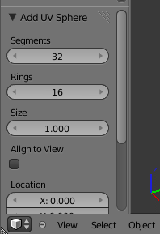Paramètres de l’UV Sphere
Cette boîte de dialogue apparaîtra à chaque fois que vous ajouterez un Mesh : elle vous permet de modifier les propriétés du maillage lors de sa création.
Dans le cas de l'UV Sphere, Blender nous propose de définir le nombre de Segments et Rings de la sphère ainsi que sa taille : Size. Une UV Sphere est en fait une sphère découpée en segments et anneaux, comme les parallèles et méridiens de la Terre. Plus vous augmenterez les valeurs des segments et anneaux, plus votre UV Sphere sera lisse, mais votre rendu sera aussi plus long.
Dans notre exemple, nous allons laisser Size à 1 changer Segments à 16 (voir la figure suivante).
Modifier les propriétés de l’UV Sphere
Lorsque vous modifiez les paramètres, vous pouvez voir en temps réel les changements dans la vue 3D. Vous avez remarqué que l'UV Sphere a été créée à la position du curseur 3D : voilà la première fonction du curseur !
La deuxième que l'on va aborder est la rotation d'un objet autour du curseur. Pour cela, sélectionnez votre UV Sphere et appuyez sur la touche R. Vous voyez que la sphère tourne sur elle-même… Mais nous, nous voulons qu'elle tourne autour du curseur. Cela peut être très pratique dans le cas d'une animation où la Terre tournerait autour du Soleil, par exemple.
Pour cela, on va définir le point de rotation de la sphère. Cliquez sur cette petite icône que j'ai encadrée en rouge sur la figure suivante.
Modifier le point de rotation de l’UV Sphere
Par défaut, le point de rotation est établi au centre de la sphère : Median Point. Choisissez à la place 3D Cursor.
Voilà, maintenant, tous les objets qui feront une rotation la feront autour du curseur 3D.
Placez le curseur 3D au milieu de la scène et l'UV Sphere quelques unités à gauche, comme sur la figure suivante.
Positionnement du point de rotation
Quand vous appuyez sur la touche R, l'UV Sphere tourne autour du curseur en suivant le mouvement de votre souris.
Troisième et dernière fonction : la mise à l'échelle, une fonction qui permet d'agrandir et de rétrécir un objet. Pour l'utiliser, réinitialisez la scène, sélectionnez le cube (toujours en Object Mode) et appuyez sur S. La taille de votre cube suit le mouvement de votre souris ! Plus besoin maintenant de vous préoccuper de la taille de votre objet, vous pouvez l'ajuster avec S !
Quel rapport avec le curseur 3D ?
Comme pour la rotation, on peut choisir que l'objet rétrécisse ou s'agrandisse à partir du curseur… C'est un peu compliqué tout cela, mais cela passera mieux avec de la pratique. Toujours avec la même scène, déplacez le curseur 3D (clic gauche) à 3 ou 4 unités du cube. Redimensionnez votre cube avec la touche S pour qu'il ait à peu près la même taille qu'avant (voir figure suivante).
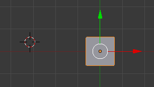Redimensionner le cube
Maintenant, choisissez le curseur 3D comme point de pivot, ainsi que nous l'avions fait avec l'UV Sphere.
Parfait ! Refaisons un essai avec notre cube. On appuie sur S, et là… plus le cube est proche du curseur 3D, plus il devient petit. Pour confirmer faites un clic gauche, pour annuler, un clic droit.
À quoi cela peut-il bien servir?
À notre niveau, rétrécir et agrandir un objet par rapport au curseur 3D ne sert à rien ! Tout au long de cet ouvrage, on utilisera le centre de l'objet, Median Point, comme point de pivot.
J'en ai fini avec tous ces termes techniques et explications un peu compliquées ! Mine de rien, on vient de voir les trois fonctions que vous utiliserez le plus dans Blender : le déplacement, la rotation et la mise à l'échelle.
Fatigué(e) de lire sur un écran ? Découvrez ce cours en livre.
Oui, ce n'est pas très poétique, je vous l'accorde. Les widgets, ce sont les trois flèches qui apparaissent lorsqu'on sélectionne un objet (en mode objet) et un point, une arête, une face (en mode édition).
Si vous avez besoin de vous rafraîchir la mémoire, consultez la figure suivante.
Les widgets
Les widgets permettent en fait de déplacer, effectuer une rotation ou changer l'échelle d'un objet, d'un point, d'une arête, d'une face… sans toucher à votre clavier.
En fait, cet outil est plutôt un raccourci qu'autre chose : il vous simplifie la vie, surtout quand vous n'avez pas encore l'habitude d'utiliser systématiquement les raccourcis claviers.
Mais alors… G, R et S, on les oublie ?
Non, bien que ces trois touches aient la même fonction que les widgets, leur utilisation permet un gain de temps assez net par rapport à ces derniers.
Après, à vous de voir avec quelle technique vous êtes les plus à l'aise !
Le déplacement
Revenons à nos moutons : réinitialisez votre scène, sélectionnez votre cube (clic droit) en Object Mode et placez-vous en vue caméra (touche 0). Enfoncez le clic gauche, sans relâcher, sur la flèche verte. Oh ! Le cube ne se déplace que dans la direction de la flèche verte ! Toujours sans relâcher le clic gauche, faites un clic droit pour annuler le déplacement.
Les plus perspicaces d'entre vous l'auront remarqué, ces trois flèches représentent les trois axes de géométrie :
la flèche rouge représente l'axe x ;
la flèche verte représente l'axe y ;
la flèche bleue représente l'axe z, l'axe de la profondeur.
Est-ce qu'on peut contraindre le déplacement sur un seul axe ?
Oui, on peut même combiner deux axes, ou alors les trois en même temps. Pour le déplacement sur un seul axe, il vous suffit d'un petit clic gauche sur la flèche de votre choix.
Déplacer sur deux axes
Gardez votre scène, assurez-vous que vous êtes toujours en vue caméra (touche 0) et recentrez votre cube.
Si, par exemple, on veut déplacer notre cube sur les axes x et y, il faut appuyer sur Shift et clic gauche sur l'axe z. L'axe z disparaît aussitôt et votre cube se déplace sur l'axe x et l'axe y, comme l'illustre la figure suivante
Déplacement sur deux axes
Faites un clic droit pour annuler le déplacement. C'est un peu compliqué tout cela, je vous l'accorde !
Déplacer sur les trois axes
Là, c'est beaucoup plus simple. On sélectionne notre cube (clic droit), ensuite on appuie sur la touche G (je vous avais dit qu'elle nous servirait !). Vous devriez obtenir une image similaire à la figure suivante.
Déplacement sur trois axes
Vous pouvez également, avec les widgets, cliquer sur le cercle blanc au centre de notre objet (voir figure suivante).
Utiliser les widgets pour le déplacement sur les trois axes
Ces opérations qui vous paraissent complexes aujourd'hui deviendront rapidement intuitives lorsque vous aurez un peu plus d'expérience.
La rotation
Tous les boutons qui contrôlent les widgets se trouvent en bas de la fenêtre 3D, à droite de la sélection du point de pivot (voir figure suivante).
Le contrôle des widgets
Le bouton représentant les trois axes est enfoncé, comme sur la figure suivante, ce qui signifie que l'outil widgets est activé.
Outil widget activé
Lorsque la flèche est enfoncée, comme sur la figure suivante, vous êtes en mode déplacement.
Mode déplacement
Pour sélectionner le mode rotation, cliquez sur l'arc de cercle (voir figure suivante).
Mode rotation
Comme le montre la figure suivante, votre cube est maintenant entouré de trois cercles :
un rouge pour l'axe x ;
un vert pour l'axe y ;
un bleu pour l'axe z.
Les widgets en mode rotation sur le cube
Comme pour le déplacement, sélectionnez un cercle (clic gauche enfoncé) pour voir le cube effectuer une rotation autour de l'axe correspondant (voir figure suivante).
Mettre le cube en rotation
Pour annuler la rotation, effectuez un clic droit.
Effectuer une rotation sur trois axes
Pour une rotation sur trois axes, il suffit de cliquer sur le cercle blanc des widgets. Si vous avez bonne mémoire, vous noterez que c'est exactement la même manipulation que pour le déplacement sur trois axes ! Notez que vous pouvez également utiliser la touche R.
La mise à l'échelle
Cliquons sur le dernier bouton : le petit carré (voir la figure suivante).
Bouton de mise à l’échelle
Les trois axes s'affichent alors (voir la figure suivante).
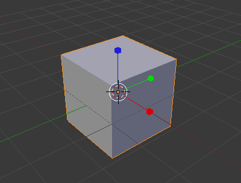Widgets activés
On peut aplatir le cube sur un axe : pour cela, faites un clic gauche enfoncé sur le carré rouge (voir figure suivante).
Cube aplati
Relâchez le clic gauche pour confirmer ou, si vous préférez l'ancienne forme, faites un clic droit pour annuler.
Agrandir ou réduire un objet sur deux axes
Comme pour le déplacement, maintenez la touche Shift enfoncée, puis cliquez (clic gauche enfoncé) sur l'axe à écarter, comme l'illustre la figure suivante.
Réduction de l’objet sur deux axes
Agrandir ou réduire un objet sur trois axes
Je pense que vous l'avez deviné : il faut cliquer sur le cercle blanc ! Ou alors, on peut utiliser le raccourci clavier S.
Fatigué(e) de lire sur un écran ? Découvrez ce cours en livre.
Quelle est la différence entre le mode objet et le mode édition ?
Imaginons que vous ayez une scène avec une voiture, une route, une lampe et la caméra. En mode objet, vous pouvez déplacer la voiture, lui assigner une couleur, régler les paramètres de la caméra, l'intensité de la lampe… En fait, ce mode permet d'organiser votre scène en général.
Le mode édition, au contraire, sert à modifier un objet en particulier : dans notre exemple de la voiture, c'est avec le mode édition que l'on pourra modéliser sa forme, lui ajouter un pneu, une jante, le capot…
Mode objet
Un peu de pratique ! Avant tout, mettez-vous en vue de dessus (touche 7).
Dézoomez un peu (molette bas) pour avoir à peu près la même position que moi sur la figure suivante et vérifiez que vous êtes bien en Object Mode.
La vue en Mode objet
Si ce n'est déjà fait, vous allez sélectionner le cube en cliquant dessus (clic droit).
Appuyez sur la touche G. Miracle ! Le cube suit le mouvement de la souris ! Pour confirmer le déplacement, faites un clic gauche ; pour l'annuler, un clic droit.
Retenez bien ce raccourci clavier, il vous sera très utile : la touche G sert à déplacer un objet.
Vous pouvez maintenant vous entraîner à déplacer les trois objets de votre scène.
Mode édition
Comme je vous l'ai dit, ce mode permet d'agir sur la forme de l'objet, en déplaçant les points, les arêtes, les faces, pour obtenir ce que l'on veut.
On va réinitialiser notre scène, pour repartir du bon pied, en cliquant sur File > New. Normalement, votre cube est automatiquement sélectionné ; sinon, un clic droit dessus fera l'affaire. Bien, nous allons maintenant passer en Edit Mode (voir figure suivante), soit en mode édition en français.
Passer en Edit Mode
La figure suivante vous montre la différence entre le Mode objet et le Mode édition.
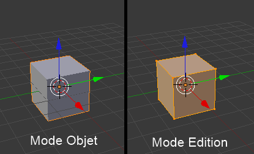Object Mode à gauche et Edit Mode à droite
On voit les points du cube ! Et de nouveaux boutons sont apparus à gauche de la fenêtre 3D, c'est normal ?
Oui, on voit les points du cube : c'est ce qui va nous permettre de modéliser l'objet que l'on veut. Pour les petits boutons qui sont apparus, nous y reviendrons plus tard dans ce cours : sachez seulement qu'ils nous fournissent des outils de modélisation pour déformer notre objet.
Passons en vue caméra (touche 0), nous aurons un meilleur panorama. Normalement, cela vous donne un résultat comparable à celui de la figure suivante.
Mode édition en vue caméra
Les huit points du cube sont sélectionnés, on peut le voir par leur couleur jaune-orange. Les points non sélectionnés sont en noir.
Maintenant, à vous de jouer : choisissez un point, sélectionnez-le (clic droit) et déplacez-le (touche G, puis clic gauche pour confirmer).
Vous pouvez désormais créer la forme que vous voulez ! Enfin… vous n'irez pas très loin : un cube ne comporte que huit points, avec cela c'est difficile de modéliser une Dodge Viper !
Mais c'est le principe qui est important : sachez que c'est comme cela qu'on crée des vaisseaux, des voitures, des bâtiments et même des visages humains : en déplaçant les points !
Dans la partie II de cet ouvrage, on verra comment augmenter le nombre de points pour faire des formes plus complexes et plus intéressantes.
Maintenant, nous allons voir comment faire un rendu de notre cube !
Fatigué(e) de lire sur un écran ? Découvrez ce cours en livre.
Dans cette section, je vais vous présenter plusieurs petites fonctionnalités utiles qui ne méritent pas un chapitre à part entière.
Sélectionner plusieurs choses en même temps
Reprenons une nouvelle scène en allant dans File > New. Gardez votre cube et passez en Edit Mode. Pour notre exemple, nous allons faire de notre cube un gratte-ciel ; il nous faut donc élever les quatre points de dessus. On sélectionne donc un premier point et on le monte, comme le montre la figure suivante.
Élévation du premier point de notre cube
On prend un deuxième point et on le monte également, comme l’illustre la figure suivante.
Élévation du second point
On prend encore un troisième point, on le monte à nouveau (voir figure suivante).
Élévation d’un troisième point.
C'est un poil répétitif, vous ne trouvez pas ? Et encore, ici, on n'a que quatre points à déplacer… Imaginez quand on en aura plus d'une centaine ! Remettez les points à leur place initiale (à peu près) et laissez la touche Shift enfoncée. Maintenant, faites un clic droit sur un premier point, puis un autre clic droit sur un deuxième… Oh ! Les deux sont sélectionnés ! Refaites un clic droit sur un point sélectionné, il se dé-sélectionne. Le tout en gardant la touche Shift enfoncée, bien sûr.
Retenez cette manipulation, elle vous sera utile : Shift + clic droit permet les sélections multiples.
Tout sélectionner ou dé-sélectionner
Il y a une touche qui permet de sélectionner tous vos points ou objets d'un seul coup : c'est la touche A. Quand vous êtes en Object Mode, cela va vous permettre de sélectionner ou dé-sélectionner tous les objets de votre scène (voir figure suivante).
Sélection de tous les objets (en mode objet)
Quand vous êtes en Edit Mode, cela va vous permettre de sélectionner ou dé-sélectionner tous les points de l'objet concerné (exemple : le cube, comme sur la figure suivante).
Sélection de tous les points (en mode édition)
En résumé
Comme Blender ne fait jamais rien comme les autres logiciels, la sélection d'objet s'effectue avec le clic droit de votre souris !
Lorsque l'on manipule une scène dans la vue 3D, on a le choix entre deux modes : le mode objet lorsqu'il s'agit d'ajouter un objet, de le déplacer, etc., et le mode édition pour modifier la forme d'un objet.
Par un clic gauche dans la vue 3D, on peut déplacer le curseur. C'est à partir de sa position qu'apparaîtront les nouveaux objets de notre scène.
Nous avons découvert un nouvel outil de manipulation, les widgets. Avec eux, vous pouvez déplacer, faire tourner, réduire ou agrandir un objet sur un ou plusieurs axes.
Dans bien des situations, les raccourcis G, R et S permettent d'aller plus vite que si l'on passe par les widgets, même si leur utilisation est moins intuitive au début.
La sélection de plusieurs objets est possible avec les touches Shift + clic droit, que l'on soit en mode édition ou mode objet.
Fatigué(e) de lire sur un écran ? Découvrez ce cours en livre.
Écoutez de toutes vos oreilles car les informations qui suivent sont fondamentales pour comprendre et manipuler Blender (sans vouloir vous faire peur !). En effet, vous allez voir quels sont les éléments essentiels pour orchestrer votre scène 3D.
Au programme : la lampe, l'outil caméra et, évidemment, la création du « rendu », c'est-à-dire le calcul de l'image à partir des données de la scène 3D.
J'ai trouvé une belle définition sur Wikibooks qui me paraît la meilleur explication ! Voici donc ce qu'est un rendu : « Un rendu est la création d'une image à partir du point de vue de la caméra, en tenant compte de tous les effets d'environnement de votre scène, et en générant une image réaliste basée sur vos réglages. Ce premier rendu finira très vite, mais vous trouverez que, lorsque vos scènes 3D deviendront plus complexes, le rendu prendra très longtemps. »
Bref, on va générer une image à partir de notre scène : c'est l'aboutissement de notre travail.
Le rendu est similaire à la prise d'une photo : il intervient à la fin, après que le photographe ait trouvé son sujet, un angle de vue intéressant, un belle lumière… sauf qu'en 3D, il nous faut tout créer avant de faire le rendu !
Comme dit précédemment, l'image est prise de la vue caméra, il faut donc vous assurer que le cube soit dans le cadre de la caméra (touche 0), comme illustré à la figure suivante.
Notre cube doit se situer dans le champ de la caméra
Ceci fait, cliquez sur le bouton Render (en forme d'appareil photo) dans la fenêtre des boutons. Jetons un coup d'œil ensemble aux onglets de ce menu (voir figure suivante).
Les onglets du menu Render
Pour plus de clarté, j'ai encadré en rouge les paramètres qu'il est important de connaître pour l'instant :
En tout premier, nous avons le bouton Image. C'est avec lui qu'on va lancer le calcul du rendu.
Mais avant, il y a quelques réglages intéressants à faire…
Resolution : c'est la taille de votre image (largeur et longueur en pixel). Vous pouvez la changer dans l'onglet Dimensions.
Blender vous laisse également le choix du format de l'image (et de vidéo, mais cela, nous l'aborderons quand nous ferons de l'animation).
Le format .PNG est sélectionné par défaut, je vous conseille de le laisser si vous n'avez pas de besoin spécifique.En bonus, vous avez le bouton BW (« Black&White », pour Noir et Blanc en français) qui fera en sorte d'enregistrer votre image en noir et blanc.
Enfin, la réglette Compression vous permettra de maximiser la qualité de votre rendu en dépit de la lourdeur du fichier image.
Généralement, une valeur de 95% vous offre un bon compromis. Enfin, si vous voulez un super beau rendu en Full HD de votre cube et que vous ne voulez perdre aucun détail, vous pouvez tout aussi bien mettre 100%.
Sans plus attendre, cliquons sur Image pour enfin voir le rendu du cube ! L'éditeur d'image va remplacer la vue 3D par le rendu de notre cube, affiché sur un beau fond gris, comme sur la figure suivante.
Que d'émotions, voici votre premier rendu 3D !
Si vous voulez enregistrer votre œuvre d'art (non non, je ne me moque pas), cliquez sur File > Save As, comme illustré à la figure suivante ou appuyez sur la touche F3.
Enregistrer son rendu 3D
Pour retourner à la vue 3D, appuyez simplement sur la touche Échap.
Normalement, votre temps de rendu a été de quelques secondes à peine. Comme vous vous en doutez, plus votre scène est complexe et vos objets détaillés, plus le temps de rendu sera long… c'est le prix à payer pour avoir de belles images !
Fatigué(e) de lire sur un écran ? Découvrez ce cours en livre.
Il y a un objet de notre scène dont je ne vous ai pas encore parlé : la lampe.
En bas à gauche, nous avons notre fameux cube. À droite, la caméra. Et entre les deux, il y a notre lampe ! Je l'ai entourée de rouge sur la figure suivante pour que vous ne la manquiez pas !
La lampe - cerclée de rouge
À quoi sert-elle ?
À éclairer, bien sûr ! Tenez, faites un test :
mettez-vous en vue de dessus (touche 7) ;
sélectionnez la lampe (clic droit) ;
dézoomez beaucoup (molette bas) ;
déplacez la lampe le plus loin possible du cube (touche G) ;
confirmez le déplacement (clic gauche) ;
et faites un rendu…
Cela devrait vous donner une image proche de la figure suivante.
Notre cube éclairé par la lampe
Morale de l'histoire : plus votre lampe est loin des objets, moins elle les éclaire… C'est comme dans la vraie vie !
Deux ou trois choses sur les lampes : pour l'instant, nous n'utiliserons qu'une seule lampe pour nos scènes mais, plus tard, vous verrez que l'éclairage va se diversifier et se complexifier… Il est aussi possible de régler la lampe (intensité, distance de projection, type de lampe, couleur des lampes, etc.) mais cela, c'est pour la prochaine partie !
Sachez aussi que la mise en place de l'éclairage est une étape importante dans toute scène 3D : un mauvais éclairage peut gâcher votre création. Mais nous y reviendrons plus loin dans cet ouvrage.
Fatigué(e) de lire sur un écran ? Découvrez ce cours en livre.
Dernier objet de la scène que nous n'avons pas encore vu, la caméra !
C'est à partir de son emplacement que Blender va générer le rendu. Il est donc important de vérifier qu'elle est bien orientée avec la touche 0.
En la sélectionnant dans le vue 3D, nous allons pouvoir accéder à son menu Object Data en forme de… caméra (voir figure suivante) !
Le menu de la caméra
Le paramètre le plus intéressant de ce menu est sans aucun doute Focal Lenght. Celui-ci va définir la longueur de la focale de la caméra. En gros, c'est le zoom : plus la valeur de la focale est forte, plus vous aurez l'impression de vous rapprocher de l'objet.
Choisissez par exemple 18mm pour avoir un effet « grand angle », particulièrement efficace dans les scènes d'intérieur où l'espace est restreint (voir la figure suivante). Ou alors, utilisez une focale de 50mm ou supérieure pour obtenir un plan rapproché d'un objet, comme à la figure suivante.
Une petite focale agrandit le champ de visionLe grand objectif resserre le champ de vision
En résumé
Le rendu est l'étape finale de notre création, Blender va générer une image à partir de toutes les informations de la scène (géométrie des objets, lampe, cadrage de la caméra…). Pour calculer le rendu, il faut cliquer sur le bouton Image dans le menu Render.
Le rendu est pris à partir du point de vue de la caméra, comme si cette dernière était l'appareil photo de notre scène. Avant de lancer un rendu, pensez à vérifier son cadrage ainsi que son niveau de zoom avec le paramètre Focal Length dans le menu Object Data de la caméra.
Pour ne pas être totalement sombre, une scène a besoin de lampes. S'il n'y en a qu'une seule dans la scène par défaut, nous verrons bientôt l'avantage d'avoir plusieurs lampes.
Fatigué(e) de lire sur un écran ? Découvrez ce cours en livre.
Avant de commencer notre première scène 3D, nous allons voir comment afficher nos objets de différentes manières (transparence, perpective…) et comment organiser une scène.
À la fin de ce chapitre, vous saurez répondre à ces questions :
Comment voir un objet en transparence ?
Quelle est la différence entre vue perspective et vue orthonormée ?
Comment sélectionner une multitude de points en deux clics ?
Que faire s'il y a trop d'objets ?
Oui, le programme de ce chapitre est chargé, mais ne vous inquiétez pas : c'est plus facile que cela en a l'air !
Jusqu'à présent, nous avons travaillé sur des objets « solides » : on ne voyait pas à travers.
Blender nous propose quatre modes d'affichage :
Textured : en français, « texturé » ;
Solid : en français, « solide » ;
Wireframe : en français, « fil de fer » ;
Bounding box : en français, « forme ».
La liste déroulante se trouve en bas de la vue 3D (voir figure suivante).
Les quatre modes d'affichage
Les deux modes les plus pratiques et les plus utilisés sont Solid et Wireframe. Dans ce cours, nous n'utiliserons quasiment que ces deux-là !
Je vous ai préparé quelques images pour vous montrer les différences entre ces modes : je vous renvoie donc aux figures suivante et suivante pour le mode objet, et aux figures suivante et suivante pour le mode édition.
La vue Solid en Object ModeLa vue Wireframe en Object ModeLa vue Solid en Edit ModeLa vue Wireframe en Edit Mode
À noter que pour le mode Solid, un petit bouton nous permet tout de même de visualiser discrètement les points cachés, comme vous pouvez le voir à la figure suivante.
En mode Solid, cliquez sur le bouton encadré de rouge pour voir les points
Fatigué(e) de lire sur un écran ? Découvrez ce cours en livre.
Dans n'importe quelle vue (à part la vue caméra, qui est un peu spéciale !), on a le choix entre deux types de projection : en perspective ou en orthonormée.
La vision en perspective est sans doute la vue la plus « réaliste » : plus on regarde de loin, plus les objets paraissent petits. La vision orthonormée, quant à elle, est très utile et plus technique, car elle permet de dessiner précisément et de mieux percevoir les distances et proportions des objets : c'est comme regarder la scène d'un point éloigné à l'infini. La projection orthonormée permet donc « d'aplatir » les objets, pour pouvoir modéliser des formes plus facilement (bien souvent, les plans d'architectes ou de pièces techniques sont représentés en vision orthonormée).
Regardons notre cube, en vue de dessus (touche 7), dans ces deux visions de projections différentes (voir figures suivante et suivante).
Vision en perspectiveVision orthonormée
Vous comprenez maintenant la différence ?
Comment savoir dans quelle projection je suis ?
Rien de plus simple ! C'est indiqué par une petite vignette située en haut à gauche de la fenêtre 3D (voir figure suivante).
Là, nous sommes positionnés en vue de dessus : « Top » et en projection perspective : « persp »
Blender vous indique votre vue (face, dessus, utilisateur…) et le type de projection actuel (orthonormé ou en perspective).
Fatigué(e) de lire sur un écran ? Découvrez ce cours en livre.
Cet outil nous permet de sélectionner ou dé-sélectionner tous les points (« Vertices » en anglais) compris dans un rectangle.
Sélection
Pour vous montrer son intérêt, nous allons nous mettre en situation : imaginons que vous vouliez avoir une demi-sphère. Vous ouvrez donc Blender, vous sélectionnez le cube en Object Mode et vous le supprimez avec la touche Suppr (voir figure suivante).
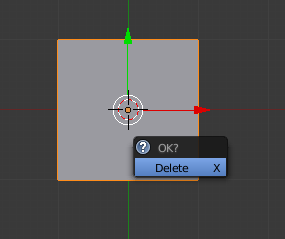Supprimez le cube en cliquant sur Delete
Ajoutez une UV Sphere, toujours en vue de dessus (touche 7), en passant par Add > Mesh > UV Sphere (voir figure suivante).
Insérer une UV Sphere
Définissez le nombre de Segments et de Rings à 16 afin d'avoir un maillage homogène.
Mettez-vous ensuite en mode d'affichage wireframe (touche Z) et zoomez sur notre sphère. Placez-vous enfin en vue de face (touche 1) et en vision orthonormée.
Consultez la figure suivante : c'est ce que vous devriez obtenir si vous avez bien suivi mes instructions !
L'UV Sphere en mode édition
Maintenant que vous savez le faire, vérifiez que vous êtes en vue de face orthonormée, en haut à gauche de la fenêtre 3D (voir figure suivante).
Vue de face : « Front » ; orthonormée : « Ortho »
Appuyons sur la touche A pour dé-sélectionner tous les vertices de la sphère, afin de sélectionner ensuite uniquement ceux que nous voulons supprimer.
Hop ! Tous les points sont dé-sélectionnés.
C'est ici que l'outil « boîte de sélection » entre en jeu : appuyez sur la touche B. Vous voyez apparaître dans votre vue 3D une grande ligne verticale et une autre horizontale, comme l'illustre la figure suivante.
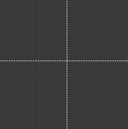La boîte de sélection
Pas d'inquiétude, c'est tout à fait normal !
Maintenant, laissez enfoncé le bouton gauche de votre souris et tracez un rectangle qui englobe la moitié de la sphère, comme sur la figure suivante.
Tracez un rectangle sur la moitié inférieure de la sphère
Relâchez ensuite le bouton gauche ; voilà, vos vertices ont tous été sélectionnés d'un coup (voir figure suivante) !
Les vertices sont maintenant sélectionnés (en orange)
Nous n'avons plus qu'à les supprimer en appuyant sur la touche Suppr puis en cliquant sur Vertices.
Notre but est atteint, nous voilà avec une demi-sphère ! Vous pouvez maintenant repasser en affichage Solid avec la touche Z et admirer le fruit de votre travail à la figure suivante !
Voici notre demi-sphère
N'est-ce pas magnifique ?
Dé-sélection
Pour dé-sélectionner des vertices avec l'outil « boîte », au lieu d'appuyer sur le bouton gauche de la souris, il faudra enfoncer la molette. Vous pouvez réinitialiser votre scène et tester avec le cube.
Le cercle de sélection
Il est très semblable à la boîte, il permet seulement de sélectionner des points avec un cercle à la place d'un rectangle.
Sélection
Reprenons une nouvelle scène en cliquant sur File > New et choisissons une UV Sphere en passant par Add > Mesh > UV Sphere. En Edit Mode, on se positionne en vue de face (touche 1) et en affichage Wireframe.
Pour utiliser le cercle de sélection, utilisez la touche C (voir figure suivante).
Le cercle de sélection
Lorsque vous faites un clic gauche, tous les points contenus dans le cercle sont sélectionnés, comme vous le montre la figure suivante.
Le clic gauche sélectionne les points contenus dans le cercle
Vous pouvez même laisser enfoncé le bouton gauche et balader votre cercle pour sélectionner tous les points que vous voulez (voir figure suivante).
Promenez votre cercle de sélection pour attraper tous les points que vous voulez
Voilà un outil bien pratique et intuitif que l'on utilisera souvent !
Dé-sélection
Cela fonctionne comme avec la boîte : en cliquant sur votre molette, les points sélectionnés contenus dans le cercle seront aussitôt dé-sélectionnés !
Fatigué(e) de lire sur un écran ? Découvrez ce cours en livre.
La notion de calque doit rappeler quelque chose à ceux qui font de la 2D. Pour les autres, disons que les calques sont comme des boîtes dans lesquelles on peut entreposer des objets.
Lorsqu'un de vos calques est surchargé de meshes, lampes, caméras et autres, on peut basculer une partie de ces objets dans un autre calque pour y voir plus clair.
Le panneau de contrôle des calques se trouve en bas de la fenêtre 3D, au milieu (voir figure suivante). Attention, il faut être en mode objet pour le voir.
Le panneau de contrôle des calques
Le premier bouton est enfoncé, on est donc dans le premier calque. Faites un clic gauche sur le deuxième bouton, à droite (voir figure suivante).
Sélectionner le second calque
La fenêtre 3D redevient libre… Pour changer un ou plusieurs objets de calque, sélectionnez-les, appuyez sur M puis choisissez le calque de destination pour les objets sélectionnés !
En résumé
Pour visualiser nos objets dans la vue 3D, nous passerons souvent de l'affichage transparent (wireframe) à l'affichage Solid avec la touche Z.
La vision orthonormée permet de voir des objets de façon écrasée, comme sur un dessin technique ou d'architecture. Cela est très utile lorsque l'on modélise de face ou de profil.
Encore plus pratique que shift + clic droit, la boîte (B) et le cercle de sélection (C) sont des outils indispensables pour sélectionner beaucoup de points rapidement.
Lorsque vous travaillerez sur des scènes très chargées en objets, les calques vous permettront d'entreposer certains objets encombrants afin de dégager la vue 3D.
Fatigué(e) de lire sur un écran ? Découvrez ce cours en livre.
Dans les deux prochains chapitres, nous allons modéliser notre première scène comportant une table, avec deux murs et un sol.
« Pourquoi une table ? » me demanderez-vous. Eh bien, la table est très souvent choisie comme exemple d'une modélisation simple, pour débutants. Elle va nous permettre de découvrir quelques outils fondamentaux de Blender et de revoir un peu tout ce que nous avons appris.
Avant de modéliser quoi que ce soit, il faut savoir où l'on va. En l’occurrence, tout le monde sait ce qu'est une table mais, pour un objet plus complexe, il est souvent recommandé d'utiliser des images de référence, ou blueprints. Dans notre cas, nous allons nous lancer dans une table à quatre pieds et à plateau rectangulaire, très classique.
Pour la forme générale de notre table, nous allons partir du cube de départ. Cliquez sur File > New.
On va aplatir le cube suivant l'axe z pour avoir un plateau carré, et l'étirer suivant l'axe des x pour avoir notre forme rectangulaire. Pour cela, on va utiliser les widgets, avec l'outil Size, en mode objet.
Placez-vous en vue de face (touche 1), en vision orthonormée (touche 5) (voir figure suivante). Zoomons un peu, pour bien voir notre cube.
Notre cube en vue de face, vision orthonormée
Aplatissez le cube suivant l'axe Z. Comme je vous l'ai indiqué dans les chapitres précédents, on va cliquer sur la branche bleue et descendre la souris, mais cette fois-ci en maintenant enfoncée la touche Ctrl.
On va rendre la dimension Z du cube dix fois plus petite. Descendez votre souris jusqu'à atteindre la valeur 0.1 en bas à gauche de la fenêtre 3D (voir figure suivante).
Diminuez la dimension Z jusqu'à 0.1
Nous avons maintenant un plateau de table carré. Seulement nous, nous voulons qu'il soit rectangulaire ! Rien de plus simple, on va encore utiliser les widgets en mode Size et étirer cette fois suivant l'axe X.
Plaçons-nous en vue de dessus (touche 7) et, avec la touche Ctrl enfoncée, cliquons sur la branche rouge pour la déplacer vers la droite jusqu'à ce que Scale soit à 2.000.
Relâchez la touche Ctrl. Votre « cube » devrait ressembler à celui de la figure suivante.
Nous avons maintenant un beau rectangle !
Mettez-vous en vue caméra avec la touche 0 pour mieux apprécier votre travail (voir figure suivante).
Notre plateau est terminé !
Il reste maintenant à faire les pieds !
Fatigué(e) de lire sur un écran ? Découvrez ce cours en livre.
Pour modéliser les quatre pieds de la table (en mode édition), on va ajouter des faces sur les côtés du plateau. Ensuite on les extrudera (du verbe « extruder ») pour créer les pieds.
Voici une définition simple et claire : « La fonction extrude permet de dupliquer les points sélectionnés, ceux-ci seront alors automatiquement liés aux anciens, et de les déplacer dans la foulée. »
Cette notion d'extrusion peut paraître un peu compliquée à première vue, mais elle vous sera très vite familière.
Revenons à notre table. On se met en vue dessus (touche 7), en mode édition, avec les widgets en mode déplacement.
On va passer en mode d'affichage Wireframe (touche Z) pour pouvoir sélectionner les points cachés (voir figure suivante).
Mettez-vous en mode Wireframe dans le mode édition
Mettez-vous à l'aise en zoomant suffisamment pour voir la totalité de la table dans la fenêtre 3D.
Ceci fait, on va sélectionner les quatre points à gauche du plateau (voir figure suivante), grâce à la boîte de sélection (touche B).
Sélectionnez les quatre points de gauche avec la boîte de sélection
Nous voici maintenant prêts à utiliser la fonction « extrude » !
Appuyez sur la touche E. Il faut maintenant positionner les points qui viennent d'être créés. En maintenant enfoncée la touche Ctrl, déplacez les points de 0.2 vers la gauche, comme indiqué sur la figure suivante.
Déplacez les points de 0.2 vers la gauche
Confirmez le déplacement avec un clic gauche. Si tout se passe bien, vous devriez obtenir le même résultat que sur la figure suivante.
Le résultat de l'extrusion : 4 nouveaux points !
Si vous vous êtes un peu emmêlé les pinceaux, pas d'inquiétude ! Il existe une fonction annuler dans Blender, il suffit d'appuyer sur les touches Ctrl + Z.
On va faire la même chose de l'autre côté :
On dé-sélectionne tous les points en appuyant sur A.
On sélectionne les quatre points de droite avec la boîte de sélection.
On appuie sur E et on confirme avec Region.
On déplace les points créés de 0.2 vers la droite.
Et pour le résultat en images, reportez-vous aux figures suivante et suivante.
Extrusion à droitePlateau après l'extrusion
Vous aimez l'extrusion ? Tant mieux, car on recommence ! Cette fois, on va sélectionner les huit points du haut (voir figure suivante).
Sélection des points supérieurs
On appuie sur E et on les déplace de 0.2 vers le haut, comme indiqué sur la figure suivante.
Extrusion des points supérieurs
On confirme avec un clic gauche. Voici notre résultat à la figure suivante.
Les nouveaux points sont fixés
Comme vous vous en doutez, on va procéder de la même manière pour les points du bas. Mais cette fois, je vous laisse faire tout seuls : c'est exactement la même procédure qu'avec le haut, vous devez juste déplacer les points de 0.2 vers le bas !
Pour admirer notre table après toutes ces opérations, je vous renvoie à la figure suivante.
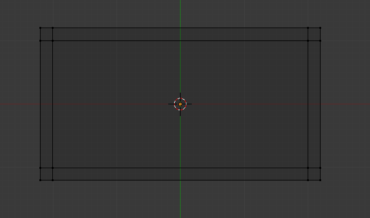Notre table après les extrusions
Au fait, pourquoi on a fait toutes ces extrusions ? Quel rapport avec les pieds ?
En faisant tout cela, on a créé de nouvelles faces, qui vont nous servir de bases pour extruder les pieds.
Remettons-nous en affichage Solid en appuyant sur la touche Z (voir figure suivante).
Affichage de notre table en Solid
On va maintenant sélectionner par faces, et non plus par points : ce sera plus facile pour ce que l'on veut faire.
En bas de la fenêtre 3D, cliquez sur la petite icône représentant un cube avec une face colorée (voir figure suivante).
Utiliser la sélection par face
Vous avez remarqué que l'on ne voit plus les points, mais des carrés représentants les faces.
Dé-zoomez pour avoir dans votre fenêtre 3D la table et la lampe, comme sur la figure suivante.
Notre table en vue de dessus et affichage solide
Nous sommes actuellement en vue de dessus ; pour extruder les pieds, il nous faut passer en vue de dessous. On appuie donc sur Ctrl + 7.
En changeant de vue, le positionnement de la lampe est modifié, comme vous pouvez le voir sur la figure suivante.
La lampe a changé de place !
Maintenant, sélectionnons les quatre faces des coins, comme indiqué à la figure suivante.
Sélectionnez puis extrudez les quatre coins de la table vers le bas
Repassez en vue de face avec la touche 1 et extrudez les pieds vers le bas d'un facteur 2.0. Appuyez sur E (comme d'hab' !)
En maintenant enfoncée la touche Ctrl, on laisse descendre les pieds jusqu'à 2.0, puis on fait un clic gauche pour confirmer le déplacement (voir figure suivante).
Voilà notre table !
Dé-sélectionnez maintenant tous les points (touche A), passez en mode objet et admirez votre œuvre en vue intuitive (molette enfoncée) - voir la figure suivante.
La table est maintenant modélisée
Maintenant, le rendu !
Fatigué(e) de lire sur un écran ? Découvrez ce cours en livre.
La modélisation est terminée, nous allons maintenant travailler sur le rendu de la table.
Mettons-nous en vue caméra, pour voir si le cadrage est correct. Ce que vous verrez au rendu se trouve dans la partie non noircie (voir figure suivante).
Un pied de la table est dans la zone noircie
Un des pieds de la table est hors-cadre : remontez-la un peu avec la touche G ou les widgets, comme sur la figure suivante.
Ça y est, notre table est dans le champ
Allez dans le menu Render et cliquez sur le bouton Image.
L'éditeur d'image va remplacer la fenêtre de la vue 3D, et le rendu se génère (en quelques secondes normalement). La figure suivante illustre le rendu de notre table.
Notre première table en 3D… quel moment d'émotion !
Vous voulez montrer votre première image de synthèse à vos amis pour les épater ? Alors il faut l'enregistrer ! Pour ceci, appuyez sur F3 ou passez par Image > Save As (voir figure suivante).
Enregistrer son rendu
L'explorateur de fichiers de Blender s'ouvre, vous permettant de naviguer dans les dossiers de votre disque dur afin de choisir l'emplacement où sera enregistrée votre image. Par défaut, le dossier d'enregistrement est : C: mp\.
Pour ma part, j'ai choisi d'enregistrer mon image dans le dossier Mes Images, comme illustré à la figure suivante.
Dossier d'enregistrement
Dans la deuxième ligne, vous pouvez taper le nom de l'image. Vous noterez à quel point j'ai fait preuve d'imagination !
Pour finir, vous pouvez choisir le format de l'image : le .PNG est un choix pertinent si vous voulez publier vos rendus sur Internet car il génère des fichiers de taille modeste comparés à d'autres comme le .GIF ou le .BMP.
Une fois vos petits réglages terminés, vous n'avez plus qu'à cliquer sur Save As.
Pour finir ce chapitre, enregistrez le fichier .blend de la table, il nous resservira dans le prochain TP !
En résumé
Pour notre première modélisation, nous sommes partis d'un simple cube que nous avons aplati et retaillé pour obtenir une forme approchant celle de la table.
L'outil extrude fait jaillir des formes à partir de faces existantes sur un maillage. Entraînez-vous à l'utiliser pour modéliser des objets simples (meubles, livres, bâtiments…). C'est un outil très puissant, incontournable en modélisation !
Fatigué(e) de lire sur un écran ? Découvrez ce cours en livre.
Nous venons de modéliser notre première table : c'est un bon début mais, avouons-le, notre scène reste encore un peu vide. Pour l'accompagner, je vous propose d'ajouter des chaises, un sol, des murs… bref, tout ce qu'il y a dans la vraie vie ! En plus, cela nous permettra de passer en revue des outils de modélisation et de revoir l'extrusion (j'en vois déjà certains qui grimacent).
Nous allons commencer par ouvrir la table que nous avions avons modélisée lors du dernier chapitre : allez dans File > Open (voir figure suivante).
Ouvrir un fichier
Nous nous retrouvons avec notre bonne vieille table.
Pour qu'elle ne nous dérange pas lors de la modélisation d'autres objets, déplacez-la dans un autre calque (avec la touche M, rappelez-vous !)
Avant d'attaquer ce TP, assurez-vous que votre curseur 3D est bien au milieu de la scène. Si ce n'est pas le cas, tapez la combinaison de touches Shift + C : votre curseur revient à l'origine (et, sur les scènes remplies, Blender adaptera la vue pour englober tous les objets).
Mettez-vous en vue de dessus (touche 7) et ajoutez un cube (eh oui, encore !) en cliquant sur Add > Mesh > Cube.
Passons en vue de face (touche 1) et, comme avec la table, aplatissons notre cube sur l'axe des Z. Mettez-vous en mode Size pour les widgets, comme indiqué à la figure suivante.
Assurez-vous d'être en mode Size
Faites un clic gauche sur la branche bleue (voir figure suivante) et descendez la souris, en maintenant enfoncée la touche Ctrl, jusqu'au dixième de la taille initiale (à 0.1)
Le cube tout aplati en hauteur
On revient en vue de dessus (touche 7) et on se met en mode édition.
Dé-sélectionnez tous les points avec la touche A et passez en affichage transparent avec la touche Z (voir figure suivante).
Passer en affichage transparent
Maintenant, on va attaquer les pieds de la chaise, mais d'une façon différente : on va utiliser le Loop cut, qui permet de couper un mesh pour ajouter des faces.
Appuyez sur Ctrl + R. Si vous approchez votre pointeur du centre de votre objet, un trait rose apparaît (voir figure suivante).
Un trait rose apparaît au passage du pointeur
Faites tourner votre molette pour que deux traits verticaux apparaissent, puis confirmez avec clic gauche (voir figure suivante).
Deux traits verticaux apparaissent
Notre cube est coupé ! Profitons que ces points soient sélectionnés pour les redimensionner : avec la branche rouge (axe des x), agrandissez l'espace entre les deux coupes d'une valeur de 2.4, en maintenant simultanément enfoncés le clic gauche et la touche Ctrl, comme illustré à la figure suivante.
Agrandir l'espace entre les deux coupes
Relâchez le bouton de la souris et, enfin, dé-sélectionnez tous les points avec la touche A. Cela ne vous rappelle-t-il pas quelque chose ? Eh oui, cela ressemble fortement à notre début de table quand on extrudait les points vers l'extérieur. Dans Blender, vous vous rendrez vite compte qu'il y a plusieurs méthodes pour modéliser une forme. Le tout est de trouver la plus adaptée à l'objet en question et à vos préférences !
On continue les coupes, cette fois horizontalement.
Un petit Ctrl + R et on place nos deux traits, comme sur la figure suivante.
Replacez vos traits pour la coupe horizontale…
Vous faites comme précédemment, en augmentant la taille des y de 2.4, comme sur la figure suivante.
…et écartez-les à l'aide des widgets
Dé-sélectionnez tout, passez en mode d'affichage Solid et en vue de dessous, comme sur la figure suivante.
La chaise en vue de dessous
Nous voilà prêts à extruder les pieds de la chaise ! Passez en sélection par faces et sélectionnez les quatre faces situées dans les coins, comme l'illustre la figure suivante.
Sélectionnez les quatre faces situées dans les coins du cube
Repassons en vue de face et extrudons nos pieds de 1.5 vers le bas (voir figure suivante).
Extrusion des pieds
Confirmez avec un clic gauche puis revenez en vue de dessus et sélectionnez les trois faces du haut (voir figure suivante).
Sélectionnez les trois faces supérieures
Passez en vue de côté (touche 3) et extrudez ces faces de 2.0 vers le haut, comme indiqué à la figure suivante.
Notre chaise est finie !
Dé-sélectionnez vos faces et repassez en mode objet. Maintenant que notre modélisation est terminée, on va pouvoir repasser la chaise dans le calque 1 : sélectionnez la chaise et appuyez sur M. Une boîte de dialogue s'ouvre. Cochez la première case, qui correspond au calque nunméro 1 où nous avons laissé la table (voir figure suivante).
Placez la chaise dans le calque 1
Plop ! La chaise a disparu ! Revenez dans le calque 1 et admirez votre scène !
Fatigué(e) de lire sur un écran ? Découvrez ce cours en livre.
Mais… la chaise flotte en l'air ?! Et elle est dans la table ! Et on ne fait pas de décor ?
On va remédier à tout cela, pas d'inquiétudes !
Tout d'abord, occupons-nous de placer un sol et des murs (pour l'instant, on se croirait un peu dans l'espace…). Replacez-vous en vue de dessus (touche 7), en affichage transparent, et ajoutez un plan en passant par Add > Mesh > Plane.
Redimensionnez-le pour l'avoir six fois plus grand, en utilisant la touche S (voir figure suivante).
Redimensionnez votre plan avec la touche S
Passez en mode édition et sélectionnez trois vertices du plan, avec shift + clic droit, comme sur la figure suivante.
Sélectionnez les vertices
Revenez en vue de face (touche 1) et extrudez de 6 ou 7 vers le haut, de manière à avoir de jolis murs (voir figure suivante).
Créez vos murs avec l'outil extrude
On s'aperçoit que la chaise et la table sont en-dessous du niveau du sol… Remédiez à cela en utilisant les widgets en mode déplacement ou la touche G pour les aficionados des raccourcis clavier (voir figure suivante).
Déplacez votre sol au niveau des pieds de la table
Pour finir, vous pouvez vous placer en vue de dessus et déplacer / orienter la chaise pour qu'elle ait une pose plus naturelle, comme sur la figure suivante.
Donnez une position plus naturelle à la chaise
Dernières petites choses : vous pouvez dupliquer votre chaise (ou tout autre objet) avec shift + D pour pouvoir accueillir plus de personnes dans votre salon ! Pensez aussi à bouger la caméra pour englober toute la scène, et à déplacer la lampe si les ombres ne vous conviennent pas.
Voici à la figure suivante un exemple de rendu.
Et voilà notre première scène 3D !
Fatigué(e) de lire sur un écran ? Découvrez ce cours en livre.
Comme vous pouvez le voir, notre scène reste relativement simpliste (notamment la chaise), mais il ne tient qu'à vous de l'améliorer ! Avec tout ce que vous avez appris, vous êtes capables de :
rajouter des bords à la table et aux chaises ;
refaire le dossier de la chaise ;
revoir les proportions ;
améliorer le cadrage et la mise en scène ;
ajouter d'autres objets (buffets, fenêtre, bureau en arrière-plan…) ;
et bien d'autres choses encore…
Voici à la figure suivante ce que j'obtiens avec quelques modifications de modélisation et l'Ambient Occlusion, que l'on verra bientôt.
Un nouveau rendu de la scène avec quelques améliorations
Ça y est, vous détenez les principales clés du logiciel : l'interface, la navigation dans l'espace 3D, les outils de sélection... bravo, c'est sans doute le pas le plus difficile que vous venez de franchir. ;)
Les prochaines parties seront plus axées sur la pratique et vous paraitront sans doute plus divertissantes...
Alors, qu'est-ce que vous attendez ? Hop, à la suite ! ^^
Fatigué(e) de lire sur un écran ? Découvrez ce cours en livre.
Le monde serait bien fade sans couleurs… heureusement, vous allez vite apprendre à mettre du bleu, du rouge et du vert partout sur vos objets !
Le procédé est en fait assez simple dans Blender : on va assigner à chaque objet (une table, un sol, une bouteille…) un matériau. C'est avec ce matériau que l'on va choisir la couleur de l'objet, mais également des choses plus complexes comme les shaders que vous allez bientôt avoir la chance de découvrir !
Voilà un chapitre bien rempli mais sans doute passionnant qui nous attend !
Tout au long du chapitre, nous allons faire plein de petits tests, découvrir les boutons du menu des matériaux et les essayer sur des meshes…
Essayer sur un mesh ? Encore le cube ?
Non non ! Nous allons utiliser Suzanne, la mascotte de Blender (voir figure suivante) ! Elle est parfaite pour faire des tests de matériaux car elle comporte des creux, des bosses, de belles formes arrondies… un véritable objet complexe !
Elle est déjà modélisée, il ne reste donc qu'à l'ajouter en cliquant sur Add > Mesh > Monkey.
Passez en mode objet (touche TAB) et restez en vue de dessus.
Suzanne, la mascotte de Blender
Comme vous pouvez le remarquer, ce singe a quand même une tête très « carrée », pas bien arrondie…
Mais alors là, vous allez me demander…
Comment lisse-t-on un objet ?
Ici, nous allons le faire rapidement, mais un prochain chapitre sera consacré aux méthodes de lissage et à la modélisation en Subsurf.
Dans le menu Object Modifiers (avec l'icône en forme de clef à molette), cliquez sur Add Modifier. Une liste déroulante apparaît (voir figure suivante), choisissez Subdivision Surface (souvent abrégé en SubSurf).
Sélectionner le Modifier « Subdivision Surface »
Le SubSurf rajoute virtuellement des points à votre mesh en suivant les courbes de l'objet, ainsi que l'illustre la figure suivante.
Application du SubSurf sur Suzanne
C'est déjà beaucoup mieux, mais pas encore parfait ! Dans l'onglet des Mesh Tools, cliquez sur Smooth qui lissera pour de bon votre objet (voir figure suivante).
Choisir Smooth dans l'onglet Mesh Tools
Je vous invite à regarder la figure suivante pour admirer le résultat !
Notre Suzanne est toute lisse
Placez-vous en vue caméra (touche 0) et, à l'aide des widgets, effectuez des rotations pour bien voir Suzanne (comme indiqué à la figure suivante).
Effectuer des rotations sur un objet
Maintenant que nous n'en avons plus besoin, vous pouvez désactiver les widgets pour améliorer la visibilité dans la vue 3D. Nous voilà prêts à peindre cette chère Suzanne !
Fatigué(e) de lire sur un écran ? Découvrez ce cours en livre.
Comme nous l'avons vu dans le chapitre sur l'interface, les menus de Blender sont divisés en onglets que vous pouvez masquer à volonté. Dans le cas du menu des matériaux, ces possibilités sont intéressantes car certains des onglets (Subsurface Scatering, Strand, Shadow…) qui composent ce menu sont… inutiles ! Attention, je ne dis pas que les fonctions apparaissant dans ces onglets sont totalement inutiles et qu'elles n'ont rien à faire dans Blender. Toutefois, à notre niveau, elles n'ont pas d'utilité, donc autant se simplifier la tâche en les ignorant. Vous pouvez par conséquent réduire ces onglets pour vous faire un peu de place dans ce long panneau.
Tout en haut du menu, on a la fenêtre de prévisualisation du matériau (voir figure suivante). Elle nous offre un aperçu de ce que donnera le matériau.
La fenêtre de prévisualisation permet d'avoir un aperçu du matériau
Les icônes entourées de rouge sur la figure suivante permettent de changer la forme de l'objet en Preview.
Pour notre test, nous allons choisir Suzanne à la place de la sphère, ce sera parfait !
Vous noterez également sur cette dernière figure que j'ai renommé le matériau. Je vous encourage à faire de même à chaque fois que vous créez un nouveau matériau, histoire de ne pas vous emmêler les pinceaux quand votre scène en contiendra des dizaines.
Intéressons-nous maintenant au premier onglet, Diffuse, qui permet de changer la couleur du matériau (voir figure suivante).
Modifier la couleur de son matériau avec Diffuse
Vous pouvez changer la couleur du matériau en ajustant manuellement les valeurs de bleu, rouge et vert.
Toutes les valeurs à 0, c'est le noir. Toutes les valeurs à 1, c'est le blanc.
Vous pouvez égayer un peu Suzanne en lui assignant une jolie couleur, comme aux figures suivante et suivante.
Une Suzanne bleueUne Suzanne noire
Fatigué(e) de lire sur un écran ? Découvrez ce cours en livre.
Après avoir vu le réglage de la couleur, nous allons nous attaquer à celui des shaders.
Les shaders, qu'est-ce que c'est ces bêtes là ?
Les shaders sont des modèles qui vont définir les taches de lumière sur le mesh, aussi appelées « taches spéculaires ». Régler les shaders permet de définir comment votre matériau va refléter la lumière (de façon douce et diffuse comme du bois, ou bien dure comme un métal…). Même si leur intérêt et leur fonctionnement peuvent vous paraître un peu obscurs au premier abord, les shaders sont un élément indispensable à la création d'un matériau convaincant.
Les réglages du shader se trouvent juste en-dessous de la prévisualisation du matériau et sont répartis sur deux onglets (voir figure suivante) :
Diffuse, pour le shader diffus ;
Specular, pour le shader spéculaire.
Les shaders Diffuse et Specular
Shader diffus
Le shader diffus, nous l'avons en fait déjà aperçu quand nous avons changé la couleur de notre matériau. La valeur Intensity détermine le degré de réflexion de la lumière par le matériau. En gros, plus il est est fort, plus notre Suzanne renverra la lumière et paraîtra lumineuse (voir figures suivante, suivante et suivante).
L'intensité du shader diffus à 0.1L'intensité du shader diffus à 0.5L'intensité du shader diffus à 1
C'est tout pour le shader diffus ! Pas trop compliqué, hein ?
Shader spéculaire
Le shader spéculaire est quant à lui un peu plus difficile à appréhender que le shader diffus : déjà, il est composé de deux paramètres, Intensity et Hardness.
Commençons par Intensity : ce paramètre va doser la puissance des taches de lumière qui vont se refléter sur votre objet (voir les figures suivante, suivante et suivante).
Intensity à 0 : les taches de lumière n'apparaissent pasIntensity à 0.5Intensity à 1
Après avoir défini l'intensité des taches spéculaires, vous pouvez régler leur taille avec Hardness.
Voici une série d'illustrations de l'effet du shader Hardness aux figures suivante, suivante et suivante
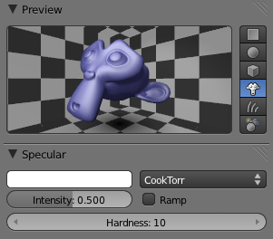Hardness à 10 : la spécularité est diffuseHardness à 50Hardness à 200 : la spécularité est plus dure, l'objet paraît luisant.
Tout ce qu'il vous reste à faire maintenant est de vous entraîner : choisissez une matière au hasard (du carton, de la porcelaine, etc.) et essayez de l'imiter avec Blender en ajustant les différents réglages des shaders.
Types de shaders
Même si ce n'est pas essentiel pour l'instant, sachez qu'il existe d'autres shaders que ceux sélectionnés par défaut, Lambert et CookTorr (voir figure suivante).
Les autres types de shaders
Ils gèrent différemment la lumière, pour des matières ou des effets plus particuliers. Vous aurez le plaisir de les découvrir dans un chapitre ultérieur de ce cours !
Fatigué(e) de lire sur un écran ? Découvrez ce cours en livre.
Maintenant que vous savez modifier la couleur d'un matériau, intéressons-nous à la possibilité de rendre un mesh transparent ou de type « miroir ».
Toutes ces fonctions se trouvent dans les onglets Transparency et Mirror, ainsi qu'indiqué à la figure suivante.
Les onglets Transparency et Mirror
Transparence
Pour avoir un matériau transparent, rien de plus simple : il faut cocher Transparency et baisser la valeur de Alpha (voir figure suivante).
Paramétrer la transparence d'un objet
Mais pour aller plus loin dans le réalisme des objets transparents et corser un peu la chose, on va utiliser un indice de réfraction.
Indice de réfraction ?
Si vous êtes en seconde ou au-delà, vous devez (normalement) connaître cette notion. Cet indice, propre à chaque matière, détermine l'angle de déviation de la lumière quand elle pénètre l'objet. Ou plus simplement : plongez un crayon dans un verre d'eau, et vous verrez qu'il paraît brisé !
Par exemple, l'indice de réfraction de l'eau est de 1.33. Celui du verre est de 1.50.
Revenons à notre singe : appuyez sur le bouton Ray trace, qui va nous permettre de définir une transparence plus évoluée (voir figure suivante).
Ray trace permet d'affiner la transparence
Maintenant, si vous augmentez légèrement la valeur de IOR, vous pouvez observer une déformation (voir figure suivante).
Dosez l'effet de miroir avec Reflectivity
Transparence et réfraction sont maintenant acquises ; attaquons-nous à l'effet Mirror !
Miroir
Décochez Transparency et remettez Alpha à sa valeur initiale (1).
La gestion de la réflexion (le fait de refléter l'environnement tel un miroir) est plus simple que la transparence, il vous suffit de cocher la case Mirror dans l'onglet du même nom et de jouer avec le bouton Reflectivity (voir figure suivante).
La valeur de Reflectivity modifie l'effet de miroir
Vous pouvez bien évidemment utiliser Transparency et Mirror sur un même matériau, mais le résultat risque d'être… étonnant !
Fatigué(e) de lire sur un écran ? Découvrez ce cours en livre.
Votre Preview, ainsi que les onglets, ont dû changer (voir figure suivante).
L'onglet Halo
L'affichage de Suzanne dans la vue 3D a changé lui aussi, ainsi que vous pouvez le voir à la figure suivante.
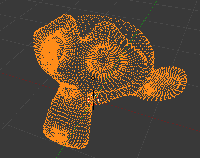L'effet Halo sur Suzanne
En fait, l'effet de Halo sur votre matériau peut se résumer en une phrase : Tous les vertices de votre mesh sont maintenant transformés en points lumineux.
Pour avoir un bon effet de laser, ce n'est pas très compliqué, il suffit de jouer avec ces trois paramètres :
Halo Size : la taille du point lumineux. Attention à ne pas lui donner une valeur trop élevée, restez dans les environs de 0.1.
Hard : la luminosité de votre point.
Add : l'intensité du dégradé avec le blanc.
Malheureusement, pour la fonction Halo, la prévisualisation est très trompeuse : elle affiche les points beaucoup trop petits. Vous devez plutôt faire des tests directement avec le rendu.
Voici à la figure suivante un exemple de rendu de Suzanne, réalisé avec la configuration indiquée à la figure suivante.
Les points lumineux au renduConfiguration du Halo sur Suzanne
Vous pouvez fabriquer votre sabre laser grâce une arête à laquelle vous ajouteriez beaucoup de points avec Loop cut - voir figure suivante.
Après quelques tâtonnements, voici trois beaux sabres lasers !
Il est bien sûr possible de faire beaucoup mieux, je vous fais confiance !
En résumé
Pour modifier la couleur d'un objet, on doit lui ajouter un matériau. Dans le menu des matériaux, on retrouve nombre de réglages pour définir la matière que l'on veut : shaders, spécularité, transparence…
Les shaders, bien qu'ils semblent rebutants au début, sont une notion fondamentale pour bien définir vos matériaux. Ils contrôlent la manière dont votre surface va refléter la lumière, donnant ainsi l'illusion d'un métal, d'un plastique, du bois…
Plus superflue, la fonction Halo transforme les points d'un maillage en points lumineux. Amusant et utile pour créer des effets spéciaux !
Fatigué(e) de lire sur un écran ? Découvrez ce cours en livre.
Pourquoi se contenter de simples couleurs unies pour nos matériaux ? Ce serait trop bête !
Avec les textures, vous allez bientôt pouvoir plaquer des motifs de toutes sortes sur vos objets, qui vont changer de couleur, voire de forme…
Ouvrez l'œil et le bon car, à la fin de ce chapitre, je vous proposerai un petit défi de création de scène, et vous ne pourrez le relever qu'en ayant bien suivi mes explications (ça y est, vous sentez la pression ?).
C'est une image 2D que l'on va appliquer sur un objet 3D, une sorte de papier peint que l'on va coller sur notre Suzanne, par exemple.
Ouvrez une nouvelle scène, ajoutez Suzanne et lissez-la comme nous l'avons fait au chapitre précédent. Ajoutez-lui un matériau, que nous nommerons « Essai texture » comme indiqué à la figure suivante.
Ajouter un matériau
Pour agrémenter notre matériau de belles textures, il va falloir se rendre dans le menu… Texture ! Ce menu se trouve juste à droite de celui des matériaux (voir figure suivante).
Le menu Texture
Entourés de rouge, vous voyez le matériau (Essai texture) qui est appliqué à notre objet (Monkey), et la texture qui est appliquée au matériau (Tex).
La figure suivante vous propose un schéma détaillant l'application d'une texture.
La hiérarchie entre un objet, un matériau et une texture
Vous aurez sûrement remarqué que j'ai écrit « Texture(s) » avec un « s » entre parenthèses… pourquoi ? Tout simplement parce que l'on peut ajouter plusieurs textures au même matériau. Dans ce chapitre, nous allons nous en tenir à une seule texture par matériau (je ne veux pas trop compliquer la chose pour l'instant), mais je vous montrerai plus loin dans ce cours l'intérêt d'avoir plusieurs textures sur un même matériau.
Désolé si j'insiste sur ce point, mais il faut que cette notion soit bien claire dans votre tête : les textures s'appliquent aux matériaux qui s'appliquent aux objets. Par conséquent, on ne peut pas appliquer directement une texture sur un objet, cela n'a pas de sens.
Bien, revenons au menu Texture et à ses options, détaillées sur la figure suivante.
Détail du menu Texture
Vous pouvez, comme nous l'avons fait avec nos matériaux, renommer la texture pour lui donner un nom plus explicite. Mais plus important, il va falloir choisir un type de texture.
Cliquez sur None pour faire apparaître les différents types de textures possibles (voir figure suivante).
Les différents types de textures disponibles
Encore plein de noms en anglais… et pourquoi certains ont-ils une petite icône en damier et d'autres pas ?
Ne vous inquiétez pas pour les noms en anglais : ce qui compte le plus, ce sont les motifs des textures, pas leur nom. Quant à l'icône en damier, c'est une très bonne question ! En fait, toutes les textures qui ont cette icône sont des textures procédurales, tandis que les autres (Image or Movie et Environment Map) sont des textures images.
Mais alors, c'est quoi la différence entre une texture procédurale et une texture image ?
Une texture procédurale est créée à partir d'algorithmes qui génèrent un motif que vous pouvez modifier.
Voici à la figure suivante un aperçu des différentes textures procédurales de Blender.
Aperçu des textures procédurales
Leur avantage est d'être directement intégrées au logiciel, il n'y a donc pas besoin de fichier image externe. Malheureusement, on atteint assez vite leurs limites car leurs formes un peu bizarres ne sont pas forcément adaptées pour simuler des matières réelles.
Donc, pour plus de réalisme, on préfèrera souvent les textures images. Leur principe : on prend une image qui est stockée sur votre disque dur et on la charge dans Blender (exemple : un parquet, un tag, de la roche…).
Voyons tout cela en pratique !
Textures procédurales
Pour la première texture que nous allons étudier ensemble, nous allons travailler avec la texture procédurale de type Clouds (« Nuages » en français) (voir figure suivante).
La texture Clouds
Dès qu'on sélectionne un type de texture, Blender propose une prévisualisation du résultat (comme pour les matériaux) ainsi que différents paramètres pour régler le motif. Ainsi, dans l'onglet Clouds, on trouve :
un choix entre Soft (perturbations douces) et Hard (fortes perturbations) ;
le paramètre Size qui définit la taille des nuages ;
le paramètre Depth qui indique la profondeur de calcul des nuages (plus précis).
Vous retrouverez à peu près les mêmes paramètres pour toutes les textures procédurales.
Ainsi que l'illustre la figure suivante, vous avez en bas de l'onglet un menu déroulant proposant différents types de nuages.
Les différents types de Clouds
Il y le choix ! Pour notre exemple, nous allons augmenter le nombre de Clouds dans la texture, donc diminuer Size à 0.1.
Revenons au panneau des matériaux pour voir l'effet de la texture sur Suzanne… (voir figure suivante).
Application de la texture Clouds sur Suzanne
Beuh ! C'est quoi ce violet ?
Par défaut, Blender prend le motif qu'on a configuré pour la texture et le mélange avec la couleur du matériau. Bien sûr, rien ne nous oblige à garder des taches violettes. Pour régler l'influence de la texture sur le matériau, on se rend dans l'onglet Influence et l'on va choisir un canal, comme indiqué à la figure suivante.
Modification du canal depuis l'onglet Influence
Sur cet exemple, c'est le canal Color qui est activé : cela signifie que notre texture agit sur la couleur du matériau. En bas de l'onglet, on peut régler la couleur. Pour l'instant c'est du violet, mais rien ne vous empêche de choisir une autre teinte !
Bien sûr, la puissance des textures ne se limite pas à changer la couleur du matériau…
Par exemple, décochez la case Color et cochez celle correspondant au canal Normal.
Les taches violettes ont disparu et notre Suzanne paraît toute cabossée (voir figure suivante.)
L'effet du canal Normal sur Suzanne
Effectuez un rendu (touche F12) pour vérifier que l'effet est convaincant (voir figure suivante).
Notre Suzanne toute déformée par la texture
Plutôt bien, vous ne trouvez pas ?
Vous pouvez maintenant choisir de nouveaux types de textures procédurales, essayer d'autres canaux, cocher des cases… bref, touchez un peu à tout pour voir ce qui se passe !
Utiliser une image comme texture
Comme je vous l'ai expliqué, les textures de Blender sont utiles dans certains cas, mais leur utilisation reste relativement limitée. L'utilisation la plus courante des textures repose donc sur l'importation d'images.
Par conséquent, je vais vous montrer comment texturer un superbe parquet avec seulement une image !
Ajoutez un sol en vue de dessus (touche 7), en passant par Add > Mesh > Plane.
Redimensionnez-le (cinq fois plus grand) avec les touches S et Ctrl enfoncées. La figure suivante vous offre un aperçu de ce à quoi devrait ressembler votre scène.
Agrandir le sol
Sélectionnez votre sol et assignez-lui un nouveau matériau que vous nommerez « parquet ».
Allez directement dans le menu réservé aux textures et ajoutez une nouvelle texture (voir figure suivante).
Assignez au sol un matériau et une texture
Mais je n'ai pas d'image de parquet, moi ! Où est-ce que je peux en trouver ?
Beaucoup de sites Internet proposent des textures gratuites ! Pour notre parquet, vous pouvez par exemple choisir une image dans le catalogue accessible sur le site 2textured.
Enregistrez la texture de parquet sur votre ordinateur, dans un emplacement où vous la retrouverez facilement.
Revenez à Blender et choisissez le type de texture Image or Movie, comme illustré à la figure suivante.
Choisir Image or Movie
Importez votre image grâce au bouton Open dans l'onglet Image (voir figure suivante).
Importer une image
Une petite astuce consiste à baisser au minimum le Filter Size, cela permet d'améliorer la qualité des images importées lors du rendu (voir figure suivante).
Passez le Filter Size au minimum pour améliorer le rendu
Notre parquet est quasiment terminé, mais il faut encore régler les shaders : le bois est une matière assez mate, diminuez donc les valeurs Intensity et Hardness du shader spéculaire, comme indiqué à la figure suivante.
Une texture réaliste avec Intensity et Hardness
C'est maintenant beaucoup plus réaliste, non ?
Vous pouvez faire un rendu, sans oublier de bien positionner Suzanne (qui est pour l'instant encastrée dans le sol !) et la lampe (voir figure suivante).
Et voici notre parquet !
Plaquer la texture
Un point qui n'a encore pas été soulevé dans ce chapitre, c'est le plaquage de la texture (qu'elle soit procédurale ou image). Il faut en effet indiquer à Blender, pour chaque texture, dans quel sens et comment la texture doit être appliquée au maillage.
Par exemple, vous pouvez cocher la prévisualisation Cube pour le matériau du parquet. On s'aperçoit tout de suite (voir figure suivante) que, sur deux axes, la texture s'étire horriblement !
La texture parquet sur un cube
L'onglet permettant de corriger ce petit ennui est Mapping, dans le menu des textures. Après avoir sélectionné comme type de projection Cube, la texture ne s'étire plus (voir figure suivante).
Utiliser le Mapping pour plaquer correctement une texture
Pour faire simple, il vaut mieux, la plupart du temps, sélectionner Cube : ainsi, la texture sera projetée sur tous les axes (et non sur un seul, ce qui est le cas avec l'option Flat sélectionnée par défaut).
Par contre, si vous texturez une sphère en planète (ce sera bientôt notre cas !) ou en balle de tennis, pensez à cocher Sphere pour avoir un plaquage correct !
Fatigué(e) de lire sur un écran ? Découvrez ce cours en livre.
Le menu World est l'endroit où vous pouvez changer la couleur du fond de la scène avec la palette Horizon Color (voir figure suivante).
La palette Horizon Color
Comme l'illustre la figure suivante, la case à cocher Blend Sky permet de créer un dégradé entre plusieurs teintes.
Un beau ciel azuré avec un dégradé de seulement deux couleurs
Vous pouvez bien évidemment vous servir d'une ou plusieurs textures pour le fond. Pour cela, il faut d'abord se placer dans le menu World puis ajouter une texture, comme avec les matériaux, qui sera automatiquement liée au fond (voir figure suivante).
Un ciel nuageux en quelques clics avec une texture Clouds
Le module Stars
Bien pratique pour changer la couleur de fond à votre guise, le menu World réserve d'autres surprises !
En effet, beaucoup des onglets qui le composent sont également utiles pour l'éclairage global des scènes (on le verra bientôt), mais aussi pour créer des effets au rendu, par exemple ajouter des étoiles… (voir figure suivante).
Le module Stars permet de générer des étoiles brillantes au rendu
Je vous explique rapidement les paramètres :
Size : taille des points lumineux.
Colors : degré de colorisation des étoiles. Une valeur de 0 donne des étoiles toutes blanches, 1 des étoiles pleines de vie !
Min. Dst : distance minimum (en carreaux) entre les étoiles et la caméra. Une valeur élevée (au moins 50) permet d'éviter que des étoiles se retrouvent devant les objets de la scène.
Separation : la distance moyenne entre deux étoiles. Baissez cette valeur si vous voulez avoir beaucoup d'étoiles !
Nous allons très vite mettre à l'épreuve ce petit module : direction la section suivante !
Fatigué(e) de lire sur un écran ? Découvrez ce cours en livre.
Envie de mettre en pratique ce que vous avez appris sur les textures ? Cela tombe bien car je vous ai concocté un petit défi !
Avec les connaissances acquises dans les deux derniers chapitres, vous devez être capables de créer et texturer entièrement la scène présentée à la figure suivante.
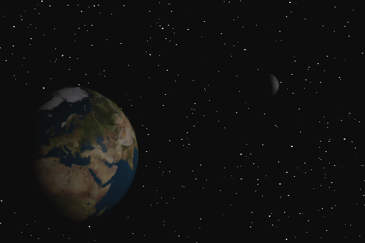Votre défi : reproduire cette image !
Ouh là, je suis capable de réaliser cela tout seul ?! Les textures de planètes, je les trouve où ? Et les planètes, je les fais comment ?
Pas de panique, je vais quand même vous donner quelques pistes !
Pour la Terre et la Lune, vous pouvez utiliser des UV Sphere (petit rappel : cliquez sur Add > Mesh > UV Sphere) auxquelles vous appliquerez un simple Smooth pour les lisser. Pour les textures de planètes, je vous recommande d'aller récupérer les textures de la Terre et de la Lune sur lele site de référence en ce domaine.
Vous n'avez plus qu'à les enregistrer sur votre ordinateur en cliquant sur la Color Map pour la Terre et la première texture en bas de la page pour la Lune.
Si vous rencontrez un problème, essayez de trouver la solution dans les explications du chapitre avant de courir vers la correction, cela vous ôterait tout le plaisir d'avoir réussi par vous-mêmes !
Enfin, une fois que vous avez (plus ou moins) terminé votre scène, vous pouvez aller lire la correction.
Correction du petit défi
Pour commencer, il faut ajouter deux UV Sphere, en mode objet, qui seront notre Terre et notre Lune (lissées avec le Smooth qui se trouve dans le volet des outils).
Avec la touche S ou les widgets, je redimensionne les deux objets car, si mes souvenirs sont bons, la Terre est quand même un peu plus grande que la Lune (voir figure suivante) !
Redimensionner les UV Sphere
Bon, une fois qu'on a deux sphères placées dans le champ de la caméra, on peut s'attaquer aux matériaux et textures. Plutôt qu'une longue énumération de toutes les opérations à faire, je vous ai concocté un schéma résumant les matériaux et textures à créer et régler (voir figure suivante).
Les matériaux et textures des UV Sphere
On en profite pour retoucher un peu les shaders, en baissant notamment les spécularités pour éviter d'avoir de grosses taches de lumière sur les surfaces au rendu (voir figure suivante).
Réglage des shaders
Ensuite, on règle un fond noir avec des étoiles grâce à l'onglet Stars, comme illustré à la figure suivante.
Paramétrage de Stars
Pour finir, vous pouvez déplacer votre lampe dans la vue 3D afin d'obtenir l'éclairage qui vous plaît le plus.
Et voilà, ce n'était pas si compliqué finalement !
En résumé
Les textures sont des motifs que l'on utilise pour échapper à la couleur unie des matériaux. Elles peuvent être de plusieurs sortes : soit générées par des algorithmes directement dans Blender (elles sont alors appelées textures procédurales), soit importées par l’utilisateur (textures images).
Pour appliquer une texture à un objet, il faut au préalable que ce dernier dispose d'un matériau. Sans matériau, pas de texture !
L'influence des textures ne se limite pas à la couleur du matériau. Elles peuvent également modifier son relief ou sa spécularité.
Fatigué(e) de lire sur un écran ? Découvrez ce cours en livre.
Voici un chapitre consacré aux meshes (« maillages » en français). Ce sont les polygones 3D éditables de Blender, composés de points, d'arêtes et de faces. Eh oui, on révise votre géométrie en passant !
Jusqu'à présent, nous avons utilisé essentiellement le cube et Suzanne, mais il y en a bien d'autres ! Allons de ce pas les découvrir.
À chaque fois que vous ajoutez un mesh dans votre scène (Add > Mesh >…), Blender vous proposera différents réglages sur leur forme. Par exemple, pour un cercle, on peut choisir le nombre de points qui le composent.
Ces informations à régler se trouvent en bas dans le volet des Mesh Tools (voir figure suivante).
Les paramètres du mesh lors de son ajout
Allez, c'est parti pour un passage en revue des troupes !
Plane
Un plan contient quatre points, quatre arêtes, une face (voir figure suivante). Il peut être utilisé comme sol ou mur, ainsi que nous l'avons vu dans le TP.
Pas de réglages particuliers possibles, simplement sa localisation, son angle de rotation et sa taille initiale que l'on peut changer.
Un plan contient quatre points, quatre arêtes, une face
Cube
Le cube est un mesh très utilisé comme base pour modéliser des formes complexes (voir figure suivante).
Le cube
Circle
Comme l'illustre la figure suivante, il est possible choisir le nombre de points (jusqu'à 500 !) qui composent le cercle. La case à cocher Fill permet de le remplir.
Le cercle
UV Sphere
Cette sphère est composée de Segments et de Rings, comme la Terre avec les méridiens et les parallèles (voir figure suivante). Plus leur nombre est élevé, plus votre mesh semblera lisse.
L'UV Sphere
Icosphere
Quelle différence avec l'UV Sphere ? Toutes ses faces sont triangulaires, ce qui rend son maillage plus homogène que l'UV Sphere (voir figure suivante). En augmentant Subdivisons, la surface sera plus douce.
L'Icosphere
Cylinder
Le cylindre est un cercle extrudé puis fermé - on peut le laisser ouvert en décochant Cap Ends. On peut également choisir le nombre de sommets qui composeront les cercles, ainsi que son diamètre avec Radius (voir figure suivante).
Le cylindre
Cone
Je me sers assez rarement du cône (voir figure suivante). Son utilité est plutôt limitée, à part peut-être pour faire des piques !
Le cône
Grid
La grille est un plan auquel on aurait fait subir des Loop Cut. Assez pratique pour commencer un terrain (voir figure suivante).
La grille
Monkey
Inutile de vous présenter Suzanne, je crois que vous la connaissez bien maintenant ! Cette tête de singe est idéale pour faire des tests, notamment sur les matériaux (voir figure suivante).
Le singe
Torus
Major Radius et Minor Radius permettent de contrôler les diamètres interne et externe du tore. Je dirais que le tore peut être très pratique si vous voulez modéliser une boîte plein de donuts (voir figure suivante) !
Le Torus
Fatigué(e) de lire sur un écran ? Découvrez ce cours en livre.
Tout mesh possède une origine. Elle est représentée par un petit cercle brun, comme l'illustre la figure suivante.
Le petit cercle marron, entouré de rouge, représente l'origine du mesh
En mode objet, lorsque vous effectuez une rotation ou une mise à l'échelle de votre mesh (que ce soit avec les widgets ou avec le clavier), ces opérations se feront à partir de ce point.
Pour mieux comprendre où placer l'origine de son mesh, regardez les figures suivante et suivante.
Exemple d'une origine bien placéeExemple d'une origine mal placée
Mais comment se fait-il qu'elle soit mal placée ? À la création du mesh, elle est bien au centre, non ?
Effectivement, mais lorsque que vous travaillez en Edit Mode, l'origine ne bouge pas. Si vous sélectionnez tous vos vertices (touche A) et les déplacez, elle se retrouvera isolée.
Alors, comment peut-on bien la replacer ?
Rendez-vous dans le volet Mesh Tools (touche T dans la vue 3D) et cliquez sur Origin (voir figure suivante).
Replacer l'origine depuis le volet Mesh Tools
Une fois que vous avez cliqué sur Origin, trois options apparaissent :
Geometry to Origin replace votre maillage pour qu'il corresponde à la position de l'origine ;
Origin to Geometry est l'inverse du précédent : c'est l'origine qui va se déplacer pour être bien au centre de votre forme (à mon avis, c'est la solution la plus pratique) ;
Origin to 3D Cursor va déplacer l'origine à la position du curseur 3D.
Après toutes ces explications, j'espère que les origines de vos meshes sont bien placées !
Fatigué(e) de lire sur un écran ? Découvrez ce cours en livre.
Vous avez envie d'écrire un message dans vos scènes ? De les signer sans avoir à le faire avec un logiciel 2D ? L'outil texte est là pour vous ! Cliquez sur Add > Text, comme l'illustre la figure suivante.
Ajouter du texte
Le mode objet vous permet de déplacer le texte, et le mode édition de le taper !
Vous avez peut être remarqué le menu Object Data avec l'icône en forme de lettre F (voir figure suivante).
Les paramètres importants du texte
Voyons un peu à quoi servent tous ces boutons !
D'abord, ceux que j'ai soulignés en rouge :
Offset détermine la grosseur de vos lettres ;
Extrude permet d'ajouter de la profondeur au texte.
Ceux en bleu sont des outils dactylographiques :
Size augmente la taille de votre texte ;
Shear donne la possibilité de mettre en italique ;
Spacing permet de régler l'espacement entre les lettres, mots et lignes.
Pour finir, les boutons encadrés de vert : Left, Center et Right déterminent l'alignement du texte.
Dernière chose sur cet outil : vous avez la possibilité d'importer un fichier de police de texte pour rendre le tout plus original (dans l'onglet Font).
Fatigué(e) de lire sur un écran ? Découvrez ce cours en livre.
Comme nous l'avons vu brièvement dans le chapitre sur les textures, il existe deux façons de lisser les meshes. Voyons un peu plus en détail ces deux fonctions : le Smooth et le SubSurf.
Smooth
Ce bouton se trouve dans le volet des Mesh Tools (voir figure suivante).
Le Smooth
Le Smooth ne change pas la géométrie de votre mesh, il ne déplace ni les points ni les faces. Il donne simplement l'illusion d'un lissage en jouant sur la luminosité de la surface. Cette solution est très économique en ressources pour votre ordinateur, mais ne s'adapte pas à tous les maillages : des formes trop cubiques ou des arêtes franches sont à éviter, elles donneraient de mauvais résultats. Voici aux figures suivante et suivante des exemples de maillages.
Exemple d'un maillage non adaptéExemple d'un maillage adapté
Pour enlever le Smooth de votre mesh, appuyez sur le bouton situé juste en dessous, Flat (voir figure suivante).
Les effets de Smooth et de Flat
Subsurf
Le Subsurf est plus qu'une simple méthode de lissage, c'est aussi une technique de modélisation. Il multiplie le nombre de vertices de votre maillage tout en les lissant.
Créez et sélectionnez un mesh (le cube, par exemple). Ouvrez le menu des Modifiers (c'est le menu en forme de clé plate) et ajoutez à votre mesh le modificateur Subsurf, alias Subdivision Surface (voir figures suivante et suivante).
Choisir Subdivision Surface dans le menu des ModifiersLe modificateur Subsurf
Cela peut être un peu déroutant au début car les vertices ne réagissent pas de la même façon, mais c'est très amusant et cela permet de modéliser avec de belles formes.
Détaillons un peu les boutons de la figure suivante !
la valeur View détermine le nombre de subdivisions que vous verrez dans la vue 3D (évitez de choisir une valeur trop élevée, qui risque de charger votre ordinateur) ;
la valeur Render détermine le nombre de subdivisions au rendu (là, vous pouvez mettre la gomme, mais le temps de rendu sera plus long) ;
et enfin, Apply applique le modificateur au mesh.
La figure suivante propose un exemple de modélisation en Subsurf à partir d'un cube coupé puis extrudé.
Un petit bonhomme modélisé en Subsurf
Pas de panique si le Subsurf vous paraît encore mystérieux, nous aurons tout le temps de le revoir en action dans un futur T.P. !
En résumé
Les maillages (« Meshes » en anglais) sont les objets de base pour modéliser des formes. Ce sont des figures géométriques en trois dimensions, constituées de points, d’arêtes et de faces.
Lorsque vous ajoutez un maillage dans la scène, vous pouvez le paramétrer dans le volet des Mesh Tools, à gauche de la vue 3D.
Pour éviter d'avoir des formes trop cubiques irréalistes, lissez vos maillages ! Le Modifier SubSurf va arrondir les courbes en multipliant les points des objets, et le bouton Smooth termine le travail en rendant vos faces aussi lisses que possible.
Comme dans tout bon logiciel de graphisme, il est également possible d'ajouter du texte à vos scènes. De nombreux réglages sont à votre disposition dans le menu Object Data, comme l'utilisation de polices externes, la mise en relief des lettres, etc.
Fatigué(e) de lire sur un écran ? Découvrez ce cours en livre.
Vous connaissez pour l'instant deux outils de modélisation : l'Extrude et le Loop cut. Ils sont très pratiques, mais ne suffisent pas pour tout faire, évidemment.
Dans ce chapitre, nous allons nous plonger plus avant dans l'univers de la modélisation, où se côtoient des outils aussi utiles que farfelus, tous à votre service pour créer de belles formes ! Ouvrez bien grand vos yeux, car vous allez apprendre plein de choses !
Entrons dans le vif du sujet ! Dans cette section, vous allez découvrir les outils de modélisation qui vous permettront de mener à bien une modélisation complexe.
Nous avons déjà utilisé certains d'entre eux avec le volet Mesh Tools (voir figure suivante), mais vous verrez qu'il nous en reste bien d'autres à découvrir !
Le volet Mesh Tools
Je vous montre ici ceux qui vous seront les plus utiles dans vos projets. Nous allons les tester sur le cube !
Subdivide
Nous commençons par le Subdivide : il permet simplement de couper les arêtes en leur milieu. Une image est toujours plus parlante qu'un discours : reportez-vous aux figures suivante et suivante pour observer l'effet de la subdivision.
Avant subdivisionAprès subdivision
Lorsque vous utilisez Subdivide, des paramètres s'affichent en bas du panneau des Mesh Tools :
Number of cuts : le nombre de coupes des arêtes. Attention à ne pas surcharger votre maillage inutilement.
Smoothness : indique le degré de rondeur qui sera appliqué à votre mesh.
Fractal : donne un caractère aléatoire au placement des points.
Vous pouvez observer l'effet de ces réglages aux figures suivante et suivante.
Le cube est quasiment devenu une sphèreLe cube après augmentation de Fractal
Pratique pour rajouter des points à votre maillage !
Avec ce Subdivide Fractal, vous pourrez générer rapidement des formes comme des cailloux (en partant d'un cube) ou des paysages montagneux (en partant d'un plan).
Remove Doubles
On peut le traduire par « enlever les doublons ». Cette fonction vous permettra de fusionner tous les points qui se superposent (cela arrive parfois lors des extrusions), allégeant ainsi le maillage de sommets inutiles qui pourraient poser problème lors du lissage du mesh.
Donc, pour nettoyer votre maillage, le mode d'emploi est simple : sélectionnez tous les points avec la touche A puis cliquez sur Remove Doubles dans le volet des Mesh Tools (voir figure suivante).
Cliquez sur Remove Doubles
Merge Threshold définit la limite d'action de la fusion ; la valeur par défaut est très bien comme cela (voir figure suivante).
Définir le Merge Threshold
Et voilà ! Blender vous indique dans la barre des menus le nombre de points/doublons qui ont été supprimés, comme vous pouvez le voir sur la figure suivante.
Ici, cinq points ont été supprimés
Cette fonction vous sera donc bien utile pour rattraper des petites erreurs de modélisation !
Smooth Vertex
Le Smooth Vertex est encore une nouvelle méthode de lissage mais qui, cette fois, agit directement sur la géométrie du mesh. Un paramètre permet de régler le nombre de répétitions de l'outil. Les angles que forment vos arêtes seront légèrement adoucis à chaque fois que vous l'utiliserez.
Vous pouvez voir sur les figures suivante et suivante un exemple avec la modélisation basique d'un immeuble…
Notre immeuble avant le Smooth Vertex……se transforme en immeuble de guimauve !
Supprimer ou créer des faces
Pour créer des faces dans Blender, il suffit de relier des points entre eux : si, par exemple, vous sélectionnez deux points et appuyez sur F, ceux-ci seront automatiquement reliés par une arête. Si vous en sélectionnez trois ou quatre, ce sera une face qui sera créée (voir figures suivante et suivante).
Un trou dans notre maillage……bouché grâce à la touche F
Et comment faire si je veux boucher un trou de plus de quatre sommets ?
Même chose ! Sélectionnez tous les sommets et appuyez sur F. Dans ce cas (trou avec plus de 4 sommets), Blender va automatiquement lier des sommets pour créer une surface ; malheureusement, cette méthode produit souvent des faces un peu dans tous les sens, qui donnent des résultats affreux lorsqu'on utilise des méthodes de lissage Smooth ou SubSurf.
Fatigué(e) de lire sur un écran ? Découvrez ce cours en livre.
Dans cette section, nous allons voir l'outil Spin (« tourner » en français). Cette fonction permet de répéter des points de façon circulaire, pour créer par exemple un pneu, un vase, une assiette, une horloge, un bâtiment en forme de cercle…
Quoi de mieux qu'un mini-TP pour illustrer cette fonction ? Oui, je sais, vous aimez les TP ! Pour enrichir notre scène avec la table et la chaise, je vous propose de modéliser un verre. Vous allez voir que c'est très facile avec Spin.
Le principe de cet outil est simple : on dessine le profil de l'objet et on le fait ensuite tourner par rapport à un axe (comme lorsqu'on fait de la poterie).
On va donc commencer par modéliser le profil du verre. Ouvrez une nouvelle scène, supprimez le cube. Mettez-vous en vue de dessus (touche 7) et ajoutez un plan.
En mode édition, sélectionnez trois points de ce plan et supprimez-les. Il vous reste maintenant un maillage avec un malheureux point. Déplacez-le pour qu'il soit à l'intersection des axes x et z, comme sur la figure suivante.
On commence avec un maillage constitué d'un seul point
On va dessiner le profil en vue de face (touche 1). Grâce au raccourci Ctrl + clic gauche, vous pouvez ajouter des points qui seront liés au précédent (une sorte d'extrusion). Veillez à ne dessiner que sur une partie de l'axe des z, de sorte qu'il n'y ait qu'une moitié du verre, comme indiqué aux figures suivante et suivante.
Ne dessinez que la moitié du verre ! (1/2)Ne dessinez que la moitié du verre ! (2/2)Le premier et le dernier point doivent être sur l'axe des z
C'est après avoir créé le profil que Spin entre vraiment en jeu. Comme je vous l'ai dit plus haut, il va falloir définir où se trouve l'axe autour duquel notre maillage va tourner. Deux informations déterminent cet axe :
la position du curseur 3D ;
la vue dans laquelle vous vous trouvez.
Si vous n'avez pas déplacé le curseur, il doit toujours se trouver à l'origine des axes. Si ce n'est pas le cas, Shift + C vous sera utile.
Mettons-nous en vue de dessus et, dans le volet des Mesh Tools, activons le Spin après avoir sélectionné tous les points avec la touche A (voir figure suivante).
Ça y est, le maillage a tourné !
Vous pouvez régler en instantané les différents paramètres de l'outil, le résultat changera automatiquement dans la vue 3D.
Degrees définit la rotation en degrés (ici, on fixe cette valeur à 360, on ne veut pas d'un quart de verre !).
Steps est le nombre d'étapes de votre profil. Une valeur trop élevée surchargera votre mesh, une valeur trop faible rendrait la forme de votre verre trop anguleuse. Fixons la valeur à 12, qui est un nombre adapté à notre petit verre.
Vous pouvez admirer le résultat à la figure suivante !
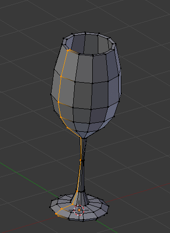Notre verre est terminé !
Je vous l'avais dit, Spin c'est magique !
Un petit réglage final : lorsque l'on utilise Spin à 360 degrés, les points d'arrivée et ceux de départ se chevauchent. Il va donc falloir utiliser Remove Doubles.
Vous pouvez aussi utiliser Subsurf et Smooth pour lisser votre verre. Voici, à la figure suivante, le mien après lissage.
Le verre après lissage
L'option Dupli
Vous avez sans doute remarqué l'option Dupli dans les réglages de Spin. Cette fonction permet de ne pas lier les étapes de duplication entre elles.
Voici à la figure suivante mon verre avec un Spin Dupli.
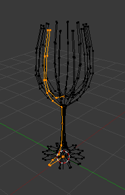Le Spin Dupli sur notre verre
Pas grand intérêt, me direz-vous ?
Laissez-moi vous montrer une de mes petites créations où le Spin en mode Dupli était l'outil clé : reportez-vous aux figures suivante et suivante.
Je modélise seulement une arcade…… et ensuite, je la duplique circulairement pour obtenir le fameux Colisée de Rome.
Et pour admirer le rendu, c'est à la figure suivante !
Voici le rendu du Colisée !
En résumé
La modélisation est l'étape de création des formes virtuelles, comme lorsque le sculpteur travaille sa matière avec ses mains.
Pour nous aider dans cette tâche, Blender nous propose une pléthore d'outils (en plus de l'extrusion et du Loop Cut que nous avez déjà vus) qui sont situés dans le volet Mesh Tools.
L'outil Spin permet de créer des objets circulaires. Entraînez-vous à l'utiliser pour modéliser des assiettes, vases, coupes, pièces de jeu…
Un trou dans votre maillage ? La touche F permet de recréer des faces à partir de trois ou quatre points sélectionnés.
Fatigué(e) de lire sur un écran ? Découvrez ce cours en livre.
L'éclairage d'une scène en 3D est sans nul doute une opération délicate qui demande pas mal de tests et d'expérience. Les débutants se contentent souvent de la lampe de base, alors qu'il y a quantité de méthodes permettant d'obtenir de bien meilleurs résultats… Nous allons dans ce chapitre passer en revue tous les types de lampes et les décortiquer pour voir lequel convient le mieux à votre projet.
Il existe dans Blender cinq types de lampes : Point, Area, Spot, Sun et Hemi. Chacune a ses propres caractéristiques, ses propres applications, ses propres paramètres.
Cependant, il y a quand même des réglages communs à tous ces types de lampes. Voyons lesquels.
Sélectionnez une lampe de votre scène (en mode objet) et rendez-vous dans le menu Object Data (voir figure suivante).
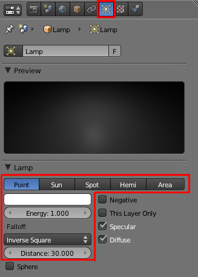Choisir sa lampe dans le menu Object Data
En haut de l'onglet Lamp, on a le type de lampe sélectionné (en l'occurrence Point).
La palette de couleurs permet de modifier la teinte de la lumière émise. Par exemple, une lampe rouge mettra une ambiance de feu dans vos scènes !
Energy définit l'intensité de la lumière.
Distance définit la distance à laquelle l'intensité de la lumière se trouve réduite de moitié. Vous l'avez compris, l'intensité de la lumière diminue parce qu'on s'éloigne de l'objet éclairé.
Un peu plus bas dans le menu se trouve l'onglet Shadow, qui est destiné au réglage des ombres que la lampe va causer (voir figure suivante).
L'onglet Shadow permet de paramétrer les ombres
Soft Size est le paramètre qui contrôle le flou des ombres : plus il est élevé, plus les bordures des ombres seront diffuses.
Samples définit la qualité des ombres. Une valeur élevée augmente le temps de calcul. Une valeur de 5 ou 6 est un bon compromis.
Threshold… pas très utile pour nous !
Ajouter une lampe
Pour créer une nouvelle lampe, rien de plus simple : faites Add > Lamp et choisissez le type de lampe que vous voulez essayer (voir figure suivante).
Ajouter une lampe
Fatigué(e) de lire sur un écran ? Découvrez ce cours en livre.
Point (voir figure suivante) est la lampe par défaut, celle que l'on a dans le fichier d'ouverture de Blender. C'est une source d'éclairage ponctuelle, c'est-à-dire qu'elle émet de la lumière à partir d'un point (d'où son nom).
Les flèches rouges schématisent les rayons.
Parlons maintenant un peu de l'onglet Shadow ! Par défaut, le bouton Ray Shadow est activé. Il permet simplement à votre lampe de générer des ombres (en utilisant la méthode du Ray tracing).
Si le bouton Only Shadow est enfoncé, votre lampe n'émettra aucune lumière mais projettera des ombres dans votre scène.
Fatigué(e) de lire sur un écran ? Découvrez ce cours en livre.
Sun (« soleil » en français) est, comme son nom l'indique, idéal pour simuler un extérieur ensoleillé. Par contre, il vous faudra sans doute baisser un peu le paramètre Energy car, sans cela, ce soleil cogne assez dur !
Autre particularité pour cette lampe : Sun envoie des rayons parallèles dans toute la scène, donc son emplacement importe peu (voir figure suivante).
Diffusion des rayons avec Sun
Fatigué(e) de lire sur un écran ? Découvrez ce cours en livre.
Le Spot est une lampe assez spéciale et très amusante.
C'est une source ponctuelle qui, contrairement à Lamp, n'émet pas des rayons dans toutes les directions mais concentrés dans une forme conique, comme les projecteurs de théâtre ou de concert (voir figure suivante).
L'éclairage Spot
On peut régler l'angle d'ouverture du Spot en jouant avec la valeur Size. Blend détermine la douceur de la transition entre la zone éclairée par le Spot et la zone non éclairée (voir figure suivante).
Paramétrer Size et Blend
Le Spot est différent des autres lampes pour une bonne raison : il est le seul à posséder le pouvoir de la lumière volumétrique !
La lumière volumétrique… keskecékeça ?
Une image est souvent plus parlante qu'un grand discours, je vous invite donc à observer la figure suivante.
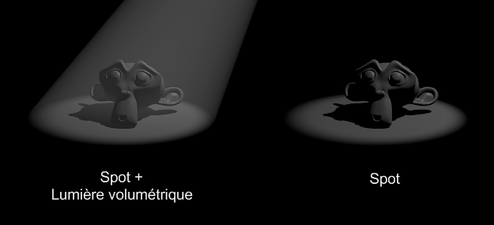Suzanne sous les projecteurs !
Pour l'activer, il faut appuyer sur le bouton Halo. La valeur de Intensity va régler… eh oui, son intensité !
Vous pouvez même avoir un aperçu de l'effet dans la vue 3D avec l'option Show Cone (voir figure suivante).
Show Cone vous montre un aperçu de l'effet
On peut utiliser la lumière volumétrique pour simuler le soleil entrant dans une pièce, mettre en évidence quelque chose, simuler les phares d'une voiture… Je vous fais confiance pour utiliser au mieux ce brillant effet !
Fatigué(e) de lire sur un écran ? Découvrez ce cours en livre.
Area, à la différence des autres types de lampes, émet de la lumière à partir d'une surface et non pas d'un point (voir figure suivante). Vous pourrez ainsi avoir des ombres douces dans vos scènes sans passer par les Soft Shadows.
L'éclairage Area
Vous pouvez agrandir la surface d'émission avec le paramètre Size.
Vous avez sans doute remarqué que l'onglet Shadow and Spot a changé par rapport au type Lamp. Les nouveaux boutons vous permettent d'ajuster les ombres douces.
Il faut en premier lieu choisir le type d'échantillonnage Constant Jittered au lieu de Adaptive QMC. Tout d'abord, le nombre de Samples (de 1 à 16) permet d'améliorer la qualité et l'effet des ombres douces, mais en allongeant significativement le temps de rendu (comme pour les Soft Shadows).
Pour avoir une ombre douce de bonne qualité sans pour autant devoir augmenter le nombre de Samples, on peut tricher en sur-échantillonant les ombres grâce aux boutons Dither et Noise.
Quant au bouton Umba, il sert à augmenter le contraste de l'ombre douce.
Encore une fois, je vous conseille de faire quelques rendus pour tester toutes ces fonctionnalités : rien ne vaut la pratique !
Et si vous voulez admirer un rendu obtenu grâce à l'éclairage d'une Area, allez jeter un coup d'œil à la figure suivante !
Suzane sous Area, avec Samples à 16
Fatigué(e) de lire sur un écran ? Découvrez ce cours en livre.
L'Hemi projette un dôme de lumière sur toute votre scène, donnant un éclairage assez diffus et doux (voir figure suivante). Il a la même particularité que Sun: peu importe son emplacement, seule son orientation sera prise en compte.
L'éclairage Hemi projette une lumière douce et diffuse
Comme vous pouvez le constater, l'onglet Shadow and Spot est vide de tout bouton. En effet, ce type de lampe est incapable de générer la moindre ombre… Utilisé en association avec une lampe ne projetant que des ombres (Only Shadows activé), le résultat peut être très convaincant !
Fatigué(e) de lire sur un écran ? Découvrez ce cours en livre.
Cette fonction (communément appelée « AO ») permet d'avoir une simulation d'éclairage réaliste en très peu de réglages (voire même aucun !). Elle donne à vos scènes un véritable éclaircissement qu'il est difficile d'obtenir avec les lampes…
Encore une petite image pour illustrer ? Je vous renvoie à la figure suivante !
L'effet de l'Ambient Occlusion
Pour activer l'AO, allez dans le menu World et activez simplement l'onglet Ambient Occlusion, comme c'est indiqué à la figure suivante.
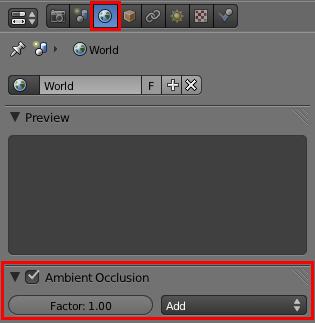Activer l'Ambient Occlusion
Si vous souhaitez atténuer un peu l'effet de l'AO sur votre scène, vous pouvez diminuer Factor. Généralement, je laisse sa valeur entre 0.3 et 0.8 en fonction de l'intensité lumineuse que je veux donner à mon image.
Enfin, pour nous compliquer un peu plus la tâche, sachez que les développeurs ont créé deux types d'AO, qui se trouvent dans l'onglet Gather : Raytrace et Approximate. Nous allons tout de suite voir de quoi il s'agit !
AO Raytrace
Raytrace est l'option activée par défaut. Elle donne de bons résultats mais a tendance à générer des grains au rendu lorsque la valeur de Samples est relativement basse. À noter également -- et c'est important -- que son temps de calcul est long, voire très long !
AO Approximate
L'AO Approximate est, quant à elle, bien plus rapide que sa consœur. Elle possède également un autre avantage : elle ne produit jamais de grain susceptible de gâcher un peu votre rendu. Cocher le bouton Pixel Cache accélérera encore plus le rendu, ne vous en privez pas (voir figure suivante).
Le bouton Pixel Cache accélère votre rendu
En revanche, elle produit parfois des taches noires assez étranges lorsque deux objets sont côte à côte.
De manière générale, il vaut mieux choisir cette méthode Approximate, surtout si vous n'avez pas un PC extrêmement puissant !
Pour conclure, je vous ai fait un petit comparatif des différents éclairages aux figures suivante, suivante et suivante.
Éclairage SunÉclairage Sun et Ambient Occlusion, option ApproximateÉclairage Sun et Ambient Occlusion, option Raytrace
En résumé
Plusieurs types de sources lumineuses sont proposés dans Blender : le Point, l'Hemi, l'Area, le Spot et le Sun.
Au contraire des autres lampes, le Sun est un source de lumière directionnelle. Ses rayons seront parallèles dans toute la scène, le rendant tout à fait approprié pour l'éclairage d'une scène d'extérieur.
L'Ambient Occlusion (souvent abrégée en AO) va améliorer considérablement l'aspect d'un éclairage en simulant une illumination globale de la scène. Deux méthodes peuvent être choisies, Raytrace (précise mais coûteuse en ressources) et Approximate (économe en temps de rendu, mais susceptible de faire apparaître des taches noires dans les coins).
Fatigué(e) de lire sur un écran ? Découvrez ce cours en livre.
Chose promise, chose due, nous allons terminer cette partie par la modélisation d'un personnage !
Pour l'instant vous n'avez travaillé que sur des formes relativement cubiques (notre fameuse table et ses chaises) ; il est temps d'attaquer des modélisations un peu plus poussées !
Nous allons donc faire la connaissace de… Scotty, le petit personnage que nous allons modéliser !
Contrairement au TP de la table et de la chaise, où nous y sommes allés franco, nous allons cette fois-ci préparer un peu plus le terrain avant d'attaquer la modélisation.
Préparer le terrain ?
Oui ! Quand on s'attaque à la modélisation d'une forme un peu compliquée, il est fortement recommandé de s'imprégner de cette forme et d'en disséquer les différentes parties. Cette phase d'observation va ensuite nous guider dans la création du maillage.
En découvrant Scotty, vous remarquerez que je me suis fortement inspiré des petits mannequins de bois qu'utilisent les dessinateurs pour avoir un guide des proportions humaines (voir figure suivante).
Le petit mannequin de bois
Comme vous pouvez le voir, le corps du mannequin est constitué d'un tronc, de membres supérieurs et inférieurs, ainsi que d'une tête (jusque là, rien d'anormal !). Par contre, il est intéressant de noter que les articulations liant ces membres entre eux sont de simples sphères. Nous allons garder en tête cette information car elle nous facilitera grandement la tâche lorsque nous attaquerons l'animation du personnage.
Une fois que l'on a bien en tête les différentes parties du personnage, on va insérer dans Blender des blueprints. Ce sont des images de référence, des gabarits d'objets. Les blueprints sont généralement des photos ou dessins techniques pris de face, de côté, de dessus… que l'on va afficher dans la vue 3D et qui nous serviront de guides pour modéliser les formes de l'objet sans nous tromper dans les proportions ou les formes. En gros, on place les points du maillage en suivant l'image de référence, comme un papier calque lors d'un dessin.
Voici à la figure suivante les blueprints que je vous ai concoctés.
Les blueprints de notre personnage
Plutôt pratique, hein ?
Le site the-blueprints.com répertorie des dizaines de milliers de blueprints (en particulier : voitures, avions, personnages, vaisseaux spatiaux…). Vous pouvez aussi directement télécharger le blueprint de Scotty de face ainsi que celui de profil.
Alors, comment on affiche ces blueprints dans Blender ?
Rien de plus simple ! Ouvez le volet des propriétés dans la vue 3D (touche N) et rendez-vous dans l'onglet Background images (voir figure suivante).
L'onglet Background images
Là, vous pouvez charger un nouveau blueprint et indiquer dans quelle vue il sera présent (Front, Back, etc.).
Afin de vous simplifier la tâche, reportez-vous à la figure suivante où j'ai indiqué les réglages que vous devez appliquer à vos blueprints pour qu'ils soient bien positionnés.
Bien positionner ses blueprints
Et souvenez-vous : je vous donne les grandes lignes, libre à vous d'ajouter des détails à votre personnage. N'essayez pas forcément de suivre à la lettre les formes que je crée !
Fatigué(e) de lire sur un écran ? Découvrez ce cours en livre.
Ah, c'est souvent la grande question d'un débutant lorsqu'il s'attaque à un nouvel objet : par quel bout commencer ?
En réalité, il n'y a pas de réponse toute faite. Pour un même personnage, certains artistes vont commencer par le buste, d'autres par la ceinture, certains même par la tête…
Personnellement, je préfère commencer par le torse car c'est la partie qui fait charnière avec la tête ; puis je passe aux avant-bras, et à l'entrejambe.
Ajoutons donc un cube et plaçons-le au niveau du buste de notre blueprint, comme indiqué à la figure suivante.
Placer un cube sur le blueprint
Maintenant, ouvrez bien vos yeux car je vais vous donner une astuce de sioux qui nous fera gagner énormément de temps dans vos modélisations !
Comme notre personnage est symétrique, il serait dommage d'avoir à modéliser systématiquement tout le côté gauche et tout le côté droit… Heureusement, Blender a pensé à nous, pauvres modélisateurs fainéants, et nous propose le Modifier Mirror. Comme son nom l'indique si bien, ce Modifier va appliquer un effet miroir à notre maillage, une symétrie qui va dupliquer ce que nous faisons d'un côté pour le projeter de l'autre côté. Ainsi, on modélise seulement le côté droit sans s'embarrasser du gauche, Blender le fait pour nous !
Coupons donc le cube en son centre avec le Loop Cut que l'on laisse bien au milieu. Avec X, supprimez les points du côté gauche, en vue de face, comme à la figure suivante.
Supprimez les points du côté gauche
Il est temps d'activer notre Mirror, dans le menu des Modifiers (voir figure suivante).
Ajouter un Modifier Mirror
En plus de Merge (qui fusionne les vertices au centre de l'objet), activez le Clipping qui force les points à rester du côté droit (voir figure suivante).
Le Clipping va forcer les points à rester à droite
Nous voilà parés pour débuter le personnage. Mais nous ne voulons pas d'un bonhomme tout cubique !
Activez donc le Subsurf, puis le Smooth (voir figure suivante).
Activer le Subsurf
Bien, une fois que notre base est prête, vous pouvez vous mettre en vue de face orthonormée (en affichage Wire). Subdivisez une fois le cube. Maintenant, sélectionnez les points et déplacez-les pour qu'ils suivent le modèle du blueprint, comme indiqué à la figure suivante.
Extrudez le cube subdivisé vers le bas pour construire le buste
S'il vous manque de la précision sur la hauteur du buste, effectuez un Loop Cut horizontal ou extrudez une boucle d'arêtes vers le bas.
Une fois que votre maillage vous paraît correctement positionné pour la vue de face, passez en vue de profil droit et faites de même (voir figure suivante).
Ajustez les points en vue de côté
Bien. Maintenant, prenez le temps de tourner autour de votre forme dans la vue 3D et de repérer les courbures qui ne seraient pas encore tout à fait bien positionnées.
Après quelques minutes de retouches, vous devriez avoir terminé la partie supérieure du buste.
Si vous avez compris le principe de ce que l'on vient de faire, alors vous êtes prêts à modéliser quasiment n'importe quoi !
Bien sûr, la forme est ici assez simple et nous disposons de blueprints précis (ce qui n'est pas toujours le cas), mais la manière de procéder est identique à chaque fois :
On ajoute une forme qui sera le départ de l'objet, puis on lui assigne des Modifiers (Subsurf et au besoin Mirror).
On subdivise ou extrude le maillage pour avoir assez de points pour contrôler la forme, mais sans le surcharger !
On positionne les points en vue de face puis en vue de profil, et enfin on corrige certaines courbes en tournant autour de l'objet (toujours en s’appuyant sur des blueprints ou des photos de référence).
On répète les deux dernières étapes jusqu'à atteindre une forme satisfaisante.
Cette petite digression passée, reprenons notre TP !
Continuons vers le bas et ajoutons une UV Sphere qui fera l'articulation entre les deux parties du tronc (voir figure suivante).
Ajouter une spère pour l'articulation
Au besoin, reprenez le bas du buste pour qu'il épouse la forme de la sphère ; en particulier, rentrez certains points vers l'intérieur.
Pour la partie basse du buste, vous pouvez ajouter un cube et le couper en deux comme nous l'avons fait au début, ou bien reprendre comme base le haut du torse en le dupliquant (Shift + D).
On continue à descendre, en ajoutant cette fois deux petites sphères pour faire le lien avec les cuisses de Scotty (voir figure suivante).
Ajouter des sphères pour lier les cuisses au buste
Les cuisses nous donneront moins de mal que le buste : un cylindre à six faces, quelques Loop Cuts et positionnements de vertices, et le tour est joué (voir figure suivante) !
Utiliser le cylindre pour modéliser les cuisses
Pour lier les cuisses aux mollets, utilisez à nouveau une sphère. Pour le mollet, dupliquez la cuisse et affinez-la en largeur (si vous n'êtes pas très sûrs des proportions, regardez votre corps !)
Enfin, on arrive à la cheville : placez une petite sphère comme indiqué à la figure suivante. Vous avez l'habitude maintenant !
Pour lier les chevilles, ajoutez à nouveau une sphère
On finit avec le pied, exercice un peu plus corsé que les jambes. Je vous conseille de le former avec un cube subdivisé (comme le torse) que vous extruderez une fois vers l'avant. Commencez par ajuster les points en vue de profil et finissez par la vue de face. Toutes ces étapes sont illustrées aux figures suivante, suivante et suivante.
Un cube subdivisé pour partir du bon piedQuelques extrusions vers la gauche et le tour est joué !Notre pied modélisé
Bon, regardons un peu où en est notre modélisation… (voir figure suivante).
Cela commence à avoir de l'allure, vous ne trouvez pas ?
Et je vous l'annonce, le plus dur est fait. Nous allons continuer avec les bras (même procédé que les jambes) et nous finirons avec la tête : je vous réserve le meilleur pour la fin.
Revenons sur le haut du buste : essayez de creuser un peu au niveau des épaules, comme illustré à la figure suivante.
Creusez le buste au niveau des épaules
Placez ensuite une nouvelle sphère pour l'épaule (voir figure suivante).
Utilisez une sphère pour modéliser l'épaule
Pour l'avant-bras, vous pouvez partir d'un cylindre à six faces, comme pour les jambes. Et pour rendre les extrémités un peu moins molles (la faute au Subsurf), faites un Loop Cut de chaque côté (voir figures suivante et suivante).
Loop Cut sur le brasLoop Cut sur l'avant-bras
Pour la main, je vous laisse carte blanche : si vous voulez modéliser sur votre personnage des mains carrées ou à six doigts, libre à vous !
Par commodité et pour garder un design cohérent, je me suis contenté de lui faire des mains aplaties, comme vous pouvez le voir à la figure suivante.
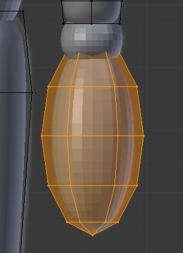Modéliser la main
Notre corps est officiellement terminé !
Oh, attendez, on n'oublie pas quelque chose ? Ah oui, la tête !
Nous allons tout d'abord désactiver temporairement le modificateur Mirror, ce sera plus simple.
Ajoutez une UV Sphere, et supprimez tous ses point du bas, comme indiqué aux figures suivante et suivante.
L'UV Sphere comme base pour modéliser la têteSupprimer la moitié du bas de la sphère
Nous avons ainsi le haut du crâne, que nous allons maintenant allonger avec une extrusion. Rétrécissez ensuite légèrement la base du cou pour lui donner une forme un peu conique (voir figure suivante).
Rétrécir la base du cou pour obtenir une forme conique
Pour finir, refaites une extrusion vers l'intérieur (comme indiqué à la figure suivante) pour vous assurer que l'on ne remarque pas que sa tête est vide !
Extrudez vers l'intérieur
Vous n'avez plus qu'à ajouter une dernière sphère pour le cou. Rappelez-vous qu'on va maintenant utiliser le ModifierMirror, supprimez donc tous les points à gauche.
Pour le doter de beaux yeux, il existe une technique assez simple : ajoutez une sphère blanche au niveau du visage, puis dupliquez, avancez et rétrécissez celle-ci légèrement pour former la pupille, comme illustré aux figures suivante et suivante.
Ajoutez une sphère blanche sur le visageFormez la pupille
Ouf ! À tous ceux qui ont réussi ce TP sans trop s'arracher les cheveux, un grand bravo !
Et encore, je me répète (mais c'est pour votre bien), ne faites pas tout à la lettre comme moi. Peu importe que votre torse ne soit pas parfait, ou que certaines articulations ne soient pas calées. Ce qui compte, c'est d'avoir votre personnage, même après moult essais et recommencements. La perfection viendra avec la pratique !
Fatigué(e) de lire sur un écran ? Découvrez ce cours en livre.
Après tant d'efforts passés à modéliser votre personnage, il serait dommage de ne pas soigner son style !
Prenez donc un peu de temps pour régler les matériaux du corps et des sphères qui servent d’articulations.
Voici aux figures suivante, suivante et suivante quelques exemples de mises en scène de Scotty.
Hello !Mais qu'est-ce que c'est ?Scotty découvre les livres Blender…
Pour lui donner une pose, il vous faudra déplacer et tourner un à un les membres du corps. J'en conviens, ce n'est pas très pratique ! Dans la prochaine partie de ce cours, nous verrons un moyen d'ajouter un squelette pour contrôler facilement notre personnage.
Vous voilà familiarisés avec les outils fondamentaux de Blender : modélisation, lissage, matériau, texture, éclairage. De quoi créer de petites scènes d'un niveau correct !
Cette partie est sans doute la plus compliquée, mais avec tout ce que vous avez appris on va pouvoir passer à une autre dimension : l'animation.
Fatigué(e) de lire sur un écran ? Découvrez ce cours en livre.
Avant de vous lancer corps et âme dans l'animation, il faut d'abord connaître les quelques principes fondamentaux de ce domaine si amusant de la 3D. Vous découvrirez notamment comment mesurer le temps (oui oui !) ou choisir le bon format de sortie pour votre vidéo.
Vous verrez également qu'une animation peut se construire de différentes manières, en fonction de ce que vous voulez faire (déplacement d'un objet, animation d'un personnage, eau qui coule…).
Ce chapitre sera quelque peu théorique (ce sera le seul de cette partie, promis !), mais il est indispensable pour comprendre le fonctionnement d'une animation sous Blender, prêtez-y donc une attention particulière.
Autant calmer tout de suite les ardeurs de certains : ce n'est pas au bout de cette partie que vous pourrez animer une bataille entre deux armées comme dans Le Seigneur des Anneaux.
Je sais, vous êtes déçus, mais je préfère vous prévenir tout de suite ! L'animation, cela demande du temps, des connaissances et de l'observation. Si vous voulez, par exemple, animer le déplacement d'un personnage de façon réaliste, il faut d'abord que vous sachiez exactement comment se déplace un être humain. Cela peut paraître stupide, mais croyez-moi, c'est la base (et ce n'est pas aussi facile qu'on le croit).
Bon, fini les discours, comment est-ce qu'on anime ?
Sachez tout d'abord qu'il n'y a pas qu'une seule méthode pour animer. En fait, il y en a à foison… Tout dépend de ce que vous voulez faire : animer un animal, simuler une visite guidée dans un immeuble, créer une animation réaliste de fluides, faire du morphing… À chaque projet sa technique.
Voici les différentes méthodes d'animation que je vous présenterai tout au long de cette partie :
IKey / IPO curves : ce sont les clés de voûte de tout le système d'animation de Blender. Nous les verrons en détail dans le prochain chapitre.
Armature : elle crée un squelette qui déformera un mesh plus simplement et plus intuitivement que si on devait le faire directement sur le maillage.
NLA Editor : l'éditeur d'actions est une sorte de logiciel de montage intégré à Blender, qui va nous aider à placer et synchroniser les mouvements d'un objet grâce à l'armature de ce même objet.
Soft Body : technique permettant de réaliser des actions physiques (déformations, collisions…) entre différents objets.
On peut faire des choses très amusantes avec : par exemple une balle rebondissante qui dévale une pente et vient s'écraser à vitesse grand V sur un obstacle.
Fluid Simulation : en un mot, c'est l'animation réaliste de liquides, c'est-à-dire qu'on pourra faire interagir des fluides entre eux, dans un espace bien précis. Enfin, on aura tout le temps de voir cela plus tard.
Bref, un bon programme en perspective ! Voici des illustrations de quelques méthodes d'animation. Pour l'IPO curves, je vous renvoie à la figure suivante. La figure suivante présente un exemple d'Armature. Et enfin, vous pouvez observer à la figure suivante un exemple de Fluid Simulation.
Animation avec IPO CurvesCréer une armature avec BlenderAnimation des liquides
Fatigué(e) de lire sur un écran ? Découvrez ce cours en livre.
Petite question pour commencer : l'unité de temps pour vous, c'est quoi ?
Bah, les minutes, les heures et les secondes… Pourquoi ?
Parce que, dans les logiciels d'animation, on parle en frames, et non plus en secondes.
Généralement, lorsque que vous regardez un film, il est de 24 images, ou frames, par seconde. Comme c'est assez élevé, l'œil ne se rend pas compte du décalage et on a l'impression d'un mouvement continu. En fait, c'est juste un défilement très rapide d'images.
On va faire comme dans les films : nos animations seront de 24 frames par seconde. La classe, hein ?
Changer de frame
La frame actuelle est indiquée dans ce que l'on appelle la timeline\footnote (la « barre de temps » en français). Elle se trouve dans une fenêtre à part, en bas de la vue 3D si vous n'avez pas changé l'interface par défaut (voir figure suivante).
La timeline de Blender
Vous pouvez changer de frame en utilisant les flèches de votre clavier ou en tapant une valeur directement dans la timeline, dans le champ encadré de rouge sur la figure suivante.
Changer de frame
Nombre de frames dans une animation
Pour régler le nombres d'images de votre mini-métrage (autrement dit la durée de votre animation), on s'intéresse aux valeurs de Start et End (voir la figure suivante).
Les boutons Start et End
Par défaut, votre animation commence à la frame 1 et se finit à la frame 250. À 24 images par seconde, cela nous fait… un peu plus de 10 secondes d'animation.
Vous pouvez bien entendu modifier ces paramètres en fonction de vos besoins.
Mais si on a 250 frames dans notre animation, on va devoir calculer 250 rendus ?
Eh oui ! C'est le gros inconvénient des animations, le temps total des rendus peut être énorme, ce qui oblige à optimiser la scène (pas trop d'effets, taille du rendu réduite…) pour minimiser le plus possible le temps de calcul. Personnellement, je vous conseille de faire vos rendus pendant la nuit, si votre PC n'est pas à côté de votre lit !
Pour l'anecdote, sachez qu'un ordinateur domestique mettrait environ 2000 ans à calculer les rendus d'un film de Pixar.
Fatigué(e) de lire sur un écran ? Découvrez ce cours en livre.
Bien, maintenant, imaginons que vous ayez fini de réaliser votre animation : vous n'avez plus qu'à lancer les rendus.
Oui mais… comment on fait ?
Si vous avez bonne mémoire, j'en avais déjà parlé dans la partie I de cet ouvrage. Pour lancer le calcul d'une animation, on va appuyer sur Animation, dans le menu Scene, comme l'indique la figure suivante.
Le bouton Animation
Mais avant tout, on doit définir le format de la vidéo que l'on va calculer.
Lorsqu'on choisit un format vidéo, deux critères sont à prendre en compte:
la taille du fichier vidéo ;
la qualité de l'image (netteté).
Malheureusement, il n'existe pas de format magique qui permettrait d'avoir une qualité d'image excellente pour un poids dérisoire.
Le tout, c'est de trouver le bon compromis pour ce que vous voulez faire.
Pour voir tous les choix disponibles, cliquez sur le menu déroulant à droite du menu Scene (voir figure suivante).
Choisir le format de sa vidéo
Vous avez l'embarras du choix !
Je vous conseille d'utiliser l'un des quatre choix ci-dessous :
Quicktime : a l'avantage d'être multi-plateformes.
AVI JPEG : la qualité est réglable avec la valeur Compression.
AVI RAW : fichier non compressé, donc ayant un poids énorme pour une qualité excellente. Utile si vous intégrez votre animation à une vidéo au moyen d'un logiciel de montage.
AVI CODEC : choisissez le codec avec le bouton set codec (DivX, Xvid, MPEG-4…).
Sachez qu'il est possible de télécharger des codecs sur Internet ; Blender les reconnaîtra automatiquement et vous pourrez encoder vos vidéos avec en choisissant AVI CODEC.
Une autre technique, plus professionnelle, consiste à choisir un format d'image (.PNG, .JPEG…), comme vous avez l'habitude de le faire pour des rendus d'images. Blender enregistrera alors une image par frame dans le dossier de destination et, une fois le calcul terminé, vous pourrez assembler toutes les images avec un logiciel comme VirtualDub, téléchargeable sur le site 01net.
Les avantages de cette méthode sont multiples : possibilité de calculer votre vidéo en plusieurs fois et/ou sur plusieurs machines ; en cas de plantage, pas de perte des rendus déjà calculés ; enfin, le montage et l'encodage a posteriori sont plus aisés. Néanmoins, cela demande un peu plus de temps et la connaissance d'un logiciel autre que Blender.
Enfin, dernière étape : on indique le répertoire et le nom de la vidéo (sans l'extension), comme l'illustre la figure suivante.
Indication du répertoire
Voilà, il ne vous resterait plus qu'à démarrer le calcul en appuyant sur Animation et… attendre !
En résumé
L'animation en 3D est un sujet vaste et passionnant ! Beaucoup de techniques existent, du squelette animé à la simulation de fluides…
Les différents choix de formats vidéo peuvent rapidement paraître très compliqués lorsqu'on n'est pas expert. En cas de doute, choisissez AVI JPEG avec une qualité de 95, c'est toujours un bon choix.
En animation, une seconde est découpée en 24 images appelées frames.
Bien évidement, chaque frame doit être calculée, ce qui multiplie d'autant le temps de calcul. Dans ce cas, mieux vaut avoir un ordinateur puissant… et être patient !
Fatigué(e) de lire sur un écran ? Découvrez ce cours en livre.
Le chapitre précédent n'était qu'un échauffement. Dans celui-ci, nous allons attaquer les choses sérieuses ! On va voir comment fonctionne le principe d'animation sous Blender, comment l'utiliser, ce que l'on peut faire avec…
Si vous suivez patiemment toutes les explications, je vous promets qu'à la fin de ce chapitre, vous saurez créer de petites animations sympathiques avec votre logiciel 3D préféré !
Je vous propose un mini-TP dans lequel nous allons créer notre première animation ensemble, pas à pas. Bien évidemment, on va commencer par le plus basique qui soit : le déplacement simple d'un cube !
Ouvrez une nouvelle scène et assurez-vous que le cube est sélectionné (en mode objet) et que vous vous trouvez à la frame 1 (voir figure suivante).
Frame 1
Nous allons maintenant insérer une clé d'animation.
Et elle va ouvrir quoi cette clé ?
Rien du tout ! Insérer une clé, cela signifie que Blender va enregistrer, à la frame donnée, toutes sortes d'informations sur l'objet sélectionné (comme sa position, sa rotation, sa taille, sa couleur de matériau…). Et, à un autre moment, on insérera une nouvelle clé avec de nouvelles données, ce qui permettra d'avoir un déplacement, une rotation (ou autre chose) au cours du temps ; en clair, d'avoir une animation.
Donc je reprends mon explication : pour insérer une clé, tapez sur I (pour Insert Key). Blender nous demande maintenant ce que nous voulons enregistrer comme informations pour le cube à la frame 1. Comme indiqué à la figure suivante, choisissez Loc Rot Scale : cela enregistre la position, la rotation et la taille de notre mesh en même temps.
Paramétrer sa clé
Maintenant, passons à la frame 96 (4 secondes plus tard). Déplacez le cube de quelques unités et faites-lui faire une rotation (en plus, vous pouvez le redimensionner si le cœur vous en dit).
Après toutes ces opérations, on va insérer une nouvelle clé (touche I) pour que Blender enregistre les modifications à la frame donnée.
Et entre les frames 1 et 96, il se passe quoi ?
Blender va automatiquement calculer les étapes intermédiaires, de façon à ce que les changements au cours du temps soient progressifs.
Visualisation dans la fenêtre 3D
Bon, maintenant que nous avons fait tous nos réglages, il est temps de regarder notre animation. Pour cela, revenez à la frame 1 et appuyez simultanément sur Alt + A.
Votre animation se déroule sous vos yeux ébahis… pour l'arrêter, appuyez sur Échap.
Vous connaissez maintenant le principe des animations sous Blender : on insère des clés et on regarde si cela rend bien !
Fatigué(e) de lire sur un écran ? Découvrez ce cours en livre.
Le principe de l'insertion des clés est très pratique, mais il a ses limites. Par exemple, si vous voulez animer une voiture qui roule sur l'autoroute à vitesse constante, cela va être ardu.
Pourquoi ?
Comme je vous l'ai dit, Blender fait en sorte que les changements soient progressifs. Dans notre exemple, on verra donc la voiture à l'arrêt se mettre en route, accélérer, freiner puis s'arrêter.
Si on se contente donc des Ikeys, impossible d'avoir un mouvement autre que progressif !
Pour pallier ce problème, on va être obligé d'aller mettre les mains dans le cambouis ou, plus concrètement, de modifier les courbes.
Les courbes IPO (pour « InterPOlation ») sont générées à partir des clés d'animation que vous avez insérées. Elles constituent en fait la représentation graphique de tous les changements au cours du temps. On peut faire certaines modifications sur elles et ainsi obtenir des mouvements correspondant à nos besoins.
Mais elles sont où ces courbes IPO ? Je ne les vois pas !
C'est tout à fait normal : pour les voir, il va nous falloir découper une deuxième fenêtre Graph Editor. Pour cela, je vous renvoie au chapitre d'annexe intitulé « Modifier l'apparence ».
Une fois l'interface configurée, elle devrait être similaire à la figure suivante.
Édition des courbes
Intéressons-nous maintenant à la fenêtre des IPO Curves.
Vous voyez neuf courbes de différentes couleurs, générées par les clés que nous avons insérées. Les courbes Scale sont superposées plus ou moins à la valeur 1, ce qui est normal étant donné que je n'ai pas beaucoup touché à la taille du cube au cours du temps. Par contre, celles de la localisation et de la rotation partent un peu partout !
Pour vous repérer dans cette nouvelle fenêtre, voici quelques indications :
la barre verticale verte montre la frame courante ;
vous pouvez sélectionner le point d'une courbe en faisant un clic droit dessus.
Et pour naviguer, voici quelques raccourcis clavier très utiles :
Molette : zoom ;
Shift + Molette : déplacement du centre de la vue ;
Ctrl + Molette : étirement de la vue.
Vous vous apercevrez que beaucoup de raccourcis ont la même fonction dans les différentes fenêtres.
N'oublions pas que nous voulons avoir des transformations linéaires : nous allons donc sélectionner toutes nos courbes en même temps (touche A), pour le faire en un seul coup. Vérifiez l'état de la petite icône du cadenas : il doit être ouvert ; sinon, appuyez sur la touche TAB qui permet de verrouiller ou déverrouiller les courbes IPO (voir figure suivante).
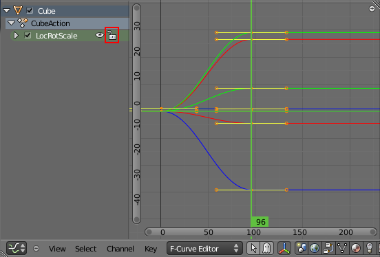Verrouiller ou déverrouiller les courbes
Pour finir, allez dans Key > Interpolation Mode > Linear. Et voilà, nos transformations sont maintenant linéaires ! (voir figure suivante.)
Transformations linéaires
Si vous rejouez l'animation dans la fenêtre 3D, vous vous apercevrez que les transformations de notre cube se déroulent désormais de manière linéaire, à vitesse constante.
Un petit point sur les types d'IPO s'impose :
Constant : transformation brutale, qui s'opère en une frame ;
Linear : transformation linéaire ;
Bezier : tranformation progressive (par défaut).
Fatigué(e) de lire sur un écran ? Découvrez ce cours en livre.
Maintenant que vous connaissez le principe, découvrons un peu quelles clés on peut définir dans notre animation.
Ce qui va déterminer les types de clés que vous pourrez enregistrer, c'est la position du curseur de votre souris. S'il se trouve dans la vue 3D, on l'a vu, on peut définir la localisation, rotation, échelle d'un objet… mais s'il est dans le panneau des matériaux, on pourra enregistrer la couleur du matériau, ses Shaders, la valeur de Ray Mirror et bien d'autres !
Observez la figure suivante : j'ai inséré une clé sur la couleur et son intensité, ce qui est signalé par une teinte jaune-vert.
Utiliser les clés pour régler la couleur d'un objet
Vous pouvez ainsi faire varier d'innombrables éléments de votre animation, il suffit de placer le curseur sur un paramètre et d'appuyer sur la touche I.
En résumé
Insérer une clé d'animation, c'est figer la position d'un objet à un instant donné. Blender se charge ensuite de relier les différentes clés : le mouvement est né !
Pour avoir plus de contrôle sur la transition entre deux clés, on peut modifier les IPO Curves qui se trouvent dans la fenêtre de type Graph Editor.
Il est possible de mettre des clés sur quasiment n'importe quelle caractéristique dans Blender : la position d'un objet bien sûr, mais aussi sa taille, la couleur de son matériau, son degré de transparence, etc.
Fatigué(e) de lire sur un écran ? Découvrez ce cours en livre.
Attention : dans ce chapitre, je vais vous dévoiler un des secrets pour avoir une animation réussie : soigner les mouvements et le cadrage de la caméra !
Contrairement au matériel des réalisateurs de cinéma ou de télévision, notre caméra à nous, infographistes 3D, est virtuelle. Ainsi, pas besoin de grue, steadicam ou chariot pour la déplacer, un clic de souris et elle voyage dans les airs. Cela représente évidemment un énorme avantage, encore faut-il connaître les quelques trucs qui feront de vous le nouveau maître de la caméra.
Le travelling est le déplacement basique de la caméra. Il s'agit de la translater dans une direction ou de façon circulaire.
Au cinéma, les techniciens utilisent la plupart du temps un chariot (dolly) monté sur des rails pour effectuer ce mouvement de façon fluide.
En 3D, nous allons créer une courbe qui sera le chemin de la caméra.
Bah, on ne pourrait pas simplement utiliser les Ikeys pour déplacer la caméra ?
Si, on pourrait ! Mais le résultat serait sans doute saccadé et surtout pas très pratique à ajuster. Avec un chemin, on peut peaufiner en quelques clics le mouvement de la caméra.
Commençons donc par nous occuper du chemin qu'empruntera la camera. Ajoutez une courbe avec Add > Curve > Bezier, comme indiqué à la figure suivante.
Ajouter une courbe
Les courbes de Bezier sont constituées de plusieurs points contrôlés par des poignées (deux au départ). Pour ajouter un point, sélectionnez une extrémité et extrudez-la comme vous en avez l'habitude avec les maillages grâce à la touche E (voir figure suivante).
Ajouter un point sur la courbe
Pour régler les courbes, vous pouvez tourner les poignées à l'aide de la touche R ou ajuster leur influence avec S.
Bien. Une fois le chemin tracé, nous allons parenter la caméra à ce chemin.
Il faut sélectionner d'abord la caméra, et ensuite le chemin. Faites ensuite Ctrl + P et choisissez l'option Follow Path, comme l'illustre la figure suivante.
Sélectionnez l'option Follow Path
Lancez votre animation (avec les touches Alt + A)… voilà votre caméra qui suit la courbe !
Dans le menu Object Data de la courbe (voir figure suivante), on va retrouver deux fonctions intéressantes.
Le menu Object Data de notre courbe
Follow : lorsque cette case est cochée, l'angle de la caméra suit la courbe, un peu comme si la caméra était embarquée dans chariot sur une montagne russe : elle suit les rails ! Si vous désirez que votre caméra reste droite, décochez cette case.
Frames : c'est le laps de temps (en frames) que mettra votre caméra pour partir du début et rejoindre la fin de la ligne. Pour un mouvement plus lent, augmentez la valeur.
Bien sur, vous pouvez réutiliser cette fonction de Follow Path pour d'autres objets, il n'est pas réservé exclusivement à la caméra.
Après le travelling simple, le travelling circulaire !
Holà, mais on va tourner en rond là ! À quoi cela peut-il bien servir ?
Si vous avez terminé une modélisation dont vous êtes particulièrement fiers, un travelling circulaire est le meilleur moyen de la mettre en valeur : on réalise une animation de quelques secondes, durant laquelle la caméra tourne autour de l'objet modélisé. Cela s'appelle un turntable dans le jargon des 3Déistes !
Plutôt que d'utiliser une courbe simple, nous allons directement ajouter un cercle, en allant dans Add > Curve > Circle.
Parentez maintenant la caméra avec le cercle, comme vu précédemment avec la courbe (voir figure suivante).
La caméra est parentée au cercle
Fatigué(e) de lire sur un écran ? Découvrez ce cours en livre.
Track to signifie en français « cibler vers ». Et c'est bien de cela qu'il s'agit : fixer la caméra à une cible qu'elle ne lâchera plus. Cela évite à l'animateur de devoir régler le cadrage manuellement avec des clés IPO, qui ne permettent pas toujours un réglage très précis.
Après avoir sélectionné la caméra, rendez-vous dans le menu Object Constraints et choisissez Track To (voir figure suivante).
La contrainte Track To
Choisissez quelle sera la cible à cadrer pour la caméra, puis cochez -Z et Y : cela obligera la caméra à avoir la tête en haut (voir figure suivante).
Paramétrer la contrainte
Essayez maintenant de bouger votre cible (en vue caméra), vous vous apercevrez que la caméra la suit automatiquement !
D'accord, mais si, à un moment de l'animation, je veux changer de cible pour mon Track To, comment je fais ?
Aïe, là on ne peut pas directement, mais on peut ruser ! Plutôt que d'avoir un objet ou un personnage comme cible, on peut l'associer à un Empty.
Un Empty ? Qu'est ce que c'est que cela ?
Oui, un Empty ! Cela signifie « vide » en anglais. Ce sont des objets qui ne contiennent rien et qui peuvent s'avérer très utile lorsqu'il s'agit d'avoir un repère ou une cible (notamment en animation).
Ajoutez-en un dans la scène avec Shift + A (voir figure suivante).
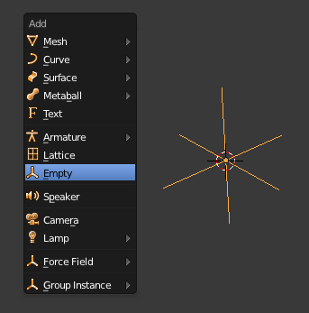Ajouter un Empty
Et voilà, vous avez maintenant un point libre et invisible au rendu qui servira de guide à la caméra.
Vous pouvez bien évidemment combiner les techniques que nous venons de voir (travelling + Track To) pour une plus grande efficacité dans vos animations !
Fatigué(e) de lire sur un écran ? Découvrez ce cours en livre.
Le Fly Mode, c'est l'astuce ultime pour déplacer votre caméra de manière intuitive, un peu comme si vous étiez le pilote d'un avion dans un jeu vidéo.
Comment cela fonctionne-t-il ? Très simplement !
Mettez-vous en vue caméra et lancez le Fly Mode avec le raccourci clavier Shift + F.
Voici les commandes pour vous diriger :
avancer : W ;
monter : X ;
se déplacer sur la droite : D ;
se déplacer sur la gauche : A ;
accélérer : molette vers le haut ;
inverser le mouvement : molette vers le bas ;
arrêter la caméra à la position actuelle : clic gauche ;
annuler le déplacement : clic droit.
Vous allez me dire, c'est très utile pour déplacer la caméra et s'amuser, mais quel est le rapport avec l'animation ?
Le rapport, c'est que vous pouvez enregistrer les déplacements que vous faites en Fly Mode. Appuyez sur le bouton rouge dans la timeline (voir figure suivante) et lancez la lecture de l'animation.
Appuyez sur ce bouton pour enregistrer les déplacements de votre caméra
Lancez le Fly Mode, et tous vos mouvements de caméra seront enregistrés en clés IPO. Reportez-vous à la figure suivante pour voir l'effet sur votre Graph Editor.
Le résultat dans le Graph Editor
En résumé
Le mouvement de la caméra (c'est-à-dire du point de vue) est un élément crucial de toute animation. Il peut dynamiser une scène, faire voyager le spectateur, amener à se pencher sur une action… bref, soignez-le !
Le plus simple de ces mouvements est le travelling. Il s'obtient en parentant la caméra à une courbe de Bezier ou à un cercle.
La contrainte Track To nous débarrasse de la gestion du cadrage, l'objet est automatiquement suivi par la caméra.
Se mouvoir dans une scène comme un oiseau, c'est possible avec le Fly Mode, tout comme enregistrer ses mouvements en clés d'animation.
Fatigué(e) de lire sur un écran ? Découvrez ce cours en livre.
Avec les armatures, vous allez entrer dans une nouvelle dimension de l'animation. Pour l'instant, nous avons vu comment on peut déplacer dans toutes les sens n'importe quel objet. C'est bien, mais… Comment fait-on lorsque l'on veut animer quelque chose de plus complet : un animal qui bouge ses pattes, un personnage en mouvement, un robot qui sort des pinces mécaniques ?
Je vous le donne en mille : on utilise les armatures !
Les armatures fonctionnent très simplement, comme les squelettes sur les êtres vivants. On va créer une armature constituée de plusieurs os qui vont déformer un maillage. Comme vous pouvez l'imaginer, sur des objets un peu complexes à animer, on peut très vite se retrouver avec une armature de plusieurs dizaines d'os !
Rassurez-vous, nous allons commencer en douceur dans ce chapitre avec une armature appliquée à un tube allongé.
Déformer un maillage à l'aide d'une armature se fait en deux étapes : d'abord le rigging, ensuite le skinning.
Le rigging consiste à créer une armature et à bien ordonner la hiérarchie des os (bones en anglais). Par exemple, si je bouge le bone « avant_bras_gauche », le bone « bras_gauche » doit le suivre.
Le skinning est quant à lui un peu plus compliqué : il faut définir pour chaque os quels points du maillage il va mettre en mouvement. On peut le faire manuellement, cela prend du temps mais c'est parfois nécessaire sur des objets complexes.
Allez, plutôt que de continuer à parler tout seul, on va pratiquer cela ensemble !
Commençons par modéliser rapidement une tige que l'on déformera avec une armature.
Ajoutez un cylindre de 8 points de côté (ce sera suffisant) et montez les points du haut de 2 unités, comme indiqué aux figures suivante et suivante.
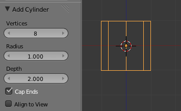Ajouter un nouveau cylindre avec ces paramètresRelever légèrement les points du cylindre vers le haut
Ajoutez trois boucles d’arêtes avec un Loop Cut, comme indiqué à la figure suivante.
Et trois coupes sur le cylindre, trois !
Pour en finir avec notre tige, utilisez les widgets en mode redimensionnement afin de l'affiner en longueur (clic gauche sur l'axe à écarter, en l’occurrence celui des Z) ; voir figure suivante.
C'est bon, notre cobaye est prêt !
Passons maintenant à l'armature. Ajoutez-en une avec Shift + A (voir figure suivante).
Ajouter une armature
Comme l'illustre la figure suivante, l'armature par défaut ne dispose que d'un seul os, constitué d'un corps, d'une queue (tail) et d'une tête (head).
L'armature par défaut n'est faite que d'un seul os
Pour allonger le squelette et faire apparaître de nouveaux os, il faut extruder, en Edit Mode, à partir de la queue des os existants (voir figure suivante).
Allonger le squelette
Maintenant, essayez de placer l'armature à la base de la tige et d'extruder des bones en hauteur, comme indiqué à la figure suivante.
Placez l'armature à la base de la tige
Si les bones sont placés au niveau des arêtes du maillage, ce n'est pas un hasard. Cela permet d'avoir une meilleure déformation lorsque l'armature va plier le maillage.
Fatigué(e) de lire sur un écran ? Découvrez ce cours en livre.
Justement, comment fait-on pour que l'armature déforme l'objet ? Cela ne marche pas, là !
Oui, il faut au préalable parenter le maillage avec l'armature, un peu comme nous l'avions fait dans le chapitre sur l'animation de la caméra.
Sélectionnez la tige puis l'amarture (en maintenant Shift enfoncé) et parentez-les avec Ctrl + P (voir figure suivante).
Le parentage mesh-armature avec l'Automatic Weights
Il existe plusieurs méthodes pour définir la déformation des os sur le maillage :
Empty Groups : cette méthode consiste à créer des groupes de points dans le maillage et à désigner, pour chaque os de l'armature, quel groupe il va influencer. Par exemple, sur le squelette d'un personnage, on assignera les points du maillage correspondant au cou à l'os « cou ».
Envelope Weights : ici, pas besoin de créer des groupes de points. Chaque os va déformer les points qui lui sont les plus proches.
Automatic Weights : la plus pratique ! Blender va calculer automatiquement pour chaque os quels points du maillage doivent bouger en fonction de leur position.
Cliquez donc sur Automatic Weights. Si vous essayez de bouger les os en mode édition, vous verrez qu'il n'y a toujours aucun effet…
Ah, mais qu'est-ce qui cloche alors ?!
Rien du tout, amis zéros ! La manipulation d'une armature s'effectue dans un mode spécial nommé Pose Mode (voir figure suivante).
Le Pose Mode permet de manipuler les armatures
Vous pouvez le sélectionner en bas de la vue 3D ou en faisant Ctrl + TAB.
Et maintenant, si l'on bouge un os… magie, le maillage suit (voir figure suivante) !
La rotation de l'os déforme la tige
Fatigué(e) de lire sur un écran ? Découvrez ce cours en livre.
Maintenant, nous allons essayer d'en savoir un peu plus sur ces bones. Déjà, il faut savoir qu'il y a tout un paquet de boutons et de réglages qui leur sont consacrés, dans le menu Object Data notamment (voir figure suivante).
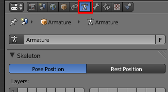Paramétrez votre armature depuis le menu Object Data
Bien sûr, nous n'allons pas entrer dans les détails pour chacun d'entre eux, mais certains méritent un peu d'attention (voir figures suivante et suivante).
Pour commencer, comment représenter les bones dans la vue 3D ? Cela peut paraître un peu superflu, mais vous pouvez choisir entre différentes formes d'os (cela n'influe en rien sur le fonctionnement de l'armature, c'est purement esthétique).
L'onglet Display permet de définir l'affichage de l'armatureUn os en affichage Enveloppe
L’option X-Ray peut quant à elle s'avérer un peu plus utile : elle permet d'afficher l'armature même lorsque celle-ci est cachée à l'intérieur d'un maillage, comme c'est souvent le cas (voir figure suivante).
Affichez l'armature avec l'option X-Ray
Vous avez aussi Names, pour être sûrs de sélectionner le bon os, surtout quand l'armature deviendra chargée en os (voir figure suivante).
Avec Names, affichez le nom de chacun de vos os
On passe ensuite à la configuration de la hiérarchie des os, dans le menu Bone (voir figure suivante).
Le menu Bone
Tout d'abord, vous pouvez détacher un os de la chaîne en décochant Connected, comme indiqué à la figure suivante.
Détacher un os de la chaîne
Il est aussi possible de casser la chaîne de commande des os en décochant Inherit Rotation et Inherit Scale, comme l'illustre la figure suivante.
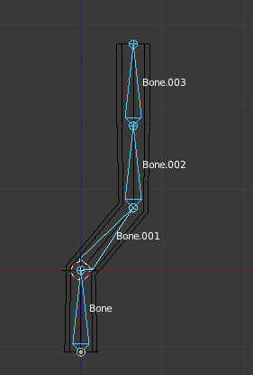Bone.002 n'est plus soumis au mouvement des os supérieurs
Ceci peut être tout à fait adapté à l'animation de robots industriels ou autres engins mécaniques.
Bien, vous en savez maintenant assez sur les armatures pour commencer à animer la tige en ajoutant des Ikeys aux os en Pose Mode !
Petite astuce de fin : si vous voulez remettre les os droits, sélectionnez-les en Pose Mode et faites Alt+ R.
En résumé
Le rôle d'une armature est comparable à celui d'un squelette : permettre le mouvement et la bonne articulation d'un corps.
Il y a deux grandes étapes avant l'utilisation d'une armature : le rigging (le création et l'articulation des os) et le skinning (l'influence des os sur les différentes parties du maillage).
Les os sont articulés avec la notion de parentage : les enfants suivent toujours les mouvements des os qui leur sont supérieurs, leurs parents.
Fatigué(e) de lire sur un écran ? Découvrez ce cours en livre.
Après la théorie, la pratique ! Maintenant que vous connaissez un peu les armatures, il est temps d'attaquer les choses sérieuses niveau animation. Et quoi de mieux pour ce TP que de retrouver Scotty pour ensuite pouvoir le manipuler dans tous les sens ?
En utilisant les os, nous allons être capables de faire bouger son corps comme s'il s'agissait d'un pantin ! Mais attention, ce ne sera pas une tâche aisée ! Soyez donc attentifs à toutes les manipulations que j'effectue afin de ne pas perdre le fil du TP.
Comme pour le TP sur la modélisation du bonhomme, je vous conseille de sauvegarder régulièrement votre avancement. En cas d'erreur, il sera plus facile de revenir en arrière !
Avant de commencer à créer l'armature, assurez-vous que vous n'avez plus que deux meshes indépendants : le corps (buste, ventre, bras, jambes et tête) et les articulations. Pour fusionner plusieurs meshes, sélectionnez-les et utilisez les touches Ctrl + J. Aussi, appliquez les ModifierMirror au corp ainsi qu'aux rotules (voir figure suivante). Par contre, n'appliquez pas le SubSurf sur le corps, cela donnerait un maillage trop lourd qui ralentirait Blender.
Séparez le corps des articulations
Bien, voilà nos deux objets parés ! Débutons tranquillement en ajoutant une armature : Add > Armature (voir figure suivante).
Ajout d'une armature
Pour construire et placer le squelette de Scotty, nous allons nous aider des sphères qui servent d'articulations. Tout au long de cette phase de rigging, il va nous falloir positionner tous les os au niveau de ces rotules. Commençons par déplacer la tête du premier os au niveau de l'entrejambe, comme indiqué à la figure suivante.
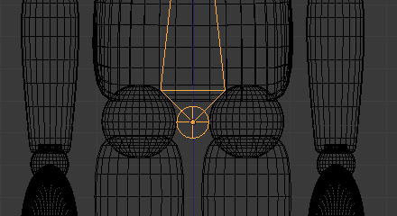Déplacez la tête de l'os
Bien, ensuite, passons la queue de cet os au niveau de la grosse sphère du ventre, comme sur la figure suivante.
La queue du premier os doit se trouver au niveau de la sphère
Est-ce que c'est grave si l'alignement n'est pas parfait ?
Oui, ce sera embêtant ! J'insiste sur ce point, mais il faut que nos os épousent parfaitement les formes de notre bonhomme. C'est pourquoi nous allons appeler le curseur 3D à la rescousse pour aligner parfaitement l'os et la sphère.
Repassez en mode édition, sélectionnez vos articulations et sélectionnez les points de cette sphère avec L, comme le montre la figure suivante.
Sélectionnez les points de la sphère et les articulations
Appuyez sur Shift + S : un petit menu apparaît. Nous allons cliquer sur Cursor to Selected et le curseur va alors se positionner au milieu de notre sélection (voir figure suivante).
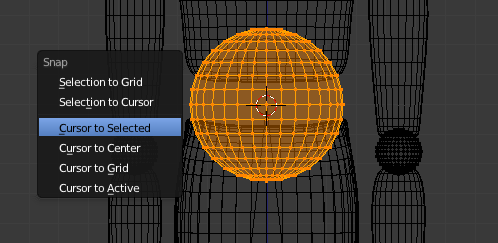Choisissez Cursor to Selected
Ensuite, on revient à notre armature, on sélectionne la queue de l'os et, toujours avec Shift + S, on clique sur Selection to Cursor. Et voilà ! Cette fois, c'est la sélection qui va prendre la position du curseur 3D. Résultat, notre os est maintenant parfaitement au centre de l'articulation !
Vous avez compris le principe ?
positionner le curseur 3D au niveau de l'articulation ;
placer l’extrémité de l'os au niveau du curseur.
Tant mieux, car on va l'appliquer pour toute l'armature !
Continuons vers le haut et extrudons un nouvel os que l'on va déplacer jusqu'au cou. Encore une fois, utilisez Shift + S pour placer précisément le bone au niveau de la sphère (voir figure suivante).
Placez précisément votre os au niveau de la sphère
Cela peut paraître un peu formel, mais avoir les os parfaitement au niveau des rotules est nécessaire si l'on veut ne pas avoir de mouvements bizarres lorsque nous aurons terminé le rigging.
Pour en finir avec le haut du corps, extrudez un troisième os au-dessus de la tête. Ici, la position de l'os importe peu, le tout est qu'il soit bien droit, comme à la figure suivante.
Extrudez un troisième os au-dessus de la tête
Bon, jetons un coup d'œil à la figure suivante pour voir tout ce que nous venons de faire !
Ce n’est pas mal, le tronc est déjà fini !
Nous allons continuer sur notre lancée et descendre vers les jambes. Sélectionnez la tête de l'os du ventre et extrudez-le vers le genou pour former l'os « cuisse » (voir figure suivante).
Extrudez l'os vers le genou pour former la cuisse
Si vous sélectionnez cet os et tentez de le bouger avec la touche G, vous vous apercevrez qu'il n'est pas rattaché à la chaîne, comme si nous avions décoché Connected. Cela tient au fait que nous avons extrudé à partir de la tête et non de la queue d'un os.
Par contre, on s'aperçoit que l'os a un peu tourné sur lui-même après qu'on l'a déconnecté. Ce n'est pas grave, il suffit de remettre Roll à zéro dans le menu Bone, comme l'indique la figure suivante.
Passez le paramètre Roll à 0
Voilà, il vous suffit alors de dérouler la chaîne d'os vers le bas jusqu'au pied, en prenant à chaque fois soin de placer précisément les os au niveau des rotules, comme l'illustrent les figures suivante et suivante.
Les os de la cuisse et du molletL'os du pied en vue de profil
Pour les bras, nous allons procéder de la même manière. Extrudez un nouvel os à partir de la queue du bone « Ventre », déconnectez-le de la chaîne et placez sa queue au niveau de l'avant-bras, comme indiqué à la figure suivante (et n'oubliez d'annuler son Roll).
Placer l'os du bras
Le dernier os sera celui de la main ! Pour le positionnement, reportez-vous à la figure suivante.
Placer l'os de la main
Le côté gauche du squelette du bonhomme est terminé. Plutôt que tout refaire pour l'autre côté, nous allons dupliquer les bras et jambes et les faire tourner.
Ah, alors on va utiliser un modifierMirror ?
Presque ! On ne peut pas utiliser les modificateurs sur les armatures. On va donc biaiser et utiliser une autre méthode. Sélectionnez les trois os des bras et les trois os des jambes, dupliquez-les (touches Shift + D) et faites Ctrl + M puis X.
Comme l'illustre la figure suivante, les nouveaux os ont tourné. Confirmez avec un clic gauche, puis déplacez ces six os pour qu'ils coïncident bien avec les articulations du côté droit. Si vous voulez être pointilleux, vous pouvez toujours utiliser le curseur 3D pour placer parfaitement ces os.
Les nouveaux os ont tourné
Je vous conseille de renommer tous les os avec des noms clairs, si possible en utilisant les mêmes dénominations que moi. De cette manière, on s'y retrouvera bien lors du skinning. Reportez-vous à la figure suivante pour les os du haut, et à la figure suivante pour ceux du bas.
Pensez à nommer les os !Pensez à nommer les os !
Pour finir, nous allons terminer la hiérarchie des os.
Sélectionnez votre « Cuisse_D » et assignez comme parent l'os « Ventre » (voir figure suivante). Faites la même chose avec « Cuisse_G ». Vous pouvez tester en Pose Mode, les jambes vont maintenant suivre le tronc !
Assigner un os parent
Nous allons faire de même pour les bras, en leur désignant comme parent l'os « Buste ».
Fatigué(e) de lire sur un écran ? Découvrez ce cours en livre.
On va utiliser le parentage avec l'Automatic Weights, comme pour la tige ?
Non, pas cette fois-ci ! L'ennui avec l'Automatic Weights, c'est que cette méthode ne produit pas toujours un résultat parfait. Par exemple, un os va parfois faire bouger de façon peu pertinente certains points du maillage. Elle est souvent efficace sur des armatures et objets simples mais, dans le cas de notre bonhomme, il risque d'y avoir trop d'erreurs pour que ce soit intéressant.
Pour lier notre armature à Scotty (le corps et les articulations), nous allons donc plutôt choisir Vertex Groups.
Sélectionnez les deux maillages puis l'armature, et faites Ctrl + P (voir figure suivante).
Lier l'armature à Scotty
Ensuite, pour les deux maillages, allez décocher Bone Envelopes dans la liste des Modifiers, étant donné que nous n'allons utiliser que les Vertex Groups (voir figure suivante).
Décochez l'option Bone Envelopes
Alors ces Vertex Groups, comment ça marche ?
Je vous en ai déjà parlé brièvement au chapitre précédent : il s'agit d'assigner à chaque os de l'armature les vertices du maillage qui vont le suivre.
Ces groupes de points ont été automatiquement créés par Blender lorsque nous avons lié l'armature aux maillages. Vous pouvez les voir en allant dans le menu Object Data de vos meshes (voir figure suivante).
Le menu Object Data avec l’assignation des Vertex Groups
Nous avons donc une liste de groupes de points associés à chaque bone de l'armature. Trois boutons sont importants dans ce menu :
Assign : affecte à l'os les points sélectionnés en mode édition.
Weight : définit la force du lien entre l'os et les points. Pour nous, ce sera toujours 1.
Remove : défait le lien entre un groupe de maillage et un os (utile au cas où on se serait trompé lors de l'assignation).
Nous allons commencer par assigner les points du ventre… à l'os « Ventre » !
Après avoir configuré l'affichage de l'armature en X-Ray avec le nom des os, on y voit plus clair.
En mode édition, sélectionnez tous les points qui composent le ventre (avec la touche L) et cliquez sur Assign après vous être assurés que « Ventre » est bien sélectionné dans la liste des Vertex Groups, ainsi qu'illustré à la figure suivante.
Assigner les points du ventre
Maintenant, si vous revenez sur l'armature en Pose mode et bougez cet os, les points que nous venons de lui assigner le suivront !
Vous avez compris le principe, il va falloir associer un à un tous les éléments du corps à l'os qui leur correspond.
Je vous en montre quelques-uns : le buste à la figure suivante et le bras gauche à la figure suivante ; vous pourrez vous occuper du reste tout seuls !
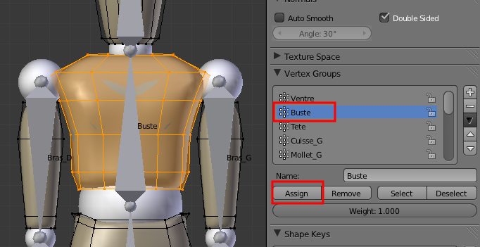Assigner les points à l'os du busteAssigner les points à l'os du bras gauche
Et on continue de la même manière pour le reste du corps !
Bien sûr, on n'oublie pas les charnières ! Là, vous avez le choix : à chaque charnière, vous pouvez assigner soit l'os du dessus, soit l'os du dessous : cela n'a pas d'importance (voir figure suivante).
Placer les charnières
Pour la sphère qui fait office de coude, on peut par exemple choisir soit le groupe « Bras_G », soit « Avant_bras_G ».
Une fois que toutes les assignations sont réalisées, vérifiez que tout fonctionne correctement avec le Pose Mode.
Si vous vous rendez compte qu'une assignation a été mal faite, vous pouvez défaire les liens avec le bouton Remove.
Voilà, maintenant c'est à vous de jouer !
Avec les Ikeys, vous pouvez animer toute l'armature, le bonhomme va suivre. Commencez avec des mouvements simples : salut de la main, personnage assis qui manipule quelque chose, puis, progressivement, augmentez la difficulté : se penche et prend un objet, fait quelques pas…
En quelques clics, on obtient toute sorte de poses avec Scotty ! Regardez donc les figures suivante et suivante.
Un peu de gymnastique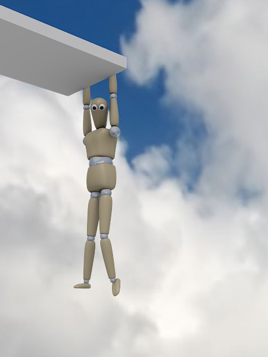Tiens bon Scotty !
Et pour finir, un petit raccourci astucieux pour remettre vos os bien droits : sélectionnez-les en Pose Mode et faites Alt + R.
Fatigué(e) de lire sur un écran ? Découvrez ce cours en livre.
Après quelques chapitres sur les armatures - qui constituent un sujet assez compliqué, il faut bien l'avouer - j'ai décidé de vous laisser souffler un peu en traitant une fonction amusante et facile !
On va donc s'essayer ensemble à la simulation des fluides. Et le mieux, c'est qu'on n'a pas grand chose à faire : on ajuste quelques paramètres et c'est Blender qui se charge de calculer tout cela.
Allez, c'est parti pour faire des Splash partout dans Blender !
La première étape de l'animation des fluides est de créer un Domain. Le Domain est un mesh qui contiendra la simulation de fluides, lesquels ne pourront pas s'en échapper.
Pourquoi être limités par un Domain ?
Si Blender devait calculer la simulation dans toute la scène, cela prendrait bien trop de ressources (déjà que la simulation de fluides est assez gourmande…). Par conséquent, on la restreint à un espace donné.
Par commodité, on définit souvent un cube simple comme Domain, comme l'illustre la figure suivante.
On limite ici le Domain à un cube
Une fois qu'on a défini notre Domain, on ajoute un liquide et le tour est joué.
Parés pour votre première simulation de fluides ? C'est parti !
Fatigué(e) de lire sur un écran ? Découvrez ce cours en livre.
Nous allons donc commencer par configurer le cube de base en Domain. Pour cela, sélectionnez-le et rendez-vous dans le panneau Physics (voir figure suivante).
Le menu Physics
Cliquez sur Add dans l'onglet Fluid, puis choisissez le type Domain comme indiqué à la figure suivante.
Définition d'un Domain
Tout de suite, un certain nombre de nouveaux réglages apparaissent !
Voici quelques propriétés du Domain :
Bake Fluid Simulation : une fois qu'on aura réglé la simulation, ce sera le bouton qui nous permettra de la calculer ; mais pour l'instant, n'y touchez pas.
Resolution : définit la précision, au rendu, des fluides qui seront dans le Domain. Plus cette valeur sera élevée, plus le fluide paraîtra fin, réaliste, avec de jolies petites éclaboussures. En contrepartie, le temps de calcul sera plus long et la mémoire RAM exigée pourra atteindre des sommets.
Si vous n'avez pas un ordinateur dernier cri, une valeur autour des 150 devrait convenir.
Resolution preview : cette fois, c'est la finesse des fluides dans la vue 3D qu'on règle. Pas besoin d'avoir des valeurs trop élevées, c'est simplement pour avoir une idée de ce que peut donner votre simulation au rendu.
Une valeur légèrement inférieure à 100 suffit mais, si vous disposez d'une carte graphique puissante, vous pouvez pousser ce chiffre un peu plus loin.
Start et End : définissent la durée, en secondes, de la simulation de fluides. Si vous gardez les paramètres par défaut (c'est-à-dire une animation de 250 frames et 4 secondes de simulation de fluides), le mouvement des liquides vous paraîtra lent, comme en slow motion. Pour un mouvement réaliste, vous pouvez définir End autour de 10.
Tout en bas, vous avez une petite icône de dossier. Ceci est important, car la simulation de fluides va en fait générer beaucoup de fichiers qui ne seront pas enregistrés dans notre fichier .blend, mais dans un dossier externe de votre choix. Je vous conseille de créer un dossier vide Fichiers_fluides où vous pourrez entasser tous ces petits fichiers pour chaque nouvelle simulation.
On continue notre tour des réglages avec l'onglet Domain World (voir figure suivante).
L'onglet Domain World
Là, seulement deux réglages nous intéressent :
Viscosity : la viscosité des fluides. Par défaut, c'est celle de l'eau, mais on peut choisir une matière plus gluante comme le miel, ou même la définir manuellement.
Real Word Size : pour un résultat optimal, il vous faudra indiquer à Blender l'échelle de la scène (par défaut, un carreau = 0,5 mètre).
À titre d'exemple, voici présentés à la figure suivante mes petits réglages lorsque je fais une simulation de fluides.
Mes réglages pour la simulation des fluides
Voilà, c'en est fini avec le Domain (ouf !), on peut passer aux fluides.
Fatigué(e) de lire sur un écran ? Découvrez ce cours en livre.
Ajouter des fluides oui, mais comment ? Avec Blender, il existe plusieurs façons de faire apparaître des fluides en partant d'un simple mesh (prenons une Icosphere).
Le type Fluid
Sélectionnez votre Icosphere et assignez-lui le type Fluid dans l'onglet du même nom, comme à la figure suivante.
Assignation du type Fluid
Positionnez votre Icosphere (une goutte d'eau) légèrement en hauteur dans votre Domain, de façon à ce qu'elle prenne un peu de vitesse avant de s'écraser (voir figure suivante) !
Positionner son Icosphere
Puis lancez la simulation dans l'onglet du Domain avec Bake Resolution… vous n'avez plus qu'à admirer le résultat (voir figure suivante) !
Ma belle goutte d'eau s'écrasant sur le bord du Domain
Créer des Inflow
Plutôt qu'avoir de simples liquides qui se baladent dans le Domain, on peut également créer des Inflow, c'est-à-dire des points d'entrée de liquides (comme un robinet ou une lance à incendie). Là encore, il faut utiliser un mesh comme « arrivée d'eau » en réglant la vitesse initiale du fluide qui va en sortir (voir les figures suivante et suivante).
Créer un InflowUn cube en Inflow : attention aux éclaboussures !
Bien sûr, on peut combiner les Fluid et Inflow dans un seul Domain, comme l'illustre la figure suivante
Combinaison du Fluid et de l'Inflow
Maintenant que vous connaissez les Fluid et Inflow, vous pouvez commencer à faire quelques petites simulations sympathiques. Après, si vous voulez corser un peu la chose, il faut passer aux Outflows et Obstacles !
L'Outflow
Les Outflows sont tout simplement l'inverse des Inflows : au lieu de créer une arrivée d'eau, ils vont faire disparaître les fluides comme une cuvette de WC ou la bonde du lavabo (voir figure suivante).
Un cube avec à son fond un petit Outflow : il se vide progressivement
Obstacle
Là, pas besoin de traduire : on va placer des obstacles dans notre simulation. La figure suivante illustre cet effet.
Placer un obstacle dans son animation
<information>Les obstacles peuvent également être animés à l'aide des courbes IPO. Par contre, il faudra dans ce cas cocher le paramètre Noslip, comme indiqué à la figure suivante
Cocher Noslip pour animer un obstacle à l'aide des courbes
Fatigué(e) de lire sur un écran ? Découvrez ce cours en livre.
Avoir une simulation de fluides, c'est bien, mais faire en sorte qu'elle soit jolie au rendu, c'est encore mieux !
On commence avant tout par un petit Smooth, cela ne coûte rien et votre simulation n'en sera que plus agréable à regarder (voir figure suivante) !
L'effet Smooth
Si vous avez fixé une résolution assez faible pour le rendu, une petite astuce consiste à activer un Subsurf de 1 ou 2 sur votre mesh Domain pour « tricher » et ainsi gagner un peu en niveau de détail (voir figure suivante).
L'effet Subsurf
Ensuite on passe à la mise en couleurs : essayez donc de trouver des couleurs et matériaux qui soient réalistes… ou bien décalés, cela peut être rigolo aussi !
Par exemple, en utilisant le shader Minnaeret, on obtient un liquide qui donne une impression de velours (voir figure suivante).
Le shader Minnaeret
Ou pourquoi pas de l'or liquide ? Facile, une couleur et spécularité dans les jaunes, un peu de Mirror, et le tour est joué (voir figure suivante) !
Obtenir une texture d'or avec l'effet Mirror
Et pour finir, je fais mumuse avec des textures Nor (voir figure suivante).
Texture Nor
Vous pouvez aussi intégrer une simulation de fluides à une animation plus globale, comme un objet qui tombe dans l'eau, une fuite de robinet, une vague qui s'écrase sur un rocher… soyez originaux, les possibilités sont infinies en 3D !
En résumé
Une simulation de fluides est contenue à l'intérieur d'un Domain comparable aux parois d'un aquarium.
Très gourmande en ressources, une simulation de fluides requiert en plus de stocker des centaines de fichiers externes dans un dossier vide. L'amusement a un coût !
Dans le Domain, on peut ajouter des fluides, mais également des arrivées d'eau (Inflow), des déversoirs (Outflow) et des Obstacles.
Fatigué(e) de lire sur un écran ? Découvrez ce cours en livre.
Pour débuter cette nouvelle partie sur les techniques avancées, nous allons nous attaquer à un sujet ô combien délicat : le réglage des matériaux et des textures.
Un erreur fréquente chez les débutants est qu'ils consacrent peu d'attention au paramétrage des matériaux de leurs scènes, ce qui gâche souvent le travail réalisé sur la modélisation et produit un rendu peu réaliste.
Dans ce chapitre, nous allons donc passer en revue différentes techniques et méthodes qui vous permettront d'ajouter des effets convaincants à vos matériaux.
Nous avions rapidement passé en revue les différents shaders dans la seconde partie de ce cours. Il est temps de s'arrêter un peu plus longuement dessus pour percer tous leurs secrets !
Pour commencer, quelques petits rappels ne nous feront pas de mal : les shaders vont définir la couleur diffuse du matériau, sa clarté (c'est le rôle du shader diffus) et également l'intensité et la taille de la tache de lumière reflétée (shader spéculaire). Vous percevez naturellement toutes ces notions dans la vie quotidienne, et votre cerveau interprète toutes ces données pour vous dire « ce que je regarde ressemble à du bois » ou « ça, c'est du béton ! ». Pour autant, reproduire ces matériaux dans Blender n'est pas une chose facile ! Il faut d'abord que vous preniez conscience de toutes les propriétés qui constituent un matériau pour ensuite savoir les retranscrire dans Blender à l'aide des réglages appropriés.
Voyons ensemble quelques cas concrets :
Sur cette figurine en plastique moulé (voir figure suivante), on remarque des taches spéculaires nettes et assez marquées, notamment sur les rides du front. Si je devais recréer ce matériau dans Blender, il me faudrait élever l'intensité du shader spéculaire et également le paramètre Hardness (pour que la tache spéculaire soit bien nette).
Pour reproduire cette figurine, nous utiliserons le shader spéculaire et le paramètre Hardness
Sur cette balle de tennis (voir figure suivante), on ne distingue au contraire aucune tache de lumière très nette et bien visible. En conséquence, il faudrait baisser Intensity et Hardness dans l'onglet Specular pour avoir une lumière spéculaire discrète et diffuse.
Pour reproduire cette balle, il faudra utiliser Intensity, Hardness et Specular
Ce que je veux vous montrer avec ces exemples, c'est que vous devez, avant toute manipulation dans Blender, bien étudier dans la réalité le matériau que vous allez simuler.
Je dirais que le réglage des matériaux est constitué de 70% d'observation de la réalité et 30% de tests dans Blender.
Pour corser un peu le tout, on a plusieurs choix de shaders diffus ou spéculaires.
Mais quelles sont les différences entre tous ces shaders ? Lequel choisir dans quel cas ?
Eh bien c'est ici que cela se complique : pour obtenir un matériau réaliste, il faut bien souvent essayer plusieurs shaders et réglages avant de trouver celui qui sera le plus convaincant. Honnêtement, tous les shaders ne sont pas indispensables mais, suivant la matière que vous voulez créer, certains sont plus appropriés que d'autres :
Pour les shaders diffus :
Lambert : shader généraliste (activé par défaut) ;
Oren-Nayar : permet de définir une rugosité pour le matériau ;
Toon : pour un style cartoon ;
Minnaert : tissus ;
Fresnel : pour les objets transparents ou miroirs.
Et pour les shaders spéculaires :
CookTorr : associé au shader diffus Lambert par défaut ;
Phong : similaire à CookTorr mais plus adapté aux plastiques ;
Blinn : à utiliser avec le shader diffus Oren-Nayar ;
Toon : à utiliser avec le shader diffus Toon ;
WardIso : certains liquides, plastiques brillants.
Voilà qui devrait constituer une bonne base de réflexion pour le réglage de vos shaders !
Fatigué(e) de lire sur un écran ? Découvrez ce cours en livre.
Bien régler ses shaders, c'est un pas en avant vers le réalisme. Mais sans textures, un matériau restera bien fade !
Dans cette section, vous allez apprendre à tirer le maximum de vos textures, notamment en les utilisant sur différents canaux (couleur, relief et spécularité). Pour vous entraîner, nous allons essayer de construire un matériau représentant du béton de la manière la plus convaincante possible.
Mais pour ce mini-TP, nous allons opter pour un pack spécifique, accessible via ce lien.
Ce pack a pour avantage de nous offrir des textures couleur/relief/spécularité avec une résolution raisonnable.
Après avoir extrait l'archive, vous vous retrouvez avec trois images :
(…)concrete-12_d100 : la Diffuse Map, c'est-à-dire l'image qui va remplacer la couleur unie de notre matériau ;
(…)concrete-12_b010 : la Bump Map qui va gérer le (léger) relief de notre béton ;
(…)concrete-12_s100-g100 : la Specular Map pour la spécularité.
Maintenant qu'on a les textures, on peut les charger dans Blender : ajoutez un nouveau matériau et liez-lui trois textures de type Image, en leur donnant des noms clairs pour vous y retrouver (voir figure suivante).
Lier un matériau à des textures
Ensuite, au moyen du bouton Load, chargez les trois images que nous venons de télécharger. On va également baisser la valeur du paramètre Filter de chaque texture au minimum, 0.1 : cela permettra d'avoir les textures les plus nettes possibles au rendu. Par ailleurs, si vous comptez utiliser les textures sur un objet de grande taille, augmentez le nombre de répétitions des textures à l'aide du paramètre Size. Également, n'oubliez pas de choisir une projection de type Cube afin que vos textures ne s'étirent pas dans tous les sens (pour ces réglages, reportez-vous à la figure suivante).
Application des textures
Maintenant, on va régler le canal de chaque texture dans l'onglet Map To.
Pour la Diffuse Map, on coche Color pour que la texture remplace la couleur de notre matériau (voir figure suivante).
Régler la Diffuse Map
Pour la Bump Map, c'est le canal Normal qu'on utilise (voir figure suivante).
Régler la Bump Map
Enfin, pour la Specular Map, c'est l'intensité de la spéculaire (voir figure suivante).
Régler la Specular Map
Vous remarquez sans doute, dans la prévisualisation du matériau, que la spécularité est trop élevée après qu'on a activé notre Specular Map (même en ayant baissé Intensity, dans l'onglet Specular, à 0.2). Pour pallier ce petit inconvénient, il faut réduire l'intensité de notre shader spéculaire à 0. Cela permettra de prendre en compte à la fois la texture et la spécularité nulle du matériau : on atténue donc l'effet trop fort de la Specular Map.
Pour les shaders, j'ai choisi de laisser ceux par défaut et d'adoucir légèrement les taches spéculaires avec Hardness (voir figure suivante).
Paramétrage des shaders
Et pour admirer le résultat de notre béton sur le cube et sur Suzanne, je vous invite à consulter les figures suivante et suivante !
Cube en bétonSuzanne en béton
Plutôt convaincant, non ?
Fatigué(e) de lire sur un écran ? Découvrez ce cours en livre.
Non, ma langue n'a pas fourché, vous avez bien lu « SSS » !
Ces trois lettres sont en fait l'abréviation d'une technique appelée le SubSurface Scattering (dispersion sous la surface) qui permet de simuler l'effet de la lumière qui traverse les objets.
De la lumière qui traverse des objets ?
Eh oui ! Beaucoup de matières sont translucides, et cela se remarque surtout quand l'épaisseur de l'objet est faible.
N'avez-vous jamais mis une lampe derrière vos doigts ? Les contours vont paraître rouges, traversés par la lumière.
C'est donc cet effet que simule le Subsurface Scattering et que vous pourrez utiliser sur beaucoup de matériaux comme la peau humaine, certains plastiques, le marbre, la cire, certains liquides…
Ah d'accord ! Et il se trouve où, ce « SSS » ?
Il a un onglet pour lui tout seul, dans le menu des matériaux, comme vous pouvez le voir sur la figure suivante.
Menu SubSurface Scattering
Eh oui, comme d'habitude dans Blender il y a beaucoup de boutons ! Les développeurs ont quand même pensé à nous en insérant des pré-réglages (voir figure suivante).
Le menu SubSurface Scattering contient des pré-réglages
Comme vous le voyez, on a le choix entre des modèles de lait, de peau, de patate, de marbre, de ketchup… Bien sûr, nous ne sommes pas obligés de nous en tenir à ces propriétés, nous pouvons tout à fait créer notre propre effet de « SSS ». Mais, avant de toucher à tout, faisons le tour des paramètres importants :
Subsurface Scattering : ce petit bouton va simplement activer ou désactiver le « SSS » sur le matériau.
Scale : pour bien fonctionner, le « SSS » a besoin que vous lui donniez la taille des objets.
Si Scale vaut 1, cela signifie qu'un carreau dans la vue 3D correspond à un millimètre ; en revanche, une valeur de 0.001 signifie qu'un carreau correspond à un mètre (oui, c'est un peu tordu !).
Radius RGB : ce paramètre définit la couleur de la surface traversée par la lumière. Pour la peau humaine, c'est du rouge, donc Radius R aura une valeur élevée.
IOR : angle de dispersion de la lumière dans la surface. Laissez-le à 1.3 ou 1.4 et cela ira très bien.
Error : abaissez cette valeur pour avoir un « SSS » plus précis, mais le temps de rendu en sera rallongé.
<information>Lorsqu'on utilise le « SSS », il faut définir une nouvelle couleur de matériau, qui remplacera celle du shader, grâce à la pipette de couleur (voir la figure suivante
Définir une nouvelle couleur
Vous pouvez maintenant tester le Subsurface Scattering tout seuls en changeant ces paramètres mais, bien souvent, les pré-réglages vous seront suffisants.
La figure suivante propose un rendu de Suzanne avec le pré-réglage Skin 2 légèrement modifié et une lampe juste derrière elle pour bien marquer l'effet !
Effet du « SSS » sur Suzanne, avec un Skin 2
En résumé
Soignez vos shaders ! Ils déterminent l'aspect de votre matière. Pour cela, pas de recette miracle, il faut tester et encore tester au rendu.
Combiner plusieurs textures sur le même matériau est une méthode très efficace : l'une va apporter de la couleur, l'autre un relief, une dernière de la spécularité. Un matériau réaliste s'obtient quasiment tout le temps de cette façon.
Le SSS de Blender permet de reproduire le phénomène de pénétration de la lumière dans une matière, comme cela se produit avec la peau, la cire, différents liquides et plastiques, etc.
Fatigué(e) de lire sur un écran ? Découvrez ce cours en livre.
L'éclairage est bien souvent la dernière étape, avant le rendu final, du développement d'un projet en 3D. S'il est soigné et adapté, il mettra en valeur les matériaux que vous avez conçus et pourra générer l'ambiance que vous souhaitez. Même si l'éclairage est quelque chose de plus technique que créatif, il ne faut pas le négliger !
Il est donc important de savoir quel éclairage utiliser et dans quelles circonstances, comment le régler, etc.
Avant de voir les bonnes méthodes d'éclairage, on va étudier les mauvaises pour que vous ne les reproduisiez pas.
Petit exercice : observez la figure suivante et essayez de trouver les défauts d'éclairage qui s'y trouvent.
Arriverez-vous à déceler les erreurs d'éclairage ?
Sur cet exemple, c'est assez flagrant : il y a une tache spéculaire due au mauvais positionnement d'une lampe, qui se trouve trop proche du mur et dans le champ de la caméra. En plus, les ombres sont toutes noires (ce qui arrive très rarement dans la réalité), signifiant qu'il n'y a qu'une source de lumière dans la scène.
Pour un éclairage de qualité, il faut utiliser plusieurs lampes qui auront chacune un rôle particulier :
générer les ombres ;
simuler un éclairage global ;
mettre en avant les contours des objets ;
etc.
La figure suivante reproduit la même scène avec plusieurs lampes.
Effet d'ombre avec plusieurs lampes
Maintenant, voyons comment paramétrer cela dans Blender !
Fatigué(e) de lire sur un écran ? Découvrez ce cours en livre.
Votre éclairage sera avant tout défini par les lampes de votre scène, leur type, leur placement, leurs réglages… Il est est donc nécessaire de bien connaître leurs capacités.
Pour cela, pas de mystère, il va falloir qu'on passe en revue les différents boutons qui composent l'onglet Lamp (voir figure suivante).
L'onglet Lamp
This Layer Only
On commence par la case à cocher This Layer Only : si celle-ci est cochée, la lampe va éclairer seulement les objets qui sont dans le même calque qu'elle.
C'est une option intéressante lorsque l'on veut mettre en lumière un objet particulier, comme l'illustre la figure suivante.
Une Suzanne qui se distingue grâce à cette astuce
Negative
On trouve aussi l'option Negative : la lampe diffuse alors de la lumière noire, qui va obscurcir les objets autour d'elle. Dans la réalité, cette lumière noire est utilisée par exemple dans les boîtes de nuit.
Quel intérêt d'assombrir ma scène ? J'ai déjà du mal à l'éclairer correctement !
Cela va vous permettre d'assombrir des choses inquiétantes, comme l'entrée d'une grotte ou le recoin d'une pièce. Bien sûr, il ne faut pas en abuser au risque d'avoir un rendu tout noir !
Diffuse, Specular
Enfin, on arrive aux cases à cocher Diffuse et Specular, qui déterminent de quelle manière la lampe va affecter les objets de notre scène. Si vous décochez Specular, la lampe ne générera pas de taches spéculaires sur vos objets (le shader spéculaire du matériau ne sera plus pris en compte), rendant l'éclairage plus doux mais atténuant au passage l'impression de relief des objets. En décochant Diffuse, on ne fait cette fois-ci apparaître que les taches spéculaires, rendant l'objet sombre et dépourvu de couleur principale. Pour mieux comprendre ces effets, je vous invite à consulter la figure suivante.
Les effets Diffuse et Specular
Il n'y a évidemment aucun intérêt à n'avoir qu'une lampe avec Diffuse ou Specular désactivé, mais combiner ces possibilités permet de mettre au point des systèmes efficaces, comme l'éclairage à trois points.
Éclairage à trois points
En photographie comme en infographie, il existe une méthode d'éclairage dite « à trois points », assez simple à mettre en œuvre et qui donne des résultats corrects sur des scènes simples. Comme son nom l'indique, cela permet de simuler trois sources lumineuses :
une principale, puissante, qui éclaire la scène et génère les ombres ;
une deuxième, sur le côté, destinée à atténuer les ombres générées par la lampe principale ;
et enfin une troisième, placée dans le fond, qui fera briller les contours de l'objet.
La figure suivante propose une scène avec un éclairage à trois points.
Composer un éclairage à trois points
Et pour observer le rendu sur Suzanne, je vous renvoie à la figure suivante !
Le rendu d'un éclairage à trois points
L'avantage de ce système est sa simplicité de mise en œuvre et sa rapidité de calcul au rendu. Prenez l'habitude de partir de ce système plutôt que de l'unique lampe par défaut pour affiner ensuite votre éclairage en ajoutant d'autres outils comme l'Ambient Occlusion.
Fatigué(e) de lire sur un écran ? Découvrez ce cours en livre.
Dans un chapitre précédent, nous avons vu rapidement les deux méthodes d'occlusion ambiante de Blender. On va y revenir afin de voir tous ce que peut nous apporter l'« AO » (abréviation d'Ambient Occlusion), et plus particulièrement quand on utilise la méthode Approximate.
Le premier point qui va nous intéresser est bien sûr la qualité de cette occlusion ambiante. Pas question de l'utiliser si c'est pour avoir des taches sombres ou autres artefacts !
La figure suivante présente les différents paramètres de l'onglet Ambient Occlusion.
L'onglet Ambient Occlusion
Commençons par le paramètre Error : plus vous le diminuerez, moins l'AO sera approximative et irrégulière. Pour bien vous montrer le fonctionnement de ce paramètre, je vous ai concocté l'animation suivante :
Les différents paramétrages de Error
Continuons notre découverte de l'AO avec Pixel Cache : encore un moyen d'accélérer le rendu. L'AO n'est effectivement calculée que pour quelques pixels de l'image et les résultats sont ensuite extrapolés aux pixels voisins, évitant de tout calculer. Ce que vous devez retenir, c'est que c'est plus rapide pour un résultat similaire, alors on ne se prive pas de cocher cette case !
Ensuite on passe aux deux méthodes de l'AO Approximate : Add et Multiply (voir figure suivante).
Les paramètres Add et Multiply
Ces deux options définissent comment l'AO va être utilisée : soit en illuminant la scène, avec Add, soit en la contrastant, avec Multiply. Pour mieux comprendre les subtilités de Add et de Multiply, observez les figures suivantes.
Add : scène claire, ombres douces.Multiply : l'image est globalement plus sombre et les ombres plus marquées.
Il vous faudra parfois contrebalancer les effets d'assombrissement de Multiply en plaçant d'autres lampes sur les zones trop sombres et en augmentant leur paramètre Energy.
Également, l'utilisation de Multiply peut faire apparaître des sortes de taches-ombres toutes noires (et pas très esthétiques). Mais on peut les réduire simplement en augmentant la valeur de Correction. L'animation suivante illustre l'effet de correction :
Utilisation de la valeur Correction
Comme vous le voyez, il faut parfois batailler avec tous les réglages pour trouver une occlusion ambiante qui collera à votre scène ; mais bien souvent, le résultat est là !
Couleur Ambiante
Si vous voulez donner une atmosphère à votre éclairage (coucher de soleil, fond sous-marin…), vous pouvez changer la couleur ambiante tout en baissant un peu l'énergie de l'AO (sinon votre scène risque d'être trop lumineuse).
Par défaut, elle est noire, ce qui n'est pas très original mais cela a le mérite d'être neutre !
L'Ambient Color se paramètre dans l'onglet World, en haut du menu (voir figure suivante).
Choisir son Ambient Color
Pour illustrer l'effet de la couleur ambiante, j'ai fait quelques petits changements de couleurs sur mon robot, aux figures suivante et suivante.
Changement de couleur ambianteChangement de couleur ambiante
Fatigué(e) de lire sur un écran ? Découvrez ce cours en livre.
Bon, maintenant que vous savez un gérer un éclairage plus évolué, on va pouvoir s'intéresser à la gestion de l'environnement et plus particulièrement aux possibilités que nous offrent les Light Probes.
Light quoi ?
Sous ce nom un peu barbare se cache un type de photographie en haute résolution, qui va envelopper de manière sphérique notre scène pour y afficher un panorama sur 360°. En somme, les Light Probes vous permettent de :
donner de la profondeur à votre scène, en évitant de modéliser tout un arrière-plan (pratique pour les fainéants comme moi !) ;
obtenir de beaux reflets sur les objets ayant un matériau réfléchissant.
Ce type de fichier est au format .hdr et disponible gratuitement sur le site dativ.at.
Enfin, je vous invite à consulter le site ict.debevec.org qui publie quelques exemples de Light Probes.
Comme je sens qu'il y a parmi vous encore quelques sceptiques, on va construire une petite scène pour vous montrer leurs possibilités. Et puis, cela fait longtemps que l'on n'a pas créé de scène ensemble, alors allons-y !
Créons une scène simple, avec un sol et quelques objets basiques, comme celle proposée à la figure suivante : cela suffira amplement pour ce que l'on veut obtenir.
Création d'une scène simple
Appliquez un matériau de type miroir aux objets, histoire que leurs jolies courbes reflètent l'image Light Probe (voir figure suivante) !
Appliquer aux objets un effet miroir
Dans ma scène, j'utiliserai une Light Probe prise dans la Basilique Saint-Pierre, au Vatican, accessible sur le site ict.debevec.org.
Ensuite vient le moment de charger et de paramétrer la Light Probe dans Blender, c'est sans doute la manipulation la plus laborieuse de cette section !
Étant donné que la Light Probe s'applique au fond, il faut sélectionner l'option World dans le menu des textures. Ajoutez une nouvelle texture de type Image or Movie et donnez-lui un nom original, comme… Light Probe (voir figure suivante) !
Appliquer sa Light Probe
Ensuite, allez chercher l'image sur votre disque dur. Il faut définir le bon plaquage de notre texture en cliquant sur AngMap dans l'onglet Mapping et en cochant la case Horizon dans l'onglet Influence, ainsi qu'indiqué à la figure suivante.
Définir un bon plaquage
Pour finir, retournez dans le menu World et cochez Real Sky -- et uniquement cette case (voir figure suivante).
Choisir le réglage Real Sky
Voilà notre Light Probe correctement paramétrée !
Il ne reste plus qu'à affiner l'éclairage (mais maintenant vous devez savoir le faire !) et lancer le rendu. Si vous avez bien suivi mes explications, votre rendu devrait être similaire à celui proposé à la figure suivante.
Notre premier rendu avec les Light Probes!
N'est-ce pas magnifique ?
Au fait, vous vous êtes rendu compte de la gestion du flou et de la mise au point dans le dernier rendu ? Oui ? Et vous aimeriez savoir faire pareil ?
Tant mieux, c'est au programme du prochain chapitre !
En résumé
Une scène éclairée avec imprécision ou précipitation ne mettra pas en valeur votre travail sur la modélisation et les matériaux. Même si cela peut paraître une tâche ingrate, l'éclairage n'est pas une étape à négliger !
L'éclairage à trois points est un système efficace et rapide pour éclaircir votre image : prenez l'habitude le mettre en place à chaque début de création.
L'Ambient Occlusion est un outil formidable pour illuminer vos scènes mais, là encore, il faut prendre le temps de la régler convenablement afin d'éviter les fameuses taches sombres ou un temps de calcul trop long au rendu.
Afin d'avoir un environnement réaliste pouvant se refléter sur vos objets, vous pouvez envelopper votre World avec une Light Probe. Cela a également pour avantage de vous éviter de modéliser un décor de fond.
Fatigué(e) de lire sur un écran ? Découvrez ce cours en livre.
L'éditeur de nodes est un module intégré à Blender qui va nous permettre de travailler entre autres sur le rendu en post-production. En fait, on va partir d'un rendu classique, calculé à partir d'une scène, et lui ajouter des petites boîtes d'effets (ce sont les nodes) qui vont le transformer selon nos désirs.
Vous ne voyez pas comment cela peut marcher ? Tant mieux car ce chapitre est justement là pour vous l'expliquer.
Dans ce chapitre on ne fera pas tellement de 3D, mais plutôt des réglages avec des petites cases et plein de fils partout. Vous verrez, c'est assez rigolo et cela donne des résultats intéressants !
Afin de vous montrer le fonctionnement des nodes (« nodes » se traduit par « nœuds » en français), nous allons réaliser un petit système nodal pour jouer sur les couleurs et la luminosité d'un rendu.
Commencez par ouvrir un de vos anciens projets (ou créez une petite scène rapidement) et calculez le rendu.
Dans l'interface, coupez la scène 3D sur le côté et placez-y le Node Editor, comme indiqué à la figure suivante.
Placer le Node Editor
Pour plus de confort, je vous conseille de maximiser la fenêtre (avec Ctrl + flèche haute) le temps que nous réglions nos nodes.
Commencez par cliquez sur Composite Node, ainsi que Use Nodes (voir figure suivante).
Cochez le bouton Use Nodes
Deux nodes sont apparus : Render Layers et Composite (voir figure suivante).
Vous avez maintenant deux nouveaux nodes : Render Layers et Composite !
Le premier est bien sûr le rendu que vous venez de calculer. C'est à partir de lui que l'on va ajouter nos effets. Le deuxième est l'image finale que l'on obtiendra après le calcul de tous les nodes.
Vous pouvez déplacer un node facilement en laissant enfoncé le clic gauche dessus.
Sur chaque node, vous avez des entrées et/ou des sorties. En l'occurrence, Render Layers n'a que des sorties : Image, Alpha (transparence), Z (profondeur) ; Composite, lui, n'a que des entrées.
Pour connecter deux nodes, il faut laisser appuyer le clic gauche de la souris à partir d'une entrée jusqu'à une sortie, comme indiqué à la figure suivante.
Connecter deux nodes
Continuons en ajoutant le node Viewer (voir figure suivante) qui va nous permettre d'observer en temps réel les changements de notre rendu en fonction des nodes. Cela évite de recalculer un rendu à chaque fois !
Ajouter le node Viewer
Connectez son entrée Image à la sortie de Render Layers, puis appuyez sur le bouton Backdrop qui affiche en fond l'entrée image du node Viewer, comme indiqué à la figure suivante.
Connexion des nodes
Voilà, nous sommes enfin parés pour tester les nodes !
Ajoutez donc le node RGB Curve qui va nous permettre, comme promis, d'ajuster les couleurs du rendu.
Le node RGB Curves est assez simple : il vous permet de régler séparément les courbes de luminosité, de bleu, de vert et de rouge.
Supprimez tous les liens (clic gauche enfoncé) et intercalez RGB Curves entre le node Render Layers et les deux autres, comme sur la figure suivante.
Connecter le node RGB Curves
Ainsi, vous pouvez facilement changer le ton de votre rendu, obscurcir l'image ou bien la contraster. Choisissez un type de courbe puis cliquez dessus pour la modifier en plaçant des points.
Voici aux figures suivante, suivante, suivante et suivante quelques exemples de ce que j'obtiens en modifiant la courbe des nodes.
Avec la courbe de luminosité, on peut facilement surexposer la scène……ou bien la contrasterLa courbe de bleu ajoute… du bleu, comme c'est étrange !En combinant les courbes, on arrive vite à un résultat psychédélique !
Fatigué(e) de lire sur un écran ? Découvrez ce cours en livre.
Bon, jouer avec les couleurs de son rendu c'est amusant, mais il existe des nodes bien plus intéressants. Dans cette section, nous allons tester deux nodes afin de donner à votre rendu un aspect un peu plus « professionnel ».
Le node Defocus
Commençons avec le node Defocus. Il va nous permettre de simuler un flou de mise au point (ou flou focal) sur notre image (voir figure suivante).
Exemple de flou focal sur une photographie
Cela permet de mettre en avant un objet, une situation sans pour autant faire disparaître l'environnement.
Avant de l'utiliser, il faut régler notre caméra pour lui indiquer le point focal, comme en photographie (voir figure suivante).
sélectionnez la caméra et rendez-vous dans le menu Editing ;
cochez le bouton Limits et réglez ensuite Dof Dist à la profondeur où vous souhaitez que tout soit net (représenté dans la vue 3D par une croix jaune).
Régler sa caméra pour indiquer le focus
Pour ma scène, j'ai choisi de mettre en valeur la Suzanne violette (voir figure suivante.)
Déterminer le focus sur une scène
De retour dans le Node Editor, on va ajouter le node qui se trouve dans la catégorie Filter (voir figure suivante).
Sélectionner le filtre Defocus
Connectez l'entrée/sortie Image, mais également celle des Z, car le node Defocus a besoin de connaître la profondeur de chaque pixel du rendu pour ensuite doser le flou en fonction (voir figure suivante).
Connecter les nodes Image et Z
Cochez ensuite Use Z-buffer pour prendre en compte la profondeur de l'image, et enlevez Preview pour avoir une meilleure qualité de flou. Les deux paramètres utiles sont fStop qui définit l'importance du flou et Maxblur qui plafonne le flou maximum.
Reportez-vous à la figure suivante pour admirer le résultat !
Seule notre Suzanne violette est nette !
Voilà un node qui fera ressembler vos rendus à de vrais photos.
Le node Vector Blur
Celui-là plaira tout particulièrement aux animateurs en herbe : avec lui, les objets en mouvement seront floutés ! Cette fonction, très utilisée dans le cinéma et les jeux vidéos, permet de reproduire le défaut de l'œil humain qui distingue difficilement une image nette d'un objet dynamique. Même sur une image, ce node est intéressant car il permet de dynamiser la scène en y imprégnant une sensation de mouvement (voir figure suivante).
Exemple de flou de mouvement dans une photographie
Toujours dans votre scène, ajoutez quelques Ikeys à un objet afin de le mettre en mouvement. Mettez-vous à une frame où il est bien dynamique et visible sur le rendu.
Voici un exemple avec ma scène où le cube se déplacera suivant l'axe Y (voir figure suivante).
Mettez un objet en mouvement dans votre scène
Dans le Node Editor, sélectionnez puis supprimez le node Defocus et ajoutez le node Vector Blur qui se trouve aussi dans la catégorie Filter, comme indiqué à la figure suivante.
Remplacer le node Defocus par le Vector Blur
Là, il va manquer l'information Speed à notre node pour bien fonctionner… il va donc falloir dire à notre rendu de la calculer. Pour cela, revenons dans le menu Scene et plus précisément dans l'onglet Render Layers, où l'on va cocher Vec pour que la passe des vecteurs de vitesse soit comprise dans les informations de notre rendu (voir figure suivante).
Activez l'information de vitesse pour le rendu
On a plus qu'à raccorder les deux nodes et relancer un rendu…
Pour le Vector Blur, deux paramètres sont importants :
Samples : règle la qualité du flou, attention à ne pas le monter trop haut pour éviter un calcul trop long ;
BlurFac : règle l'intensité du flou.
Et on obtient la sensation de déplacement, comme vous pouvez le constater à la figure suivante !
Notre cube paraît en mouvement
Fatigué(e) de lire sur un écran ? Découvrez ce cours en livre.
Évidement, je pourrais faire le tour de tous les nodes existants pour vous les présenter, mais ce serait terriblement long et cela vous ôterait le plaisir de les découvrir par vous-mêmes !
Mais avant de vous lâcher tout seuls avec le Node Editor, voici quelques notions qui vous aideront à vous y retrouver.
Les nodes Input
Ces nœuds permettent d'apporter une création de base telle qu'un rendu, une image, une vidéo, une texture que vous pourrez ensuite modifier, mélanger pour obtenir l'effet souhaité.
Ils sont évidemment classées dans la catégorie Input !
Mix, node à tout faire
L'un des nodes qui vous sera certainement le plus utile est Mix (voir figure suivante).
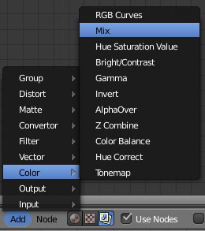Le node Mix
Avec lui, on peut mélanger deux images, une image et un rendu, un rendu et une texture… Un exemple vaut mieux qu'un long discours, je vous invite donc à regarder la figure suivante.
Incrustation d'un rendu dans une photo avec Mix
Pour finir, Compositing
Pour que les effets nodaux soient bien pris en compte lors du rendu, il faut être sûrs que le bouton Compositing soit activé dans le menu Render (voir figure suivante).
Activer le bouton Compositing
Il est normalement coché par défaut, mais il vaut mieux le savoir au cas où !
Les nodes peuvent bien évidemment être utilisés dans le cadre d'une animation, chaque rendu sera traité par les nodes.
En résumé
Avec les nodes, on s'éloigne un peu de la 3D pure et dure. Il s'agit ici d'améliorer le rendu après son calcul en ajoutant des effets ou en retouchant les couleurs de l'image.
Les nodes sont de petites boîtes avec des entrées et sorties que l'on va relier entre elles par des fils.
Parmi les nodes les plus utiles, Mix permet de mélanger deux images, Defocus de produire un flou focal, Vector un flou de mouvement… il y en a des dizaines, à vous de découvrir ceux qui vous seront les plus utiles.
Fatigué(e) de lire sur un écran ? Découvrez ce cours en livre.
L'UV Mapping part d'une idée simple : déplier à plat des modèles 3D pour ensuite travailler sur leurs textures plus facilement en 2D.
Cette technique de texturage peut paraître à première vue contraignante quand on a pris l'habitude d'utiliser seulement des textures procédurales, mais une fois que l'on a saisi le principe (couture - dépliage - peinture), elle se révèle véritablement puissante et efficace !
Pour nous accompagner tout au long de ce chapitre, j'ai décidé de ressortir une de mes vieilles modélisations… je vous présente Kubix, que vous pouvez admirer à la figure suivante !
Kubix va nous accompagner tout au long de ce chapitre
Oui, Kubix est rigolo, mais il lui manque un élément essentiel : un visage expressif !
Vous pouvez essayer de reproduire une forme similaire (ce n'est qu'un cube avec quelques extrusions et Loop Cut), ou prendre comme cobaye un cube ou une Suzanne pour tester l'UV Mapping, peu importe. Une fois que l'on a compris le principe, on peut l'appliquer à tous les objets.
Dans ce chapitre, je vais donc utiliser l'UV Mapping pour dessiner un visage à Kubix. Mais cela peut être utilisé dans des situations plus délicates, comme une texture pour un sol, un paysage, un visage humain réaliste, etc.
Vous avez sans doute déjà déplié un patron à l'école : il s'agissait de couper une feuille pour ensuite la replier afin de former un cube (si vous ne voyez pas de quoi je parle, c'est illustré aux figures suivante et suivante).
Voici un patron déplié : en 2DEt voici le cube formé grâce au patron : en 3D
On va faire exactement la même chose, mais en inversant les étapes : on part d'un modèle 3D que l'on va aplatir en 2D.
Tout le secret réside donc dans le placement des coutures qui vont nous permettre de déplier notre maillage. Il n'est pas toujours évident au premier coup d'œil de savoir où placer ces marques… cette vision de l'espace 3D s'améliore petit à petit, au fil des dépliages en tous genres.
Alors, comment on les place, ces coutures ?
Tout d'abord, il faut être en mode édition et en sélection par arête, comme indiqué à la figure suivante.
Choisir la sélection par arête
Sélectionnez celles que vous voulez marquer et appuyez sur Ctrl + E. Vous avez le choix entre Mark Seam, pour marquer une arête, ou Clear Seam qui, au contraire, permet d'affacer une marque de couture sur une arête sélectionnée.
Le tout est de placer ces coutures de façon pertinente tout en évitant les déformations. L'exemple de la Terre est parlant : pour déplier une sphère dans un rectangle, il y aura forcément des déformations (notamment sur les pôles). Essayez donc d'imaginer comment votre forme en 3D va réagir, comment elle s'étirerait si vous la plaquiez sur un plan.
Voyons un exemple avec Kubix. Pour les parallélépipèdes (ou autres formes approchantes), il y a une petite astuce pour les déplier correctement : on place des coutures afin de séparer le maillage en trois faces, un peu comme la ligne blanche d'une balle de tennis (voir la figure suivante).
Le placement des coutures pour le corps
Je m'occupe ensuite des bras de Kubix en les détachant du corps, comme l'illustre la figure suivante.
Séparez les bras du corps avec des coutures
Je continue sur la longueur du bras (voir figure suivante).
Toujours sur les bras, placez les coutures au niveau de la main
Il y aura une légère déformation au niveau des mains, mais cela restera acceptable et de toute façon, il n'est pas utile de chercher un dépliage parfait.
Je vais également détacher les jambes du reste du corps, en appliquant le même procédé qu'avec les bras (voir figures suivante, suivante et suivante).
Séparez également les jambes du reste du corpsPour finir, les coutures du piedKubix prêt à être déplié
Fatigué(e) de lire sur un écran ? Découvrez ce cours en livre.
Une fois toutes nos coutures placées, voyons voir ce que cela va donner au dépliage !
Sur un des côtés de votre vue 3D, faites apparaître une nouvelle fenêtre de type UV/Image Editor, comme indiqué à la figure suivante.
Ouvrez une fenêtre UV/Image Editor
Si un de vos rendus apparaît, fermez l'image en cliquant sur la croix. L'heure du dépliage a sonné ! Sélectionnez tous vos points dans la vue 3D et faites U > Unwrap.
Bien, c'est très bien d'avoir déplié notre Mesh, mais le but premier était de le texturer, n'est-ce pas ?
Ajoutez donc une image en allant sur New Image.
Si vous souhaitez avoir une texture plus grande (afin qu'elle ne soit pas pixelisée), préférez des puissances de 2, Blender les gère mieux : 512, 1024, 2048, 4096… Mais attention à ne pas aller trop haut non plus, votre ordinateur risquerait de ne pas le supporter !
Opération également importante, il faut passer la couche d'Alpha (c'est-à-dire la transparence) à 0 dans la palette de couleurs. Ceci fait, les zones où l'on n’appliquera pas de coloriage ou de texture seront recouvertes par le matériau de l'objet et non par du noir simple (voir figure suivante).
Mettre l'Alpha à 0
Je vous renvoie à la figure suivante pour le dépliage de Kubix.
Voici notre dépliage
Vous pouvez, dans cette fenêtre, sélectionner les points et utiliser les touches G, R et S afin de réarranger le dépliage comme vous le souhaitez.
Bien, maintenant que nous avons notre image toute noire prête à être coloriée, deux choix s'offrent à nous :
soit peindre directement dans Blender avec des outils de dessin assez sommaires ;
soit exporter la texture pour l'ouvrir ensuite dans un logiciel de graphisme 2D (comme The Gimp ou Photoshop).
Dans mon cas, il ne s'agit que de dessiner quelques traits sur mon personnage, je vais donc rester dans Blender. Mais si, au contraire, vous voulez travailler sérieusement sur une texture avec des outils avancés, il faudra nécessairement passer par un logiciel 2D.
Fatigué(e) de lire sur un écran ? Découvrez ce cours en livre.
Pour ceux qui veulent essayer le coloriage avec Blender, nous allons utiliser l'outil Image Painting situé dans le menu Image (voir figure suivante).
Activer Image Painting pour afficher les outils de coloriage
Appuyez ensuite sur la touche N pour dévoiler le volet de peinture, comme indiqué à la figure suivante.
Le volet de peinture avec la palette de couleurs et les réglages du pinceau
Vous pouvez choisir la couleur du pinceau, son diamètre (Radius) ainsi que la force d'appui (Strength).
À partir de maintenant, c'est le retour à la maternelle ! Peignez dans tous les sens sur toutes les faces de votre maillage, et vous pouvez même voir le résultat en temps réel dans la vue 3D avec le mode d'affichage Textured. Vous noterez cependant que cette fonction ralentit les performances de votre ordinateur (le coloriage sera sans doute saccadé avec de grandes textures), à utiliser avec modération donc !
Pour ma part, je suis resté minimaliste avec une petite tendance Picasso, ainsi que vous pouvez le voir à la figure suivante.
Le dépliage colorié… magnifique !
Avant de lancer le rendu, il va nous falloir configurer notre texture.
Dans le matériau de votre objet, ajoutez une texture de type Image et sélectionnez UV dans Mapping (voir figures suivante et suivante). Cela indiquera à Blender de bien caler la texture suivant le dépliage que l'on a réalisé tout à l'heure.
Dans le menu des textures, indiquez quelle image utiliserPour finir, choisissez UV dans l'onglet Mapping
Également, dans l'onglet Image Sampling, cochez Calculate, cela vous évitera des artefacts de transparence pas très jolis.
On est bon pour lancer le rendu (voir figure suivante) !
La petite frimousse de Kubix grâce à l'UVMapping
Voici aux figures suivante, suivante et suivante un exemple d'UV Mapping un peu plus complexe (mais pas tant que cela !) sur un modèle de char d’assaut. L'essentiel consiste encore une fois à bien placer les coutures afin que le plaquage de la texture se fasse le plus simplement possible. Ici, sur le corps de l'engin, l’exercice est relativement aisé étant donné les formes assez tranchées de l’objet.
Le dépliage de la caisse de l'enginPour les curieux, voici la texture seuleLe rendu est saisissant de réalisme grâce, en partie, à l'utilisation de l'UV Mapping
En résumé
Technique de texturage au processus parfois délicat, l'UV Mapping permet toutefois d'avoir un contrôle total sur le positionnement des textures.
Première étape, il faut placer les coutures sur les arêtes du maillage pour ensuite aplatir le patron.
Une fois déplié, on peut peindre directement sur une texture dans Blender ou bien la transférer dans un logiciel 2D pour disposer d'outils plus complets.
Fatigué(e) de lire sur un écran ? Découvrez ce cours en livre.
Vous croyiez avoir fait le tour des possibilités de Blender avec la réalisation d'images et d'animations ?
Détrompez-vous mes amis, car Blender ne nous a pas encore livré tous ses secrets. En effet, avec lui, on peut également créer des jeux vidéos !
Bien sûr, il ne s'agit pas ici d'aller concurrencer de grands jeux professionnels, mais plutôt de s'amuser à construire un petit divertissment avec tout ce que l'on a appris dans ce cours. En plus, vous verrez qu'il est possible, avec ce module de jeu, de générer des simulations physiques comme une tour de Kapla qui s'écroule avec fracas ou bien une chaîne de dominos qui s'effondre.
Ce chapitre n'est qu'un aperçu des possibilités qu'offre le Game Blender. La création de jeux vidéos avec Blender est un domaine si vaste qu'il faudrait sans doute un cours entier pour pouvoir tout vous expliquer !
Bien, pour commencer à créer notre jeu vidéo, il nous faut un élément essentiel : un moteur de jeu. Ce « moteur » va avoir pour fonction de calculer toute la physique du jeu, les collisions mais également les interactions entre les commandes et les actions des objets, les sons…
Si vous êtes un amateur de jeux vidéos, vous connaissez déjà sûrement quelques moteurs : « UnrealEngine », « CryENGINE », « Unity », « Source »…
Celui de Blender n'a pas réellement de nom, on l'appelle simplement « Game Blender ».
Pour l'activer, il faut remplacer Blender Render par Blender Game dans la barre des menus (voir la figure suivante).
Passer en mode Blender Game
Votre fenêtre des boutons a certainement changé (voir figure suivante).
Fini les options de rendu, place aux options du jeu !
Bon alors, quand est-ce qu'on le teste ce moteur de jeu ? Par où on commence ?
Et comme je vous comprends ! Mais pour avoir un jeu, même simple, il faut au moins placer quelques objets dans la scène.
Commençons par quelque chose de basique : ajoutez un plan et, au dessus, un cube en lévitation, comme illustré à la figure suivante.
Placez un cube en lévitation au-dessus de votre plan
Bien, maintenant place au test (voir figure suivante) ! Pour lancer le jeu, vous pouvez cliquer sur le bouton Play ou bien utiliser la touche P.
La première image de notre jeu
Bah, ce n'est pas très beau ! Et pourquoi rien ne bouge ?
Oui, c'est normal, nous verrons plus tard comment rendre les graphismes plus attractifs. Pour ce qui est de l'immobilité des objets, c'est également normal car nous n'avons pas assigné de propriété physique à notre cube ni à notre plan. Blender ne sait pas quel objet doit se comporter comme dans la réalité et quel objet doit rester immobile. Par défaut, comme c'est le cas ici, tous les objets sont statiques dans la scène.
Alors, comment donner un peu de vie à notre cube ?
Il va falloir sélectionner le cube et se rendre dans le menu Physics.
Nous allons maintenant dire au Game Blender que cet objet va être soumis aux lois de la physique : gravité, collision, etc.
Sélectionnons par exemple Rigid Body (« corps rigide » en français) dans le menu déroulant (voir figure suivante).
Choisissez les propriétés physiques du cube
Pour que les collisions se fassent correctement, cochez également Collision Bounds et laissez l'option Box.
Bien, maintenant, tentons notre chance à nouveau et appuyons sur P. Tadaam, le cube tombe et roule sur le sol avant de s'arrêter… comme dans la réalité !
Ça y est, vous commencez à percevoir tout le potentiel du Game Blender ? Rien ne vous empêche désormais de dupliquer le cube (avec les touches Shift + D) pour construire des formes (une petite maison, une tour gigantesque…) et tout faire s'écrouler.
Également, il y a toujours l'idée de la bonne vieille chaîne de dominos (voir figures suivante et suivante).
Placez votre chaîne de dominos en les dupliquant et laissez le premier légèrement penché……puis lancez le jeu pour admirer la chute.
Bon, maintenant que nous savons créer un environnement basique pour notre jeu, voyons comment l'embellir un poil.
Pour commencer, mettez-vous en mode d'affichage Textured avant de lancer le jeu. Cela nous permettra d'avoir une meilleure gestion des lumières et des textures dans le jeu (voir figure suivante).
Nos dominos en affichage Textured
Par contre, vous vous rendrez rapidement compte que certaines fonctions (comme le miroir) ne sont pas disponibles car trop gourmandes en ressources pour être calculées en temps réel. L'autre mauvaise nouvelle (décidément !), c'est que le Game Blender ne gère pas les textures procédurales. Si vous refusez de n'avoir que des matériaux unis sur vos objets, il faut donc utiliser l'UV Mapping. C'est assez contraignant (surtout si, comme moi, vous n'appréciez pas vraiment les joies de cette technique !) mais cela a pour avantage de vous forcer à vous appliquer sur le texturage du jeu.
Fatigué(e) de lire sur un écran ? Découvrez ce cours en livre.
Bon, voir des objets tomber dans un jeu, c'est rigolo un temps mais, niveau interactivité, on frôle le zéro !
Pour que le joueur puisse réellement interagir avec un objet, il va falloir se servir des briques logiques.
Ces petites briques vont nous permettre de lier des évènements entre eux. Par exemple, on va pouvoir signifier à Blender : « quand le joueur appuie sur A, la voiture doit avancer ».
Cela paraît simple, hein ? Eh bien, ça l'est tout autant dans Blender !
Pour afficher les briques logiques, il faut créer une nouvelle fenêtre du type Logic Editor (voir figure suivante).
Créer une fenêtre Logic Editor
Personnellement, je trouve très pratique de l'afficher à la place de la timeline, en dessous de la fenêtre 3D.
Découvrons maintenant les Sensors, Controllers et Actuators (voir figure suivante), que nous allons assembler pour former les briques logiques.
Les trois éléments d'une brique logique
Sensors : ce sont les capteurs qui vont déclencher une action. Ce peut être le fait que le joueur appuie sur une touche, la collision d'un objet…
Controllers : c'est lui qui va faire le lien entre le capteur (Sensor) et l'action (Actuator).
Actuators : c'est l'évènement lui-même, l'action. Cela peut être un mouvement (objet qui se déplace, tourne sur lui-même), un changement dans le jeu (recommencer, changer de scène…), ou un effet de style.
Gardons notre exemple d'une voiture qui avance tranquillement. Modélisez une voiture ou, si vous êtes pressé, prenez un simple cube.
Avec la voiture sélectionnée dans la fenêtre 3D, nous allons ajouter un Sensor de type Keyboard (voir figure suivante).
Choisir un Sensor dans le menu déroulant
Ensuite, il faut préciser quelle touche lui commandera d'avancer. Pour ma part, j'ai choisi la flèche directionnelle du haut (oui, très original).
Passons ensuite au Controller. C'est un lien logique qui va donc unir notre Sensor à notre Actuator. Il en existe plusieurs sortes : AND, OR, NOR, XOR… (voir figure suivante). Dans notre exemple, nous allons choisir AND (c'est le plus commun), il activera notre Actuator lorsque l'on appuie sur la touche Flèche haut.
Liste des Controllers
Et pour finir, l'Actuator !
Il en existe également moult sortes. Pour déplacer un objet, c'est Motion (« mouvement », en français) qu'il faudra choisir (voir figure suivante).
Pour mettre un objet en mouvement, choisir l'option Motion
On définit ensuite quelle sorte de mouvement l'objet va subir :
Loc : translation simple ;
Rot : rotation simple ;
Force : l'objet est poussé par une force ;
Torque : identique à Force sauf qu'ici, l'objet est mis en rotation.
Ce qui correspond sans doute le plus à l'accélération d'une voiture est Force. Mettez une valeur de 150 (ou -150 suivant le sens de votre engin) et, pour finir le tout, reliez comme avec les nodes (voir figure suivante).
Reliez vos Sensors, Controllers et Actuators
Vous voyez qu'avec quelques briques logiques, vous pouvez permettre au joueur de contrôler une voiture, un bateau, un avion…
Fatigué(e) de lire sur un écran ? Découvrez ce cours en livre.
Ces quatre règles d'or vous permettront d'éviter les erreurs les plus communes.
Règle 1 - Économisez vos vertices
Lorsque l'on crée un jeu vidéo, il est important de garder en tête que l'ordinateur va devoir faire les calculs en temps réel, c'est-à-dire générer au moins 30 images par seconde pour garder un affichage fluide !
Pour lui alléger la tâche, il est donc important de conserver des maillages aussi légers que possible. Oubliez donc le SubSurf, les détails à gogo… tout doit être en low poly (peu de polygones).
Règle 2 - Soignez vos textures
Pour pallier la géométrie forcément un peu pauvre de vos modèles, il va falloir s'appliquer sur les textures. Comme on l'a vu, nous sommes obligés d'utiliser l'UV Mapping dans le Game Blender. Ne laissez donc pas vos objets d'une couleur unie, ce serait dommage ! Même pour le sol, les petits objets, prenez le temps de déplier et de colorier ou d'appliquer une texture fournie, ce sont les détails qui font l'ambiance d'un jeu.
Règle 3 - Ne voyez pas trop grand
L'erreur la plus fréquente des débutants est de commencer par un projet trop gros pour être réalisable tout seul et sans expérience professionnelle.
À titre exemple, le jeu Yo ! Frankie, qui est sans doute le jeu le plus abouti réalisé avec Blender, a demandé plus de huit mois de travail à une équipe d'une dizaine de graphistes et de développeurs professionnels.
Attention : loin de moi l'idée de vouloir vous décourager si vous souhaitez vous engager dans la création d'un jeu un peu complexe. Seulement pour en venir à bout, il vous faudra un planning précis des tâches à réaliser, une organisation sans faille ainsi qu'une bonne dose de motivation !
Règle 4 - Faites appel à votre créativité
Plus qu'un environnement techniquement irréprochable, les joueurs attendent souvent d'un jeu qu'il soit plaisant et original. Pour preuve, tous les jeux des années 1990 qui ont encore leurs fans (Worms, Half-Life, Mario, Diablo…), tant l'univers et la jouabilité de ces jeux sont indémodables.
Je me souviens encore d'un de mes premiers jeux avec Blender, créé en à peine une heure : quatre joueurs, placés aux coins d'un plan, avaient chacun le contrôle d'une petite voiture. Chaque joueur avait pour mission de protéger sa pile de petits cubes tout en devant détruire celles des voisins. Les graphismes avaient beau rappeler les débuts de l'informatique, ce jeu était extrêmement amusant à jouer à plusieurs, les parties se prolongeant souvent jusque tard le soir !
Généralement, les gens aiment bien casser des objets. Avec le moteur physique de Blender, c'est illimité, profitez-en !
En résumé
Le Game Blender est un module qui rend possible la création de jeux directement dans Blender.
Le moteur de jeu est le premier élément de ce module, c'est lui qui a la charge de calculer la physique du jeu. En assignant des objets en Rigid Body, ils vont réagir comme dans la réalité en étant soumis à la gravité. Chutes et collisions garanties !
Pour donner un peu d'interactivité à la scène, on passe par les briques logiques. Il faut assembler les Sensors, Controllers et Actuators pour contrôler un objet, démarrer le jeu, ajouter un effet…
Fatigué(e) de lire sur un écran ? Découvrez ce cours en livre.
Je parie que vous êtes un peu restés sur votre faim lors du chapitre précédent ! Moi aussi, c'est pourquoi j'ai décidé d'approfondir un peu plus les possibilités de création de jeux vidéos, mais cette fois sous la forme d'un bon petit TP.
Nous allons partir sur un projet de jeu de combat : deux joueurs s'affrontent en contrôlant de petits engins lanceurs de projectiles, le but étant de faire tomber l'adversaire dans le vide.
Comme à chaque fois, nous allons commencer par la modélisation ! Le but ici est de construire un petit char au design simple, en conservant un maillage aussi léger que possible. Bien sûr, ce modèle ce sera le même pour les deux joueurs, pas de favoritisme !
Voici à la figure suivante mon prototype.
Mon prototype de char de combat
Une fois la modélisation terminée, passez aux réglages physiques et briques logiques. Comme nous l'avons étudié dans le dernier chapitre, ajoutez des contrôles à l'engin afin qu'il puisse avancer, reculer et tourner (voir figure suivante).
Configurez vos Sensors, Controllers et Actuators
Mettez les valeurs qui vous conviennent, en essayant d'obtenir un pilotage assez nerveux sans qu'il ne soit trop facile de contrôler l'engin.
Nous voilà avec un petit char prêt à aller au combat, mais qui reste bien inoffensif…
Justement, comment lui faire tirer des petits obus ?
Nous allons commencer par ajouter un Empty au niveau du trou de sortie du canon (pas trop près non plus), ce sera le point de départ des projectiles (voir figure suivante).
Placez votre Empty à la sortie du canon
Ensuite, nous allons configurer cet Empty pour qu'il lance des projectiles en forme de sphère. On commence par créer un modèle de ces balles avec une Icosphere réduite grâce à la touche S et lissée avec un petit Smooth, comme à la figure suivante.
Créez votre obus à partir d'une Icosphere
On s'occupe ensuite des propriétés physiques du projectile : assignons-lui le type Rigid Body afin qu'il soit sensible à l'environnement et à la gravité, puis augmentons légèrement sa masse afin qu'il puisse bousculer les chars (voir figure suivante).
Les réglages physiques du projectile
Bien sûr, tous les paramètres que je vous montre ici ne sont que des exemples, vous pouvez les modifier suivant vos souhaits.
Ensuite, revenez à l'Empty et ajoutez-lui un Sensor de type Keyboard (voir figure suivante). Le paramètre correspond à la touche avec laquelle vous souhaitez tirer (dans mon cas, la barre d'espace).
Ajouter un Sensor Keyboard permet de définir la touche de tir
Connectez-le à un Controller « And » et à un Actuator de type Edit Object (voir figure suivante).
Choisissez l'Actuator Edit object…
Cet Actuator va nous permettre d'ajouter des objets à volonté, lorsque nous appuierons sur la touche.
Reste à déterminer la durée de vie du projectile (en frames par seconde) ainsi que sa vitesse, et à sélectionner l'objet qui va être lancé (ici l'Icosphere). Le détail de ces réglages est visible à la figure suivante.
…puis configurez-le
Pour finir, passez notre modèle de projectile Icosphere sur le calque 2, de sorte qu'il n’apparaisse pas dans le jeu.
Parentez votre Empty au tank (Ctrl + P) et voilà à la figure suivante notre char armé pour la bataille !
Notre char peut maintenant attaquer !
Dupliquez maintenant le char pour obtenir son alter ego ennemi. Changez lui son matériau, ainsi que ses touches de contrôle.
Fatigué(e) de lire sur un écran ? Découvrez ce cours en livre.
Un plan seul c'est bien, un terrain construit c'est mieux ! Il nous faut évidemment construire une petite arène où nos chars vont pouvoir évoluer et se battre.
Commencez par chercher une texture pour le sol : béton, terre, herbe, ce que vous voulez !
Prenez ensuite quelques minutes pour appliquer votre texture sur le sol en UV Mapping (sur un plan, cela ne devrait pas trop vous poser de problème). Placez quelques structures qui serviront d'obstacles, afin que les joueurs puissent se mettre à couvert. Vous pouvez prendre exemple sur la figure suivante.
Placez quelques obstacles
Enfin, agrémentez le décor de quelques accessoires, comme des caisses, des barrières ou des barils, comme illustré aux figures suivante et suivante.
Disposez des caisses……et des barrières !
Sur ces petits objets, n'oubliez pas d'aller cocher Rigid Body dans le menu Physics, afin que les projectiles les percutent ou que les engins les fassent tomber sur leur passage. Pour corser un peu les choses, on peut également augmenter un peu leur masse, ce qui aura pour effet de déstabiliser les véhicules lorsqu'il tenteront de passer en force (voir figure suivante) !
Augmenter la masse des obstacles
Fatigué(e) de lire sur un écran ? Découvrez ce cours en livre.
Même si le développement de notre jeu vidéo pourrait s'arrêter là, nous allons pousser l'aventure un peu plus loin et construire des menus.
Des menus, comment cela ?
Par « menus », j'entends des sortes de transitions, des messages à l’écran lorsqu’une action est terminée (début du jeu, fin de partie). Même s'il ne servent pas à grand chose, le simple fait d'avoir un écran d'accueil avant le jeu permet à l'utilisateur de rentrer en douceur dans l'univers du divertissement. Et puis, cela fait plus pro, un jeu avec des menus, non ?
Pour la fabrication des menus, le principe est assez simple : nous allons créer plusieurs scènes (pour l'instant nous en avons déjà une où se trouve notre jeu) puis passer de l'une à l'autre en fonction des actions des joueurs.
Votre liste de scènes se trouve en haut de la fenêtre 3D, dans la barre des menus, comme vous pouvez le voir à la figure suivante.
La liste des scènes
Pour en ajouter, cliquez sur le petit plus à droite (voir figure suivante).
Ajouter une nouvelle scène en cliquant sur le +
Blender nous demande alors si nous voulons faire une copie de la scène existante, lier les objets entre les différentes scènes ou bien partir de zéro. Choisissez New : on se retrouve alors face à une scène entièrement vide.
Intégrez une caméra ainsi qu'un texte de bienvenue, comme sur la figure suivante.
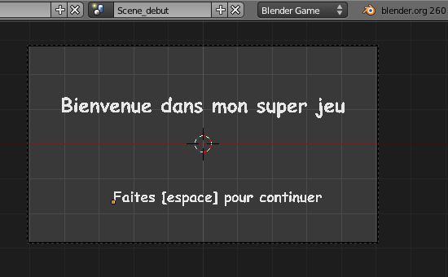Ajoutez un texte de bienvenue
Pour charger la scène du jeu à l'appui d'une touche, on va encore une fois utiliser les briques logiques ! Sélectionnez la caméra et ajoutez-lui la panoplie habituelle : Sensor, Controller et Actuator.
Le Sensor est de type Keyboard, puisque l'on veut faire commencer le jeu à l'appui d'une touche.
Pour changer de scène en cours de jeu, il faut sélectionner l'Actuator de type… Scene, vous avez bien deviné ! Sélectionnez ensuite le paramètre Set Scene et choisissez celle qui contient le jeu (voir figure suivante).
Cet Actuator permet le changement de scène en cours de jeu
Et voilà ! Vous disposez maintenant d'un magnifique écran d’accueil.
Nous allons maintenant créer une autre scène, pour afficher un message de fin de partie et féliciter le joueur gagnant.
Ah, mais là, cela va être plus compliqué ! Comment va-t-on pouvoir changer de scène quand un joueur gagne ?
Oui, on va devoir ruser ! En fait, on va détecter quand un char tombe, puis l'identifier grâce à son matériau pour savoir quel joueur a gagné.
Cela vous paraît un peu alambiqué ? C'est en fait très simple !
Ajoutez un plan très large sous le terrain dans la Scene_Jeu, comme un filet qui retiendrait la chute des objets (voir figure suivante).
Placez le plan agrandi en dessous de l'arène
Tout de suite, ajoutez-lui un matériau avec un Alpha à 0, afin qu'il soit invisible lors du jeu (voir figure suivante).
Passez l'Alpha du plan à 0
Ce plan va nous servir de détecteur pour savoir quel est le premier char qui est tombé hors de l'arène. Dans la fenêtre des briques logiques, ajoutez-lui un Sensor de type Touch, en précisant le matériau d'un des deux engins (voir figure suivante).
Ajoutez un Sensor de type Touch
Ce capteur va s'activer dès que le matériau rouge (du char rouge donc) le touchera, autrement dit quand le joueur rouge aura perdu (et le joueur bleu aura gagné, vous suivez toujours ?) !
Créez une autre scène, avec un petit texte de victoire -- vous pouvez prendre exemple sur la figure suivante.
Un petit texte pour féliciter le gagnant !
Revenez au plan détecteur, ajoutez-lui un Controller et un Actuator de type Scene, comme à la figure suivante.
Cet Actuator fera basculer la scène en cours lorsque le char rouge tombe
Faites la même chose pour le cas où ce serait le joueur bleu qui verrait son engin tomber en premier (voir figures suivante, suivante et suivante).
Ajoutez une autre brique logique pour changer de scène en cas de victoire du joueur rougeLes félicitations pour le joueur rouge !La liste de toutes les scènes que contient notre jeu
Avec différentes scènes, vous pouvez bien entendu créer des menus d’accueil et de fin de partie comme nous venons de le faire, mais cette technique peut également être utilisée pour changer de niveau, choisir une carte, définir le nombre de joueurs…
Si vous bloquez sur un passage, voici le lien pour télécharger le fichier .blend du petit jeu terminé :
Rendre une scène réaliste, c'est prêter attention à tous les aspects de votre création : modélisation, texturage, éclairage et mise en scène. Dans ce chapitre, vous allez découvrir toutes les astuces et les conseils d'un vieux briscard de la 3D pour rendre une scène réaliste !
Ce que je vous propose, maintenant que vous avez Blender bien en main, c'est de créer de votre côté une image (ou une animation) en parallèle à la lecture de ce chapitre. De cette manière, vous mettrez tout de suite en pratique ce que vous venez d'apprendre. Je vous conseille également de commencer par une scène intéressante mais accessible techniquement. Le meilleur exemple est sans doute la création d'une pièce d'intérieur (pourquoi pas votre chambre ou votre salon).
Avant d'ouvrir Blender et d'attaquer tout de suite la modélisation de la scène, il va falloir réfléchir un instant.
Réfléchir à quoi ?
À votre scène, pardi ! Et en premier lieu, à ce qui va la remplir.
Regardez autour de vous et remarquez les innombrables petits (ou grands) objets qui occupent l'espace. Même si elle ne saute pas aux yeux, la présence de détails est cruciale si vous voulez que votre image fasse vraie, authentique. Trop d’infographistes amateurs créent seulement quelques objets entourés de murs. Dans ce cas, on ressent souvent un impression de vide ou d'inachevé en regardant ces images.
Un autre reproche que l'on peut faire aux images numériques, c'est de donner la sensation que les objets sont trop carrés et trop propres. Eh oui, à force d'utiliser des figures géométriques dans nos logiciels, on en oublie parfois que le monde est rempli de formes inégales ! Même un mur et un sol, qui à première vue peuvent paraître tout à fait plats, sont en fait souvent ondulés, bosselés, légèrement tachés et un peu poussiéreux dans les coins. N'hésitez pas alors à triturer un peu le maillage de vos objets, en y ajoutant des irrégularités, des imperfections… Pour ce faire, vous pouvez utiliser la fonction Subdivide Fractal (de façon modérée) sur certaines faces, ou bien placer ici et là des coupes sur vos maillages avec le Loop Cut.
Une fois que vous avez déterminé le sujet de votre création et dressé la liste (à peu près) des objets qui y seront présents, il faut penser à la mise en scène, au cadrage de votre image.
Et là, il y a une méthode particulière pour obtenir un bon résultat ?
Malheureusement non, pas de méthode miracle pour un bon cadrage ! Néanmoins il existe une règle assez connue en photographie : la « règle des tiers » (voir figure suivante).
Une image quadrillée selon la règle des tiers
Selon cette règle, il faut couper votre image en neuf rectangles pour qu'elle soit harmonieusement divisée par quatre lignes imaginaires et que les sujets principaux de votre scène soient à l'intersection de ces lignes. Pour mettre en valeur un objet, il ne faut donc pas le situer au centre comme on aurait pu le penser, mais le décaler légèrement sur la droite ou la gauche, cela rend l'illustration plus agréable.
Si vous avez un doute ou peu d'inspiration pour le cadrage, pensez donc à appliquer à cette règle !
Obtenir un bon cadrage, c'est aussi trouver un emplacement et un angle intéressants pour la caméra. Vous n'êtes pas obligés de la garder en hauteur et en contre-plongée, comme elle l'est dans la scène d'ouverture de Blender. Si vous trouvez un angle intéressant en vous baladant dans le vue 3D, vous pouvez utiliser le raccourci Ctrl + Alt + 0 pour positionner la caméra au niveau de la vue actuelle.
Fatigué(e) de lire sur un écran ? Découvrez ce cours en livre.
De ce côté, il n'y a pas vraiment de secret ou de règle bien précise : modéliser rapidement et efficacement vient tout simplement avec la pratique.
Si vous êtes partis sur un décor d'intérieur comme je vous l'ai conseillé, le ModifierBevel vous sera indispensable pour la modélisation de votre scène.
Ah bon ? Et qu'est-ce qu'il fait celui-là ?
Il va casser l'aspect trop dur des arêtes saillantes de vos meshes, comme par exemple à la figure suivante où le coin de la table est très droit.
Les arêtes de notre table sont trop saillantes
Regardez de plus près les coins de votre bureau ou d'une table : l'angle est-il parfaitement droit ? Je parie que non ! Les angles droits marqués sont peu présents dans nos objets du quotidien et pourtant, en 3D, on retrouve souvent ces formes après avoir exécuté des extrusions…
D'accord, alors comment on s'en débarrasse ?
En activant Bevel dans le menu des Modifiers : un chanfrein va alors s'appliquer sur l'ensemble des arêtes de votre maillage, comme vous pouvez l'observer à la figure suivante.
L'outil Bevel permet de chanfreiner les angles trop saillants
Vous pouvez ajuster l'intensité du chanfrein avec le paramètre Width (voir figure suivante). Bien sûr, cela sert surtout sur des objets aux contours droits (mobilier, pièces mécaniques…) ; sur des formes plus rondes, l'intérêt est limité.
Réglez l'intensité du chanfrein en changeant la valeur de Width
Un autre Modifier qui pourra vous être utile lors de la modélisation d'objets en tous genres est Solidify.
Vous vous souvenez du verre que l'on avait créé avec Spin ?
Eh bien, en couplant cette méthode avec Solidify, on obtient en quelques clics un verre (ou tout autre objet de cuisine) dont on peut régler l'épaisseur très facilement.
Exemple avec un bol :
Je modélise son profil rapidement, comme nous l'avons fait avec le verre (voir figure suivante).
Un profil de bol
Ensuite, je fais tourner la forme avec Spin et j’ajoute un SubSurf et un Smooth pour bien lisser l'objet, comme à la figure suivante.
Ajouter un SubSurf et un Smooth pour le lissage
C'est ensuite que le ModifierSolidify intervient (voir figure suivante) !
Vous pouvez régler l’épaisseur avec le paramètre Thickness
À vous maintenant les plats, assiettes et récipients en tous genres !
Fatigué(e) de lire sur un écran ? Découvrez ce cours en livre.
Pour rendre crédible l’aspect de vos objets, il faut immanquablement soigner les textures de vos matériaux. Bien sûr, cela requiert de régler correctement les shaders de ces matériaux. Trop souvent, je vois sur les forums 3D des images de débutants où tous les matériaux font « plastique ». Pour éviter ce défaut récurrent, n’hésitez pas à ajouter un peu de transparence ou un peu de miroir sur certains de vos matériaux (un sol par exemple), mais sans en abuser !
En passant par l'UV Mapping et un logiciel 2D, vous pouvez ajouter toutes sortes de détails qui agrémenteront vos objets d'une dose de réalisme : traces laissées par des verres sur une table, taches sur un mur, traces d'usure sur du métal, rouille, etc.
Et on les trouve où, ces textures ?
En plus des quelques liens que je vous ai donnés tout au long du cours, voici une liste assez complète de sites Internet qui proposent gratuitement des textures de qualité.
Et souvenez-vous, n'utilisez pas les textures seulement pour la couleur de vos objets ! Si vous n'avez qu'une Diffuse Map, vous pouvez, en bidouillant un peu, générer une Bump Map en quelques clics. Voici comment procéder, avec en exemple une magnifique texture de briques (voir figure suivante).
Une texture de briques
Ouvrez cette Diffuse Map dans un logiciel 2D quelconque (The Gimp ou Paint.NET feront très bien l'affaire). Passez votre image en noir et blanc, augmentez légèrement le contraste puis inversez les couleurs. Observez la figure suivante : vous devez obtenir quelque chose dans ce goût-là.
Une Diffuse Map transformée en texture de relief
Ajoutez cette texture à un matériau dans le canal Normal, et voici le résulat à la figure suivante.
La prévisualisation du matériau
Résultat plutôt satisfaisant, non ?
Vous pouvez passer comme cela toutes vos textures à la moulinette pour obtenir des Bump Maps très facilement.
Fatigué(e) de lire sur un écran ? Découvrez ce cours en livre.
Pour savoir comment éclairer votre scène, essayez d'abord d’identifier quelles seraient les sources de lumière dans la réalité. Si vous avez choisi de recréer une pièce dans un appartement, il y a sûrement une ou plusieurs fenêtres. Prévoyez donc une lampe de type Sun ou Area qui diffuserait une lumière assez forte à partir de cette zone. Ensuite viennent toutes les autres lumières artificielles : lampes de chevet, halogènes, écrans de téléviseur ou d'ordinateur. Même si leur éclairage est secondaire, appliquez-vous à placer une faible source de lumière à partir de leur position, par exemple une Lamp.
Une fois que vous avez placé tous vos luminaires, activez l’Ambient Occlusion et faites un rendu de test. Vous noterez certainement quelques zones où l'ombre est trop prononcée. Si c'est le cas, vous pouvez bidouiller les paramètres de l'AO ou placer ici et là quelques Lamp de faible intensité lumineuse qui déboucheront ces ombres.
Pensez aussi à jouer sur la couleur des lampes pour donner une ambiance particulière à une image, ou pour coller à un moment particulier : couleurs froides (bleu/vert) en hiver, teintes chaudes pour l'été ou un lever de soleil, un peu de jaune pour une vieille ampoule à filament…
En affinant peu à peu votre éclairage, il vous sera peut-être nécessaire de revenir sur le réglage de certains matériaux qui brilleraient trop ou seraient devenus trop clairs.
Éclairage Studio
Lorsque vous avez modélisé un simple objet que vous voulez mettre en valeur, je vous en conjure, ne le mettez pas dans un coin d'un pièce : comme nous l'avons vu, cela « casse » le regard du lecteur et l'empêche d'admirer votre objet. Il vaut mieux, dans ce cas, utiliser un plan recourbé avec la mise en place d'un éclairage studio.
Prenons par exemple cet assortiment de deux chaises et d'une table texturée (voir figure suivante).
La table et les chaises qui serviront d'exemple pour l'éclairage studio
Éloignez légèrement votre caméra et augmentez un peu sa focale (disons vers 50 mm) afin que les objets rentrent pile dans le cadre.
Bien, maintenant, ajoutez un plan qui servira de sol. Là, deux solutions : soit on agrandit énormément le plan pour qu'il couvre tout le cadre (ce qui n'est pas toujours possible, lorsque la caméra est orientée de façon horizontale par exemple), soit on triche un peu en le remontant vers une de ses extrémités. Cette dernière méthode est sans doute la plus pratique (voir figure suivante).
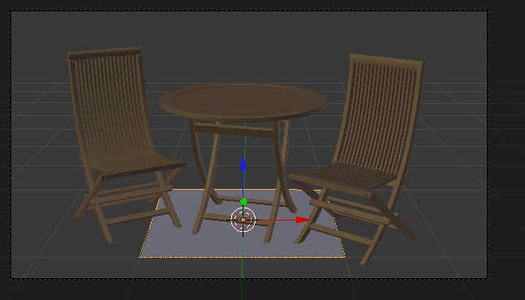Ajouter un plan juste en dessous des objets
À l'aide d'extrusions ou de Loop Cuts, prenez une extrémité du plan et faites-la monter de manière très progressive, comme indiqué à la figure suivante.
Recourber le plan de sorte qu'il remplisse le cadrage
Ensuite, vous pouvez ajoutez un petit SubSurf et un Smooth pour compléter le résultat (voir figure suivante) !
Lisssage avec la méthode habituelle : SubSurf et Smooth
Maintenant, à l'éclairage !
Nous allons utiliser deux types de lampes. Tout d'abord une Hemi, placée en hauteur et orientée verticalement, qui diffusera une lumière douce dans toute la scène. Réduisez fortement l'énergie de ce luminaire (en dessous de 0.1), il a tendance à écraser un peu le relief des objets lorsqu'il est trop puissant. Ensuite un Sun, qui sera la source principale de lumière de la scène et projettera les ombres. Encore une fois, réduisez quelque peu l'intensité de cette lampe, à 0.7 ou 0.8 par exemple. En plus de ces deux lampes, n’hésitez pas à activer l'Ambient Occlusion dans le menu World (voir figures suivante et suivante).
La disposition du Sun et de l'HemiLe résultat de notre éclairage studio : plutôt classe !
Pour finir le tout, si vous avez un ou plusieurs objets miroirs dans votre scène, vous pouvez ajoutez des plans très blancs, en suspension, qui serviront de réflecteurs pour ces surfaces, comme vous pouvez le voir aux figures suivante et suivante.
Placer des rectangles blancs autour de la scèneIls se reflètent dans la boule, comme si la scène se trouvait dans un studio de photographe
Et pour finir…
Une fois que la scène est modélisée, texturée et éclairée, il reste d'autres choses à faire ?
Eh oui, ajouter des effets ! Profondeur de champ, correction de couleur, vignettage, lens flare… tous ces petits plus qui feront que votre image ressemblera à une photo prise sur le terrain.
Dans la plupart des cas, vous pouvez reproduire ces effets grâce à l'éditeur de nodes que nous avons abordé dans un chapitre précédent. Utilisez-le sans hésitation !
En résumé
Avant de commencer une scène complexe, prenez soin de mettre sur papier les éléments importants : sujet, ambiance, objets principaux, idées de cadrage…
Utilisez des textures et retouchez vos maillages pour vous débarrasser de l'impression de parfaite propreté inhérente aux images de synthèse.
Placez vos lampes dans la scène en vous basant sur les sources d'éclairage réelles. Au besoin, ajoutez quelques luminaires virtuels afin d'homogénéiser la clarté de votre image.
Enfin, n'oubliez pas de retoucher légèrement votre rendu avec les nodes, ou sur un logiciel 2D si vous êtes plus à l'aise avec. Une augmentation du contraste ou une modification légère des couleurs peuvent sublimer votre rendu !
Fatigué(e) de lire sur un écran ? Découvrez ce cours en livre.
Pendant l'été 2011, une nouvelle a secoué le petit monde de Blender : l'arrivée surprise d'un nouveau moteur de rendu intégré, baptisé Cycles. Bien qu'encore à un stade de développement assez jeune, Cycles a impressionné en montrant qu'il pouvait d'ores et déjà produire des résultats éblouissants, et cela en étant plus facile d’utilisation que le moteur classique de rendu de Blender.
Alors, que nous réserve vraiment Cycles ? Va-t-il supplanter le Blender Render ? Comment l'utiliser ?
Toutes les réponses sont dans ce chapitre !
À l'heure où j'écris ces lignes, Cycles n'est pas encore intégré à une version stable de Blender. Il se peut donc que certains menus ou paramètres soient légèrement différents dans votre version.
Même si le moteur interne de Blender est capable de produire de belles images, il faut avouer que c'est souvent une certaine prise de tête (réglage des matériaux, mise en place de l'éclairage…). Avec Cycles, fini la galère ! En quelques clics, on peut obtenir un rendu d'un réalisme époustouflant. Exemple avec cette trompette (voir figure suivante) : un matériau doré en deux clics, une Light Probe… et c'est tout ! Le rendu est intéressant vu le faible nombre de réglages.
Un rendu de trompette réaliste avec Cycles
Mais alors le moteur interne de Blender ne sert plus à rien ? Et tout ce qu'on a appris alors ?!
Non, rassurez-vous, le moteur interne de Blender a encore de beaux jours devant lui, et ce pour plusieurs raisons :
Cycles n'est pas tout à fait adapté au rendu d'animations, vous allez comprendre pourquoi dans le paragraphe suivant.
Trop de réalisme tue le style ! Avec Cycles, il est beaucoup plus difficile d'obtenir un effet cartoon, par exemple.
Cycles est encore très incomplet : de l'aveu même des développeurs, il ne sera terminé que d'ici un ou deux ans.
De toute façon, toutes les techniques fondamentales que vous avez apprises au cours de ce cours restent les mêmes (modélisation, mise en place d'un éclairage, UV Mapping…).
Bon, avant de commencer nos petites expérimentations avec Cycles, nous allons prendre le temps de faire une petite pause théorique, nécessaire pour bien comprendre son fonctionnement. Sachez que Cycles ne se comporte pas de la même manière que le moteur interne de Blender, et cela peut être très déroutant au début ! Tout d'abord, Cycles est un moteur de rendu dit « physiquement correct ». Cela veut dire que ses algorithmes de fonctionnement sont directement basés sur les lois de l'optique et de la physique qui régissent notre monde : pas de triche, on a un rendu parfaitement fidèle à la réalité ! Mais ce n'est pas tout : Cycles est aussi ce que l'on appelle un moteur de rendu « unbiaised ». Qu'est-ce que cela signifie ? Eh bien, le calcul du rendu ne finit jamais !
Comment cela, le rendu ne se finit jamais ?
En fait, et vous allez le voir par vous-mêmes, Cycles produit une image, au début très bruitée, qui va peu à peu s’affiner. Et c'est à nous d'arrêter le rendu quand nous le souhaitons (après 10 secondes, 5 minutes, 2 heures…), quand nous estimons que la qualité de l’image est satisfaisante. Vous comprenez maintenant pourquoi je vous avais dit qu'il n'était pas tout à fait taillé pour l'animation : dans le cas d'images qui se succèdent rapidement, la présence de petites taches de bruit peut être très déplaisante à l’œil.
Enfin, dernier avantage de Cycles et non des moindres : il est très rapide ! En fait, il calcule le rendu d'une manière assez originale : au lieu d'utiliser le processeur de votre ordinateur ce calcul (comme le fait le Blender Render), il va mettre à contribution la carte graphique, qui est beaucoup, beaucoup plus rapide lorsqu’il s'agit de traiter des opérations graphiques. Bref, on attend moins longtemps !
Fatigué(e) de lire sur un écran ? Découvrez ce cours en livre.
Après le blabla, l'action ! Nous allons rendre notre première scène en utilisant Cycles…
Ajoutez un sol et quelques objets dans la vue 3D, puis choisissez Cycles dans la barre des menus, en haut de l'interface, comme indiqué à la figure suivante.
Activez Cycles dans la barre des menus
Automatiquement, le menu relatif au rendu a changé d'apparence avec, notamment, l'apparition de l'onglet Integrator (voir figure suivante).
Les nouveaux onglets dans le menu Render
Mais ce n'est pas tout !
Essayez d'ajouter un matériau à vos objets et vous verrez que le système de gestion des matériaux s'est également transformé (voir figure suivante).
Le menu des matériaux a également évolué
Eh oui ! Exit les lourds réglages de shaders qui nous donnaient des cheveux blancs… avec Cycles, la sélection des matériaux devient un jeu d'enfant ! Vous disposez d'une liste de matériaux de base, comme vous pouvez le voir à la figure suivante.
Le panel des matériaux pré-réglés
Les plus courants à utiliser sont sans doute Diffuse (surface non réfléchissante), Glossy pour les métaux et Glass… nous reviendrons sur eux un peu plus loin dans ce chapitre. Pour l'instant, associez quelques matériaux au hasard à vos objets.
Ah ! Mais avec tout cela, j'ai quasiment oublié de vous parler des options de rendu ! C'est tout le problème avec Cycles : il y a tellement de choses à dire ! Rendez-vous dans le panneau Integrator et mettez la valeur Render à 5000, cela aura pour effet de ne pas arrêter le calcul après seulement 10 passes…
Ensuite, appuyez sur la touche F12 comme vous en avez l'habitude : cela lancera le calcul (voir figure suivante).
Un premier test de rendu
Ça y est, voici votre rendu avec Cycles !
En haut à gauche du rendu, vous pouvez voir le nombre de samples qui augmente et, dans le même temps, la qualité de l'image qui s’affine : les ombres deviennent moins granuleuses, les réflexions plus nettes…
Plus ce nombre de samples est élevé, meilleure sera la qualité de l'image. Pour une scène simple, une valeur de 1 000 ou 1 500 samples est suffisante pour arriver à un rendu propre. Par contre, si vous avez une scène plus complexe, avec des jeux de réflexions, des matières transparentes, il vaut mieux prévoir le calcul de plusieurs milliers de samples. Avec 5000 comme on l'a tapé, vous êtes normalement tranquilles ! Seulement, il va falloir être patient…
Justement, Cycles n'est pas censé être très rapide ? Pour l'instant c'est plutôt moyen…
Oui, mais pour cela, il va falloir dire à Cycles d'utiliser votre carte graphique au lieu du processeur, souvenez-vous. Rendez-vous dans le menu et, à la place de CPU, choisissez GPU, ainsi que l'illustre la figure suivante.
L'utilisation de la Graphics Proccessing Unit accéléra la vitesse de rendu
Un deuxième choix s'affiche alors (voir figure suivante).
CUDA pour les possesseurs de cartes GeForce, OpenCl pour les autres
CUDA et OpenCL sont les deux technologies qui permettent de tirer parti des unités de calcul de la carte graphique de l'ordinateur. Pour faire simple : si vous possédez une carte NVIDIA choisissez CUDA, sinon OpenCL.
Maintenant, tentez à nouveau un rendu…
Vous pouvez constater la différence : le calcul est quasiment dix fois plus rapide !
Autre nouveauté qu'apporte Cycles, vous pouvez lancer un rendu directement dans la fenêtre 3D en choisissant l'affichage Rendered (voir figure suivante).
Un nouvel affichage dans la vue 3D : Rendered pour un aperçu du rendu
Vous pouvez donc changer un matériau et voir le changement en direct, le rendu se rafraîchira automatiquement ! Il y a un petit bouton bien utile en bas de la fenêtre 3D, qui vous permettra de mettre en pause le rendu (voir figure suivante).
Stoppez provisoirement le calcul avec ce petit bouton
Fatigué(e) de lire sur un écran ? Découvrez ce cours en livre.
Avec Cycles, fini donc les shaders spéculaires et diffus, les développeurs ont pensé à nous en intégrant des matériaux-types que l'on va pouvoir utiliser comme base de travail. Parmi ceux-ci se trouve Diffuse, un matériau simple, non réfléchissant, non transparent, comme vous pouvez le constater à la figure suivante.
Le matériau Diffuse
Il y a également Glossy, très utile pour tous les métaux ou toutes les matières réfléchissantes (voir figure suivante) !
Le matériau Glossy
Pour ce matériau, le paramètre Roughness vous permettra de régler la rugosité de la matière. Plus elle est élevée, plus les réflexions sur l'objet seront floues.
Testez également le matériau Glass, très efficace pour simuler les verres, ainsi que vous pouvez le constater à la figure suivante.
Suzanne transparente avec Glass
On retrouve l'indice de réfraction (IOR) que l'on avait déjà dans le système des matériaux du Blender Render (voir figure suivante).
Le matériau Glass permet de régler l'indice de réfraction et la rugosité de la surface
Mais si on s'arrêtait là, ce ne serait pas intéressant ! Cycles propose en effet de mélanger plusieurs types de matériaux sur un même objet…
Quel intérêt me direz-vous ?
Eh bien, dans la réalité, beaucoup de matières ne sont pas totalement transparentes ou totalement réfléchissantes. Le fait de pouvoir mélanger des matériaux permet de créer des matières qui ont plusieurs propriétés ou d'atténuer l'effet d'un matériau. Pour associer deux matériaux, choisissez Mix Shader dans la liste des matériaux (voir figure suivante).
Avec Mix Shader, la combinaison de plusieurs matériaux devient possible
Dans cet exemple, je crée un sol faiblement réfléchissant avec Diffuse et Glossy. Le paramètre Fac permet de déterminer dans quelles proportions seront mélangés les deux types de matériaux. Ici, à 0.6, c'est le Glossy qui est légèrement prédominant sur le Diffuse (voir figure suivante).
Sur ce sol, Mix Shader permet de doser l'effet miroir
Vous pouvez combiner de cette façon plusieurs types de matériaux, pour obtenir une matière à la fois réfléchissante et transparente, par exemple pour modéliser un verre.
Lumières
Même si vous pouvez encore employer les objets de type Lamp, vous avez maintenant la possibilité d'utiliser des meshes pour illuminer la scène ! C'est un peu déroutant au début, mais en fait c'est très pratique. Prenez par exemple un plan, assignez-lui un matériau Emission et augmentez son intensité (voir les figures suivante et suivante).
Ajoutez un plan et orientez-le vers SuzanneL'utilisation du matériau Emission transforme le mesh en une source de lumière
Faites un rendu dans la vue 3D (ou avec F12, comme vous le souhaitez) et admirez le résultat (figure suivante) : le plan projette de la lumière sur Suzanne !
Suzanne doucement éclairée par le rectangle de lumière
Encore une fois, Cycles fait preuve de réalisme. Dans la réalité, les sources de lumière ont toutes une forme consistante : ampoule, néon… Maintenant, il vous suffira de la modéliser rapidement et de lui assigner un matériau de type Emission.
Une autre technique pour illuminer vos scènes est d'utiliser la couleur de fond. En vous rendant dans le menu World, vous pourrez changer la couleur du background et augmenter son intensité afin d'éclaircir toute votre scène (voir figure suivante).
Le menu World
Fatigué(e) de lire sur un écran ? Découvrez ce cours en livre.
Pour clore en beauté ce chapitre sur Cycles, nous allons réaliser un petit rendu ! Et pour cela, rien de plus facile que d'utiliser une belle Light Probe pour à la fois simuler un environnement et éclairer la scène.
Recréez rapidement une petite scène avec un sol assez large et quelques objets dispersés, dotés d'un matériau Glossy de sorte qu'ils reflètent leur environnement.
Ajoutez une fenêtre du type Node Editor et cliquez sur la petite icône du World, comme indiqué à la figure suivante.
Utilisez l'éditeur de nodes pour ajouter une Light Probe
Nous allons ajouter une Light Probevia le node Environment Texture, ainsi que l'illustre la figure suivante.
Ajoutez un node de type Environment Texture
Ensuite, chargez l'image avec Open et changez sRGB en Linear : cette opération indique à Blender que l'on utilise une image HDRI (voir figure suivante).
Une fois l'image ouverte, cochez Linear
Vous retrouverez une dizaine d'images de ce type (et de qualité !) sur le site gl.ict.usc.edu.
Pour ma part, j'ai choisi celle du glacier…
Voilà, c'est tout ! Lancez le rendu et rendez-vous à la figure suivante pour admirer le résultat…
On se croirait en Alaska !
Flou flocal
Là où on devait passer par les nodes avec le moteur de rendu interne, avec Cycles, les paramètres liés au flou focal se trouvent dans le menu Object Data de la caméra (voir figure suivante).
L'onglet Depth of Field
Voyons ce que propose ce petit menu :
Size gère l'intensité du flou. Attention à ne pas aller trop loin, généralement une valeur inférieure à 1 est suffisante.
Focus désigne l'objet (ou la distance) sur lequel la mise au point est faite.
Un petit test avec quelques boulons (voir figure suivante)… dont un a plutôt bonne mine !
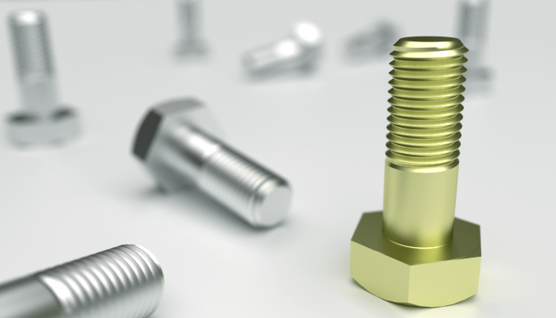Rendu avec un flou focal afin de mettre en avant un objet
En résumé
Même s'il ne remplace pas le Blender Render, Cycles s'annonce comme un moteur de rendu prometteur et déjà très puissant.
La gestion des matériaux diffère de celle du moteur interne. On dispose maintenant de matériaux pré-réglés que l'on peut ajuster et mélanger entre eux.
La manière d'éclairer dans Cycles est également originale : ce sont des meshes qui illuminent la scène avec le matériau de type Emission.
Pour un rendu réussi, pensez à utiliser une Light Probe. Elle peut servir à la fois d’environnement et de source d'éclairage.
Fatigué(e) de lire sur un écran ? Découvrez ce cours en livre.
Un des grands avantages de Blender est qu'il dispose d'une interface totalement personnalisable et ce, de manière très intuitive. Il est bien plus agréable pour chacun de naviguer dans un logiciel personnalisé selon ses habitudes et ses besoins !
À l'écran de démarrage par défaut, on note deux fenêtres : la vue 3D et la fenêtre des boutons. Il existe beaucoup d'autres types de fenêtres, telles que la fenêtre des courbes IPO, celle du NLA editor, la fenêtre de scripting…
Nous allons voir comment ajouter une fenêtre et changer son type.
Regardez attentivement les angles de chacune des fenêtres (vue 3D, fenêtre des boutons)… eh oui, comme vous pouvez le constater sur la figure suivante, il y a des sortes de rainures dans les coins !
Les rainures dans les coins permettent de faire apparaître une nouvelle fenêtre
Faites un clic gauche enfoncé sur un des bords et déplacez votre curseur vers l'intérieur de la fenêtre, comme indiqué à la figure suivante.
Déplacez votre curseur vers l'intérieur de la fenêtre
Une nouvelle fenêtre 3D est créée, totalement indépendante de l'autre. Vous pouvez par exemple zoomer dans l'une des vues, cela n'aura pas d'incidence sur l'autre.
Bien. Maintenant que vous savez comment faire apparaître une nouvelle fenêtre, apprenons à la faire disparaître : reprenons nos deux vues 3D et, en laissant le clic gauche enfoncé sur le même coin, remontez le pointeur de votre souris vers la fenêtre à effacer. Une zone grisée apparaît : relâchez votre clic gauche pour confirmer la fusion des deux fenêtres (voir figure suivante).
Faire disparaître une fenêtre
Une fois qu'on a pris le coup de main, ajouter et supprimer des fenêtres devient un jeu d'enfant.
Type de fenêtre
En bas (ou en haut) à gauche de chaque fenêtre se trouve une petite icône symbolisant le type de fenêtre actuel. Vous en avez un exemple aux figures suivante et suivante.
En rouge, le type de fenêtre dans lequel vous êtesEn rouge, le type de fenêtre dans lequel vous êtes
Cliquez dessus pour afficher le choix de tous les types de fenêtres (voir figure suivante).
Tous les types de fenêtres
Vous pouvez ensuite cliquer sur l'un des types de fenêtres pour le faire apparaître. Pour finir, sachez que Blender offre des interfaces déjà paramétrées que vous pouvez utiliser en fonction de la tâche sur laquelle vous travailler (animation, compositing…), dans la barre des menus.
Fatigué(e) de lire sur un écran ? Découvrez ce cours en livre.
Comme nous l'avons vu tout au long de cet ouvrage, les raccourcis clavier sont extrêmement utiles lorsque l'on utilise Blender. Ils nous permettent de gagner un temps précieux lors de la modélisation d'un objet, ou bien pour naviguer dans la fenêtre 3D.
Dans ce chapitre, vous retrouverez une petite liste qui reprend les différents raccourcis clavier que nous avons utilisés. Cette liste pourra donc vous être utile si vous avez un petit trou de mémoire lors de la réalisation d'une scène !
Notez toutefois que la présente liste n'est pas complète. Il existe des centaines et des centaines de raccourcis clavier dans notre logiciel 3D, une énumération totale serait donc violemment indigeste !
Expliquer Blender dans ses moindres détails exigerait sans doute d'écrire une collection de plusieurs énormes livres (et encore…), tant ce logiciel offre de possibilités. Modélisation, éclairage, texturage, animation, création de jeux vidéo… il est difficile de faire le tour de tous ces domaines aussi variés que passionnants.
Mais est-ce réellement nécessaire de connaître tous les outils pour réaliser une belle image ? Toucher les gens qui découvriront vos créations ?
Pour clore ce livre, voici donc quelques petits conseils qui vous permettront, je l'espère, de progresser et de continuer à vous faire plaisir avec Blender sans vous obliger à tout connaître !
Si je n'avais qu'un seul conseil à vous donner, ce serait celui-ci : pratiquez ! Comme pour une langue étrangère ou un instrument de musique, on progresse en 3D par la pratique. Vous aurez beau lire tous les livres ou regarder tous les tutoriels sur le sujet, tant que vous n'attaquerez pas sérieusement des images ou des animations, il sera difficile de vous améliorer.
Mais pratiquer n'est pas toujours facile. Parfois on commence un objet et, devant les difficultés ou l'avancement trop lent à notre goût, on perd la motivation et le fichier <minicode type="">.blend</minicode> reste inachevé dans un coin du disque dur…
Pour éviter cela, voici quelques astuces (qui sont le fruit d'une longue expérience !) :
1) Gardez de la mesure dans vos projets. Ne vous fixez pas des objectifs d'images ou d'animations intenables, commencez par des petits objets simples, mais soignez-en la modélisation, le texturage et l'éclairage. Trop de débutants se lancent dans des projets faramineux qui les découragent bien vite…
2) Fixez-vous une date limite. J'ai pris l'habitude de réaliser une image par semaine : c'est un délai à la fois assez court pour garder la motivation et assez long pour avoir le temps de réaliser une image aboutie. Se fixer à l'avance un délai raisonnable pour réaliser une scène est un très bon moyen de garder la concentration et la motivation nécessaires pour ce projet. Bien sûr, je ne vous déconseille pas pour autant de vous attaquer à des projets qui demanderaient plus de temps. Mais dans ce cas, organisez et planifiez le travail à l'avance de façon à savoir où vous allez.
3) Choisissez des thèmes qui vous passionnent. Guitariste dans l'âme ? Recréez l'instrument de vos rêves ! Fana de voitures ? À vous les Ferrari et Porsche ! Accro à votre smartphone ? Modélisez-le ! Votre conjoint(e) vous reproche de passer trop de temps devant l'ordinateur ? Créez-lui une jolie scène romantique pour vous faire pardonner (testé et approuvé !). Il est toujours plus facile de s'attaquer à des sujets qui nous intéressent, alors ne vous en privez pas !
Si vous n'êtes pas inspiré, regardez simplement autour de vous et choisissez un objet à recréer : un stylo, un meuble, un ustensile de cuisine, une bouteille, une lampe… qu’importe, le tout est de vous faire la main sur des objets simples puis de passer progressivement à des scènes plus compliquées. Un exemple ? Vous avez à la figure suivante quelques-unes de mes créations réalisées sur la base de ces principes et dans un laps de temps limité.
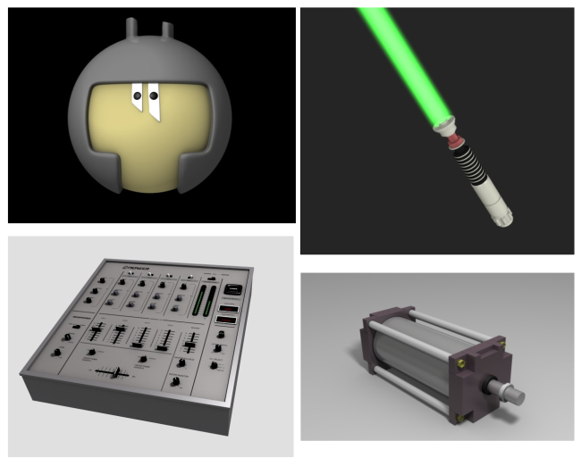Quelques créations… pas besoin de faire compliqué pour se faire plaisir !
Fatigué(e) de lire sur un écran ? Découvrez ce cours en livre.
L'échange avec les autres est un merveilleux moyen de progresser dans quelque domaine que ce soit, et la 3D ne fait pas exception !
Vous pouvez commencer par montrer vos réalisations à vos proches (amis, famille…), vous en tirerez sûrement compliments et encouragements. Il ne faut pas oublier que la 3D est un hobby peu répandu : beaucoup de gens sont surpris, voire impressionnés lorsque vous leur dites que vous êtes infographiste amateur.
Si vous avez un ami qui pratique également ce loisir, c'est encore mieux ! Mettez-vous ensemble devant Blender et amusez-vous !
En France, à Toulouse, il existe une petite association qui organise de temps à autre des ateliers et petites conférences sur Blender et les logiciels libres. Si vous avez la chance d’habiter dans cette région, n'hésitez pas à vous rendre à l'une de leurs interventions. Vous pourrez retrouver toutes les informations utiles sur leur site Internet.
Pour ceux qui n'ont pas la chance de pouvoir rencontrer en chair et en os des utilisateurs de Blender (je vous rassure, c'est la grande majorité), il existe bien évidemment les communautés d'utilisateurs en ligne où vous pourrez demander de l'aide ou bien présenter vos créations.
Il en existe deux principales :
Site du zéro : dans le forum « Graphisme 3D », vous retrouvez des dizaines de passionnés (dont votre humble auteur) disposés à vous prêter main forte si vous bloquez sur telle fonction, ou à venir publier des commentaires sur votre dernière réalisation. Ambiance chaleureuse et entraide garanties !
BlenderClan : c'est la plus vieille communauté francophone, réputée pour l'expertise de ses membres. Si vous avez une demande particulière ou une question un peu pointue, c'est l'endroit parfait pour la poser.
Pour les anglophones, il existe blenderartists.org, LE point de rassemblement de tous les passionnés de Blender venant des quatre coins du globe. Vous pourrez y rencontrer la plupart des développeurs qui travaillent sur Blender, des artistes professionnels et un nombre impressionnant de talentueux hobbyistes.
Fatigué(e) de lire sur un écran ? Découvrez ce cours en livre.
Comme tous les autres logiciels 3D, Blender est un programme riche de multiples possibilités ! Même quelqu'un qui l'utilise depuis plusieurs années ne peut prétendre le connaître de fond en comble. Pour vous dire, Ton Roosendaal, le créateur et développeur principal de Blender, avoue lui-même ne connaître que 70% de Blender ! Soyons humbles, chers lecteurs, il nous restera toujours un aspect de Blender à découvrir, et je n'ai certainement pas la prétention d'affirmer que ce cours contient tout ce qu'il vous faut pour maîtriser la 3D ! Par exemple, nous n'avons pas abordé l'utilisation de moteurs de rendu externes. Ils ont pour nom YafRay, Indigo, LuxRender, Octane… ces programmes peuvent se joindre à Blender (sous forme de scripts ou d'add-ons) pour générer un rendu en utilisant des algorithmes différents de ceux du moteur intégré à Blender. Le résultat est souvent saisissant de réalisme, mais nécessite fréquemment des réglages complexes. Pour appréhender ces moteurs de rendu externes, je vous conseille avant tout de vous plonger dans la documentation officielle, souvent bien fournie et suffisante pour débuter dans ce domaine.
L'un des avantages d'utiliser un logiciel libre, c'est qu'il y a souvent une communauté active et entreprenante derrière le programme. Blender en est un parfait exemple, et les sites proposant tutoriels et ressources pullulent sur la toile. Voici une petite sélection de sites où vous trouverez des tutoriels de très bonne qualité (et gratuits bien sûr !) pour approfondir vos connaissances :
Blendercookie.com : des tutoriels vidéo clairs et souvent ciblés sur la construction d'une scène ou la découverte d'un outil de modélisation.
BlenderGuru.com : toujours en anglais et également de haute qualité, Blender Guru est l'endroit idéal pour apprendre à recréer des effets spéciaux ou des scènes de A à Z.
Blendernation.com : c'est le site de référence pour suivre l’actualité de Blender au jour le jour. Au menu, comptes-rendus des nouveautés qui attendent Blender, mise en lumière de nouveaux artistes, revue de presse des différents produits de formation consacrés à Blender, etc.
Vous trouverez également sur la plateforme d'hébergement de vidéos YouTube (ou son équivalent francophone Dailymotion) de nombreux tutoriels proposés par des utilisateurs. La qualité de ces vidéos est fluctuante (tant sur la forme que sur le fond), mais l'intention est bien là et cela est généralement suffisant si vous souhaitez simplement découvrir une nouvelle fonction ou comment créer telle forme.
Mais au-delà de la maîtrise technique du logiciel, c'est bien l'humain derrière son ordinateur qui est l'auteur de chaque création. Et finalement, même avec peu de connaissances techniques, il est possible de créer des images pleines de beauté.
Laissez courir votre imagination, exprimez votre créativité et faites-nous rêver en 3D !
Et bien voilà, votre formation à la 3D avec Blender est terminée !
Rendez-vous compte de tout le chemin parcouru depuis le premier chapitre où vous ne saviez même pas ajouter un cube ! Maintenant, vous êtes capable de modéliser un objet, naviguer dans Blender, animer toutes sortes de choses, créer une scène réaliste... pfoulala, mais vous êtes devenus de vrais pro de la 3D, félicitations ! :D
Et maintenant, comment continuer à progresser ?
Continuez à pratiquer, construire de nouveaux projets, lire de nouveaux tutoriels, échanger sur le forum Graphisme 3D avec d'autres passionnés d'infographie, voilà quelques pistes pour pour vous améliorer ^^ .
Pour finir, je tenais à remercier l'équipe des validateurs et en particulier à SimSonic pour tout son travail de relecture, et conseils tout au long de l'écriture de ce tutoriel. Également, un immense merci au membre SniperKing qui s'est occupé de continuer la rédaction du tutoriel pendant mon absence en 2009. :)
Et n'hésitez pas à laisser un petit commentaire, ça fait toujours plaisir !
aerodark
Fatigué(e) de lire sur un écran ? Découvrez ce cours en livre.
 Le Robot, par Henri Hebeisen
Le Robot, par Henri Hebeisen


{kind=link}
{kind=link}
{kind=link}
{kind=link}
{kind=link}
{kind=link}
{kind=link}
{kind=link}
{kind=link}
{kind=link}
{kind=link}